此書は
有名なレウィス、キァロルと
云ふ
人の
筆に
成つた『アリス、アドヴェンチュアス、イン、ワンダーランド』を
譯したものです。
邪氣なき一
少女の
夢物語、
滑稽の
中自ら
教訓あり。むかし、
支那の
莊周といふ
人は、
夢に
胡蝶と
化つたと
云ふ
話しがありますが、
夢なればこそ、
漫々たる
大海原を
徒渉りすることも
出來ます、
空飛ぶ
鳥の
眞似も
出來ます。
世に
夢ほど
面白いものはありません。
今少時、
※［＃「女＋（「第−竹」の「コ」に代えて「丿」）、「姉」の正字」、U+59CA、1-7］さんの
膝を
枕の
假寐に
結んだ
愛ちやんの
夢、
解いてほどけば
美しい
花の
數々、
色鮮かにうるはしきを
摘みなして、この一
篇のお
伽噺は
出來あがつたのです。
［＃改丁］
愛ちやんは、
※［＃「女＋（「第−竹」の「コ」に代えて「丿」）、「姉」の正字」、U+59CA、1-4］さんと
堤の
上にも
坐り
勞れ、その
上、
爲ることはなし、
所在なさに
堪へ
切れず、
再三※［＃「女＋（「第−竹」の「コ」に代えて「丿」）、「姉」の正字」、U+59CA、1-5］さんの
讀んでる
書物を
覘いて
見ましたが、
繪もなければ
會話もありませんでした。
愛ちやんは、『
繪もなければ
會話もない
書物が
何の
役に
立つだらうか？』と
思ひました。
それで
愛ちやんは、
慰みに
雛菊で
花環を
造つて
見やうとしましたが、
面倒な
思ひをしてそれを
探したり
摘んだりして
勘定に
合ふだらうかと、（
暑い
日で
直に
眠くなつたり、
 然
然するものだから一
心に）
心の
中で
考へてゐますと、
突然可愛い
眼をした
白兎が、その
傍に
驅け
寄つて
來ました。
が、これぞと
云ふ
程の
事もありませんでした。
又愛ちやんは、
兎が
途から
駈け
出して
來て、『あァ／＼
遲くなつた』なんて
云ふだらうとは
些とも
思ひませんでした。（
後からよく
考へて
見れば
不思議だが、
其時にはそれが
全く
通常のやうに
思はれました）が、
其時兎は
實際襯衣の
衣嚢から
時計を
取出して、それを
見てゐましたが
軈て
駈け
出しました、
愛ちやんも
亦駈け
出しました。
愛ちやんは
兎が
襯衣の
衣嚢から
時計を
取出して、
面白さうにそれを
燒いて
了うなんてことを、
是れまで
决して
見たことがないわと
心に
一寸思ひました。
愛ちやんは
野原を
横斷つて
其後を
追蒐けて
行つて、
丁度それが
生垣の
下の
大きな
兎穴に
跳び
下りるのを
見ました。
直ぐ
其後から
愛ちやんも
下りて
行きました。
今度は
何うして
出て
來やうかと
云ふやうなことは
些とも
考へずに。
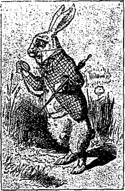
兎の
穴は
暫くの
間隧道のやうに
眞直に
通じて
居ました。
止まらうと
思ふ
隙もない
程急に、
愛ちやんは
非常に
深い
井戸の
中へ
落ちて、
びッしよりになりました。
井戸が
深かつたのか、それとも
自分の
落ちるのが
極めて
徐かつた
所爲か、
落ち
切つてから
身の
周りを
見廻し、
此先何うなるだらうかと
疑ひ
出した
迄には
隨分長い
間經ちました。
最初愛ちやんは
下を
見、それから
今迄の
事を
知らうとしましたが、
眞暗で
何一つ
見えませんでした。
乃で
愛ちやんは
井戸の四
方を
見て、
其處が
蠅帳や
棚で一ぱいになつてることを
知りました。
此處彼處に
地圖も
見えれば、
木釘には
數多の
繪も
掛つて
居ました。
過ぎがてに
愛ちやんは、
棚の
一つから一
個の
甕を
取下しました、それには『
橙糖菓』と
貼紙してありましたが、
空だつたので
大いに
失望しました。
愛ちやんは
脚下の
生物を
殺すのを
恐れて
其甕を
放り
出さうとはせず、
其處を
通りがけに
蠅帳の
一つに
其れを
藏ひました。
『よし、
此流れに
隨いて
行けば、
梯子段を
轉がり
落ちる
氣遣ひもなし！
家に
居る
皆がどの
位私を
大膽だと
思ふでせう！さうだ、
斯 事何
事何にも
話すまい、
縱令屋根の
上から
落ちても！』
愛ちやんは
自ら
斯事を
思ひました。（どれが
眞實のことやら）
下るわ、／＼、／＼。
流れは
何處まで
行つても
盡きないのかしら？『
今までに
私は
幾哩落ちたかしら？』と
愛ちやんは
聲高に
云ひました。『
私は
何處か
地球の
中心近くへ
出なければならない。オヤ、どうも四千
哩下りたらしいよ―』（
愛ちやんは
學校の
課業に
斯ういふ
風な
種々な
事を
習びました、そしてこれが
自分の
智識を
示すに
甚だ
好い
機會ではなかつたが、
誰も
聞いてるものがなかつたので一
層復習をするに
好い
都合でした）『――さア、
大分人里遠く
離れた――
緯度や
經度は
何の
邊まで
來てるでせう？』（
愛ちやんは
緯度が
何か、
經度が
何か、
其事は
些とも
知りませんでした、が
其言葉を
立派な
崇重な
言葉だと
思つて
居ました）
愛ちやんは
又直ちに
斯う
云ひ
出しました。『
私は
若しや
地球を
貫いて一
直線に
落ちて
行くのぢやないかしら！
逆さになつて
歩いてる
人間の
中へ
出て
行つたらどんなに
可笑いでせう！オー
可厭なこと、
私は――』（と
云つて、
今度は
正しい
言葉が
出なかつたものだから、
其處に
誰も
聞いてるものゝないのを、
寧ろ
喜びました）『――でも
私は
其國が
何といふ
國だか
其人達に
訊いてやりたいわ。ねえ
阿母さん、ニューズィーランドでせう、それともオーストレリア？』
（さう
云つて
阿母さんに
寄りかゝらうとしました――
皆さんが
空中を
落ちて
行く
時に
寄りかゝることを
想像して
御覽なさい！そんな
事が
出來るものでせうか？）『それで
阿母さんは、
私を
何といふ
莫迦な
娘だとお
思ひでせう！もう
决してお
尋ねしまい、
屹度何處かに
書いてあるわ』
下るわ、／＼、／＼。
所在なさに、
愛ちやんは
又話し
初めました。『
玉（
猫の
名）が
屹度今夜私を
探してよ！
皆が
夕飯時分に
牛乳皿を
出してやるのを
憶えてゝくれゝば
可いが。
玉や、さう／＼、お
前も一
緒に
來れば
好かつたね！
空中には
鼠は
居ないだらうけど、
蝙蝠なら
捕まへられる、それは
鼠に
酷く
似てゐるのよ。でも
猫が
蝙蝠を
食べるかしら？』ところで
愛ちやんは
徐々眠くなり、
夢でも
見てるやうに『
猫が
蝙蝠を
食べるかしら？
猫が
蝙蝠を
食べるかしら？』と
頻りに
云つてゐましたが、
時々反對に、『
蝙蝠が
猫を
食べるかしら？』なんて
云ひました、それで
愛ちやんは、どつちが
何うとも
其質問に
答へることが
出來ませんでした。
愛ちやんは
自分が
轉寐しながら、
玉と
手に
手を
取つて
歩いて
居るのを
夢に
見て、『さァ
玉ちやん、
眞實の
事をお
云ひ、お
前これまでに
蝙蝠を
食べたことがあるかい？』と一
生懸命になつて
云つて
居ますと、
急に、がさッ！／＼！といふ
音がして、
愛ちやんは
棒ッ
切れや
枯葉の
積み
堆なつた
上に
下りて
來て、
水の
流れは
此處に
盡きました。
愛ちやんは
些とも
怪我をしませんでした、
一寸跳び
上つて
上を
見ましたが
頭の
上は
眞暗でした。
愛ちやんの
前には、も
一つ
長い
路があつて、
白兎がまだ
急いで
駈けて
行くのが
見えました。
逡巡してゐずに
愛ちやんは
風のやうに
走りました、
兎が
角を
曲らうとした
時に、『あれッ、
私［＃ルビの「わはし」はママ］の
耳と
髯は
何うしたんだらう、
遲いこと』と
云ふのを
聞きました。
愛ちやんは
其後から
直ぐに
其角を
曲りましたが、もう
兎の
姿は
見えませんでした。
愛ちやんは
屋根から
ずらりと一
列に
吊られた
洋燈の
輝いてる、
長くて
低い
大廣間に
出ました。
大廣間の
周圍には
何枚となく
戸がありましたが、
何れも
皆閉つて
居ました。
愛ちやんは一
方は
下、一
方は
上と一
枚毎に
檢べてから、その
眞中へ
行つて
見ました、どうしたら
再び
出られるだらうかと
怪しみながら。
突然愛ちやんは、
全然丈夫な
硝子で
出來た
小さな三
脚洋卓の
所へ
來ました。
其上には
小さな
黄金造りの
鍵が
只一つあつたばかり、
愛ちやんは
最初、
此鍵が
大廣間の
戸の
何れか一
枚に
附屬してるに
違ひないと
思ひました、が
悲しいことには、
其錠が
大き
過ぎても
亦小さすぎても、
何れにせよ
何の
戸をも
開けることの
出來ないことです。けれども
次に
愛ちやんは
前に
氣のつかなかつた
窓帷の
所へ
來ました、
其背後には
殆んど五
尺位の
高さの
小さな
戸がありました、
愛ちやんは
其小さな
黄金の
鍵を
其錠に
試み、それが
ぴッたり合つたので
大悦び！
愛ちやんは
戸を
開けて、それが
鼠穴位の
小さな
路に
通じて
居ることを
知り、
膝をついて
前に
見たことのある
美しい
花園を、
其路について
覘き
込みました。
愛ちやんは
何うかして
此暗い
穴から
出て、
美しい
花壇や、
清冽な
泉の
邊に


ひたいと
頻りに
望みました、が
其戸口からは
頭を
出すことさへも
出來ませんでした、
可哀相に
愛ちやんは、『
縱令私の
頭ばかり
拔け
出しても、
肩が
無くては
何にもならない』と
思ひました。『
何が
何でも
望遠鏡のやうに
篏め
込まれては
堪らない！
些と
始めさへ
解ればもう
占めたものだ』
此頃では
身にふりかゝる
種々の
難事を、
愛ちやんは
何でも
一つとして
出來ないことはないと
思ふやうになりました。
此小さな
戸の
傍に
待つて
居ても
仕方がないと、
愛ちやんは
洋卓の
所へ
戻つて
行きました、
半は
他の
鍵を
見出したいと
望みながら、さもなければ
兎に
角、
人間を
望遠鏡のやうに
篏め
込む
何か
規則の
書物でもありはしないかと。
今度は
其上に
小さな
瓶が一
本ありました、（『
確かに
前には
此處に
無かつた』と
愛ちやんが
云ひました）
瓶の
頸には、『
召上れ』と
美事に
大字で
刷つた
貼紙が
結びつけてありました。
『
召上れ』と
云ふのだから
此程結構なことはないが、
悧巧な
小さな
愛ちやんは
大急ぎで
其れを
飮まうとはしませんでした。『
否え、
先ァ
見てから、
其上「
毒」か
毒でないかを
確かめなくては』と
云ひました、それと
云ふのも
愛ちやんが、
友達から
教へられた
瑣細な
道理を
憶えて
居なかつたため、
野獸に
食ひ
殺されたり、
其他正體の
知れぬものに
害されたりした
子供の
話を
種々讀んでゐたからです。その
瑣細な
道理と
云ふのは
例へば、
眞赤に
燒けた
火箸を
長い
間持つてると
火傷するとか、
又は
指を
小刀で
極深く
切ると
何時でも
血が
出るとか
云ふことです。それから
又『
毒』と
記してある
瓶から
澤山飮めば、それが
屹度晩かれ
早かれ
體の
害になるものだと
云ふことを
决して
忘れませんでした。
しかし、
此瓶には『
毒』とは
書いてありませんでした、
其故愛ちやんは
思ひ
切つてそれを
味つて
見ました、ところが
大變味が
好かつたので、

それは
實際櫻實漬、カスタード（
牛乳と
鷄卵とに
砂糖を
入れて
製したるもの）、
鳳梨、七
面鳥の
燒肉、トッフィー（
砂糖と
牛酪で
製して
固く
燔いた
菓子）、それに
牛酪つきの
※［＃「執／れんが」、U+24360、11-5］い
 麺麭
麺麭、と
云ふやうなものを一
緒にしたやうな一
種妙な
味がしました
 早速
早速それを
飮んで
了ひました。
＊ ＊ ＊
＊ ＊
『まア
好い
氣持だこと！
望遠鏡のやうに
締めつけられるやうだわ』と
愛ちやんが
云ひました。
眞箇にそんなでした。
愛ちやんは
今僅か一
尺あるかなしの
身長になつたので、これなら
其美しい
花園に
此小さな
戸口から
拔けて
行かれると
思つて、その
顏は
嬉しさに
輝きました。それでも
最初暫くは、もつと
收縮するだらうと
待つて
居ました。
愛ちやんは
些や
薄氣味惡くなつて
來たと
見えて、『
出て
行つた
先で、
私は
蝋燭のやうに
消え
失せて
了うのではないかしら、まァ
何うなるでせう？』と
呟いて、
試みに
蝋燭が
吹き
消された
後の

の
樣を
想像して
見ました、
前に
其物を
見たことを
記憶して
居ませんでしたから。
暫くしてから、もう
何ともないことを
知つて、
愛ちやんは
直ちに
花園へ
行かうと
决心しました、が
可哀相に
愛ちやんは、
戸口まで
來てから、
其小さな
黄金の
鍵を
忘れたことに
氣がついて、それを
取りに
洋卓の
所へ
戻つて
行つた
時には、もう
何うしてもそれに
手が
達きませんでした。
硝子を
透いて
明かにそれが
見えてるので、
愛ちやんは一
心に
洋卓の一
脚に
攀登らうとしましたが
滑々してゝ
駄目でした。
可哀相に
愛ちやんは、
終には
試し
草臥れて、
坐り
込んで
泣き
出しました。
『そんなに
泣いたつて
仕方がない』と
愛ちやんは
些や
鋭い
聲で
獨語を
云ひました。『
時間さへ
經てば
可いわ！』
愛ちやんは
何時も
自分に
良い
忠告をし、（それに
從ふことは
滅多にないが）
時には
涙の
出る
程我れと
我が
身を
責めることもありました。
甞て
自分一人で
毬投げをして
居て、
吾れと
吾れを
騙したといふので、
自分の
耳を
叩かうとしたことを
思出しました、それといふのも
此不思議な
子供が、
一人でありながら、
假りに
二人だと
思つてることが
甚だ
好きだつたからです。『
二人だと
思つても
駄目よ！と
云つて、
一人だけ
立派な
人にするんでは
滿らないわ！』と
愛ちやんは
可哀相にもさう
思ひました。
忽ち
愛ちやんは
洋卓の
下に
在つた
小さな
硝子筺に
眼がつきました。
開けて
見ると、
中には
極く
小さな
菓子があつて、それに『お
上り』と
美事に
小さな
乾葡萄で
書いてありました。『よし、
食べやう、
若し
其爲めに
私が、もつと
大きくなれば
鍵に
手が
達くし、
又若し
小さくなれば
戸の
下を
匍はれる、
何方にしろ
私は
其花園に
出られる、
何うなつても
關はない！』と
愛ちやんが
云ひました。
愛ちやんは
少し
食べて、
氣遣しさうに『
何方？
何方？』と
呟いて、
何方へ
大きくなつたかと
思つて
頭の
天邊へ
手をやつて
見ましたが、
矢張大きさが
同じなので
落膽しました。
確かに、これは
大抵の
子供が
菓子を
食べる
時に
起ることだが、
愛ちやんは
何か
素晴しいことが
起るのをばかり
望んで
居て、
通常の
道で
進んで
行くのは、一
生に
取つて
全く
鈍くさくて
莫迦氣てるやうに
思はれました。
それから
愛ちやんは
食べ
初めると、
直きに
其菓子を
平げて
了ひました。
［＃改ページ］
『
奇妙々々！』と
愛ちやんが
叫びました（
非常に
驚いた
爲に
何と
云つて
可いか
些と
解らず）『
今私は一
番大きい
望遠鏡のやうに、
何時も
外へ
向いたッきりだわ！
左樣なら、
足よ！（
足を
見下した
時に、それが
何處か
遠くの
方へ
行つて
了つたと
見えて、
殆んど
見えませんでした）。『オヤ、
可哀相に
私の
小さな
足は！
今、
誰がお
前に
靴や
靴足袋を
穿かしてくれるでせう？
私には
迚も
出來ないわ！でも、
餘り
遠ッ
離れて
居るんですもの。お
前精一ぱい
遣つて
御覽――だけど、
私深切にしてやつてよ。でなければ、
屹度足が
云ふことを
聞かないわ！
屹度さうよ。
耶蘇降誕祭の
度毎に
私は
新らしい
長靴を一
足づつ
買つてやらう』と
愛ちやんが
思ひました。
それから
愛ちやんは、それをするには
何ういふ
風にしたら
可いだらうかと
工夫を
凝し
初めました、『それには
乘物へ
乘つて
行かなければならない』と
思つたものゝ、『
足に
贈物をするなんて
餘程可笑いわ！
宛名が
何んなに
變でせう！
愛ちやんの右の足樣へ
火消壺の傍の、
竈雜布を献ぐ。
（愛ちやんの優しい心根から）。
まア、
何んといふ
莫迦な
事を
私は
云ふてるんでせう！』
折しも
愛ちやんは、
大廣間の
屋根で
頭を
打ちました。
實際愛ちやんは
今九
尺以上も
身長が
高くなつたので、
直ぐに
小さな
黄金の
鍵を
取り
上げ、
花園の
入口へ
急いで
行きました。
可哀相な
愛ちやん！
横になつて
一つの
眼で
花園を
覘き
込むことしか
出來ず
拔け
出ることは
前よりも一
層六ヶ
敷なつたので、
愛ちやんは
坐り
込んで
又泣き
出しました。
『
耻かしくもなく
能く
泣けたものですね』と
愛ちやんが
云ひました。『そんな
大きな
體をしてさ！』（
愛ちやんはよく
斯う
云ひます）『
泣くなんテ！お
默んなさい、よ！』
云つても
矢張同じやうに
泣いて
居て！
涙の一
斗も
流した
揚句、
到頭其處に
深さ
殆んど四五
寸の
大きな
池が
出來て、
大廣間が
半分も
浸つて
了ひました。
すると
遠くの
方でパタ／＼と
小さな
跫音のするのが
聞えました、
愛ちやんは
急いで
眼を
拭いて
何か
來たのだらうかと
見てゐました。
歸つて
來たのは
兎で、
綺羅美やかな
服裝をして、
片手には
白い
山羊仔皮の
手套を一
對、
片手には
大きな
扇子を
持つて、『あァ、
公爵夫人、
公爵夫人！あァ、
辛抱して
待つて
居たら
此情けない
目に
合やしなかつたらうに！』と
呟きながら、
大急ぎで
駈けて
來ました。
愛ちやんは
頗る
失望して
誰かに
助けて
貰はうと
思つてた
矢先でしたから
兎が
傍へ
來たのを
幸ひ、
低い
怕々した
聲で、『
萬望、
貴方――』と
云ひかけました。すると
兎は
何と
思つたか
大急ぎで、
白い
山羊仔皮の
手套も
落せば
扇子も
打捨つて、一
目散に
闇の
中へ
駈け
込みました。
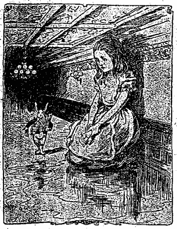
愛ちやんは
扇子と
手套とを
取り
上げ、
大廣間が
甚だ
暑かつたので、
始終扇子を
使ひながら
話し
續けました。『まァ
今日は
餘程奇妙な
日よ！
昨日は
何の
事もなかつたんだのに、
昨夜の
中に
私は
何うかなつたのかしら？さうねえ、
今朝起きた
時には
何ともなかつたかしら？、
何だか
氣が
些と
變なやうでもあるし、と
云つて、
若し
私が
同じやうでなかつたら
何うなるんでせう、
此世の
中で
誰れが
私なんでせう！まァ、それは
大きな
謎だわ！』そして
愛ちやんは、
自分の
同年齡で
自分の
知つてる
子供を
殘らず
片ッ
端から
考へ
始めました、
若しも
自分が
其中［＃ルビの「そのかな」はママ］の
誰かと
變へられたのではないかと
思つて。『
私、
確かに
花ちやんではなくッてよ』と
云て
愛ちやんは、『でも、
彼娘の
髮は
彼に
長い
縮ッ
髮だけど、
私のは一
本だつて
縮れちや
居ないもの。それから
又、
私は
確かに
松子さんでもなくッてよ、だッて、
私は
何でも
知つてるけども、
彼娘は、あァ、
彼娘は
些としか
知らしないわ！
第一
彼娘は
彼娘、
私は
私よ、それから――あァ
何だか
譯が
解らなくなつて
了つた！
私が
平常知つてた
事を
皆知つてるか
何うか
試して
見やう。
斯うと、四五十二、四六十三、四七――オヤ！そんな
割合では二十にならないわ！けど、
乘算九々
表も
當にならないのね。
今度は
地理の
方よ。
倫敦は
巴里の
首府なり、
巴里は
羅馬の
首府なり、
又羅馬は――ア、
皆間違つてるわ、
屹度！
私は
松子さんに
變へられたのだわ！
私試つて
見やう「
何うして
磨く、
小さな――」を』
乃で
愛ちやんは
恰度お
稽古の
時のやうに
前掛の
上へ
兩手を
組んで、それを
復習し
初めました、が
其聲は
咳嗄れて
變に
聞え、
其一語々々も
平常と
同じではありませんでした。――
『
何うして
磨く、
小さな
鰐が、
輝く
尾をば、
浴びるわ
浴びるわナイルの
河水
黄金の
鱗の一
枚ごとに！』
『
嬉しさうにも
齒並を
見せて、
爪をば
殘らず、
綺麗にひろげて
小魚を
招く、
愛嬌こぼるゝ
可愛い

で！』
『
屹度間違つてるわ』と
憐れな
愛ちやんが
云ひました、
眼には
涙を一ぱい
溜めて、『
私は
屹度松子さんになつたのよ、あの
窮屈な
小さな
家へ
行つて
住まなければならないのかしら、
翫具一箇有りやしないわ！それで、お
稽古ばかり
澤山させられてさ！あァ
斯うしやう、
私が
若し
松子さんだつたら
此處に
斯うして
止まつて
居やう！
他人の
頭を
接合けたつて
駄目だわ、「
復たお
出で、ね、一
體誰が
自分なんだか？」
能く
氣をつけて
居やう、「それが
解つたら
來るわ、それでなければ
私が
他の
人になるまで
此處に
居やう」――だけど、ねえ！』と
愛ちやんは
叫んで、
急に
泣き
出しました、『
誰か
頭を
下へおろしてくれゝば
可いなァ！もう
唯た
一人法師で
居るのは
可厭になつて
了つたわ！』
斯う
云つて
兩手を
見ると、
驚くまいことか、
愛ちやんは
話をしてる
中に
何時か
兎の
小さな
白い
山羊仔皮の
手套を
穿めて
居たのです。『
何うして
穿めたのかしら？』と
思ひました。『
私、
復た
小さくなるんだわ』
愛ちやんは
起き
上り、
身長を
度らうと
思つて
洋卓の
所へ
行きました、
自分で
思つてた
通り
殆んど二
尺も
高くなつて
居ましたが、
急に
又縮み
出しました。
愛ちやんは
直ちに
此れが
扇子を
持つて
居た
所爲だと
云ふ
事を
知つて
急いで
其扇子を
捨てました、
恰も
縮むのを
全く
恐れるものゝ
如く。
『それは
狹い
遁路だつたのよ！』と云つて
愛ちやんは、
急な
變化には
一方ならず
驚かされましたが、それでも
我が
身の
然うして
其處に
在つたことを
大層悦んで、『さァ
花園の
方へ！』と
云つて
全速力で
小さな
戸の
方へ
駈け
戻りました。しかし
悲しいことには、
小さな
戸は
又閉つてゐて、
小さな
黄金の
鍵が
以前のやうに
硝子洋卓の
上に
載つてゐました、『
前より
餘程不可いわ』と
此憐れな
愛ちやんが
思ひました、『だッて、
私は
先きには
斯に
小さかなかつたんですもの、なかつたんですもの！
眞箇に
餘程酷いわ、さうよ！』
云ひ
終るや
愛ちやんの
片足は
滑つて、
水の
中へ
ぱちやん！
愛ちやんは
鹹水の
中へ
まで
浸りました。
初め、
愛ちやんは
兎に
角海の
中へ
落ちたんだと
思つて、『そんなら
汽車へ
乘つて
歸れるわ』と
獨語を
云ひました（
愛ちやんは
生れてから
是迄に
只た一
度しか
海岸へ
行つたことがないので、
勝手に
斯う
獨斷をして
居ました。
英吉利の
海岸へ
行けば
何所にでも、
海の
中に
泳いでる
澤山の
機械が
見られる、
子供等は
木の
鍬で
沙ッ
掘りをしてゐる、そして一
列に
並んでる
宿屋、それから
其後ろには
停車場）
併し
愛ちやんは
直きに、
自分が
涙の
池に
落ちたんだと
云ふことに
氣がつきました。
其池は、
愛ちやんの
身長が九
尺ばかりに
伸びた
時に、
濡れ
法師になつた
池です。
『そんなに
泣くのは
止さう！』と
云つて
愛ちやんは、
出口を
見出さうとして
泳ぎ
廻りました。『
私は
今屹度罰せられるんだわ、
斯うして
自分の
涙の
中に
溺れるな
ンて―
眞箇に
奇態だわ！けども
今日は
何も
彼も
皆な
變よ』
折も
折、
愛ちやんは
少しく
離れて
池の
中で
何かゞ
水音を
立てゝるのを
聞きつけ
何だらうかと
思ひつゝ
傍へ／＼と
泳いで
行きました。
初め
愛ちやんは、それが
海象か
河馬に
違ひないと
思ひました。が
今の
我が
身の
小さいことに
氣がつくと
共に、それが
矢張自分のやうに
滑り
落ちた一
疋の
鼠に
過ぎないことを
知りました。『さて
此鼠に
何を
話してやらうかしら？
大抵皆な
變な
事ばかりだが、
兎に
角話しても
關はないだらう』と
愛ちやんが
思ひました。
乃で
愛ちやんが
云ふには、『
鼠ちやん、お
前此池の
出口を
知つてゝ？
私全然泳ぎ
草臥れて
了つてよ、
鼠ちやん！』（
愛ちやんはこれが
鼠と
話をする
正しい
方法だと
思ひました。
嘗て
此事をしたことはないのですが、
兄さんの
拉典語の
文典に、『
鼠は――
鼠の――
鼠に―
鼠を――おゥ
鼠ちやん！』と
書いてあつたのを
覺えて
居ましたから）
鼠は
些や
訝しげに
愛ちやんの
方を
見て、
其小さい
片方の
眼を
瞬くやうに
見えましたが、
何とも
云ひませんでした。
『
屹度それは
英語を
知らないんだ』と
愛ちやんは
思つて、『あァ
解つた
佛蘭西の
鼠だわ、ウィリアム
第一
世と一
緒に
來た』（
歴史を
習つたけれども
愛ちやんは、
何が
何年位前に
起つた
事か
判然と
知りませんでした）
乃で
又愛ちやんが
云ふには、『
私の
猫は
何處に
居るでせう？』それは
佛語教科書の一
番初めの
文章でした。
鼠は
水の
中から一
ト跳びはねて、なほも
跳び
出しさうに
全身を
振はして
居ました。『あら
御免よ！』と
愛ちやんは
急いで
叫びました、
此憐れな
動物の
機嫌をそこねた
事を
氣遣つて。『
私はお
前が
猫を
好かないことを
全く
忘れて
了つてゐたの』
『
猫は
可厭！』と
鋭い
激した
聲で
鼠が
云ひました。『
若しお
前樣が
私だつたら
猫を
好くの？』
『まァ
可厭なこと』と
優しい
聲で
云つて
愛ちやんは、『
怒ッちや
可厭よ。だけど、
私はあの
玉ちやんを
見せてあげたいわ、
若しお
前が
玉ちやんを
只た一
ト目でも
見やうものなら
屹度猫が
好きになつてよ、そりや
玉ちやんは
可愛らしくつて
大人しいわ』と
半ば
呟きながら
涙の
池を
物憂げに
泳ぎ
廻りました、『それから、
玉ちやんは
圍爐裏の
傍にさも
心地好ささうに、
咽喉をゴロ／＼
云はせながら
坐つて、
前足を
舐めたり、
顏を
洗つたりしてゐるの――
飼つて
見れば
可愛いものよ――
鼠捕りの
名人だわ――オヤ、
御免よ！』と
又愛ちやんが
叫びました。
今度は
鼠が
全身の
毛を
逆立つて
居たので、
愛ちやんは
屹度鼠が
甚く
怒つたに
違ひないと
思ひました。『そんなにお
前が
嫌ひなら、もう
玉ちやんのことは
話さないわ！』
『さう、
眞箇に！』
怖れて
尻尾の
先までも
顫へてゐた
鼠が
叫びました。』
若し
私が
斯事を
話したが
最期！
私の一
家族は
殘らず
猫を
仇敵に
念ふ。えッ、あの
不潔な、
下等動物め！もう二
度と
云ふのは
御免だ！』
『
私もさ！』と
云つて
愛ちやんは
大急ぎで
話を
外らしました。『え――
好き――い――い――
犬を？』
鼠が
返辭をしなかつたので、
愛ちやんは
又一
心になつて
續けました。『
私の
家の
近所に、それは
綺麗な
犬が
居てよ、お
前に
見せてやりたいわ！
可愛い
清しい
眼をした
獵犬よ、
知つてゝ、こんなに
長い
縮れた
茶色の
毛の！
何でも
投げてやると
取つて
來てよ、
御馳走なんぞ
遣るとチン／＼するわ――
私、よくは
知らないけど――それは
百姓の
犬で、
大變役に
立つんですッて、一
疋百
圓よ！それが
皆な
鼠を
殺すんですッて――ナニ、
否え！』と
痛ましげな
聲で
愛ちやんが
叫びました、『
又氣に
觸つたかしら！』
鼠が
池の
水を
攪き
亂し、一
生懸命に
泳ぎ
去らうとするのを、
愛ちやんは
靜かに
呼び
止めました。『
鼠ちやん！
戻つてお
出でよ、
可厭なら、もう
猫や
犬の
事を
話さないから！』
鼠はこれを
聞いて
振返り、
靜かに
再び
愛ちやんの
所へ
泳いで
來ましたが、
其顏は
眞青でした、（
愛ちやんはそれを
甚だ
氣の
毒に
思ひました）
鼠は
低い
慄へ
聲で、『あの
岸へ
行かうぢやありませんか、それから
身の
上談をしませう、
然うすれば
何故私が
猫や
犬が
嫌ひか
解ります』と
云ひました。
恰度立去るべき
時が
來ました、
池にはそろ／＼
其中に
落ち
込んだ
澤山の
鳥や
動物が
群集して
居ました。
家鴨やドード
鳥、ローリー
鳥や
小鷲、
其他種々の
珍らしい
動物が
居ましたが、
愛ちやんの
水先案内で、
皆な
隊を
成して
殘らず
岸に
泳ぎつきました。
［＃改ページ］
岸の
上に
集まつた一
隊は、それこそ
滑稽で
觀物でした――
鳥の
諸羽は
泥塗れに、
動物は
毛皮と
毛皮と
膠着かんばかりに
全濡になり、
雫が
たら／＼
落ちるので
體を
横に
捩つて、
氣持惡さうにしてゐました。
最初の
問題は、
云ふまでもなく
何うして
再びそれを
乾燥さうかと
云ふことで、その
爲め
皆なで
相談會を
開きました、
暫くして
愛ちやんは、
宛で
前から
皆なを
知つてでも
居たやうに、
臆面もなく
親しげに
話し
出しました。
乃で
愛ちやんは
隨分長い
間ローリー
鳥と
議論をしました、ローリー
鳥は
終には
澁ッ
面して
拗ねて
背中を
向けて、『
私はお
前より
年上だよ、
私の
方が
能く
知つてる
サ』と
只斯う
云つたばかりなので、
此愛ちやんはローリー
鳥が
果して
幾つ
年とつて
居るか、それを
聞かない
中は
承知しませんでした、がローリー
鳥が
何うしても
其年齡を
云ふのを
拒んだものですから、
終には
仕方なく
默つて
了ひました。
到頭、
其中でも
權勢家の
一人らしく
見えた
鼠が、『
坐り
給へ
諸君、まァ
聞き
給へ、
僕が
直きにそれの
乾くやうにして
見せる！』と
呶鳴りました。
多勢のものは
殘らず
言下に、
鼠を
中心にして
大きな
輪を
作つて
坐りました。
愛ちやんは
怪訝な
顏しながら
眼を
離さず
見て
居ました、でも
早速乾燥さなければ
屹度惡い
風邪を
引くと
思ひましたから。
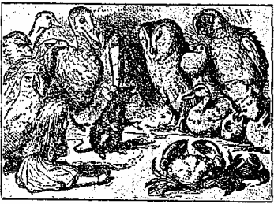
『エヘン！』と一つ
咳拂ひして、
鼠は
尊大に
構へて、『
諸君宜しいか？
最も
乾燥無味なものは
是です、まァ
默つて
聞き
給へ、
諸君！「ウィリアム
第一
世、
其人の
立法は
羅馬法皇の
御心に

ひ、
忽ちにして
首領の
必要ありし
英人の
從ふ
所となり、
近くは
纂奪［＃「纂奪」はママ］及び
征服を
恣にするに
至りました。エドウィン、モルカー、マーシア
及びノーザンブリア
伯、
皆然りです――」』
『ウム！』と
云つてローリー
鳥は
慄へ
上りました。
『
何です！』と
鼠は
顏をしかめたが、
頗る
丁寧に、『
何か
仰しやいましたか？』
『
私ではない！』とローリー
鳥が
急いで
云ひました。
『
貴方に
違ひありません』と
鼠が
云ひました。『――さて、「エドウィンとモルカー、マーシア
及びノーザンブリア
伯が
彼れに
盟ひました。するとカンタベリーの
忠節なる
大僧正スチガンド
氏すら、それを
當然の
事だと
思ひました――」』
『それを？』と
家鴨が
云ひました。
『それをさ』と
鼠は
些や
意地惡く
答へて、『
無論君も「それ」の
譯を
知つてるだらう』
『それは
能く
解つてる、
大方蛙か
蟲ぐらゐのものだらう』と
云つて
家鴨は『しかし、
僕の
訊くのは
大僧正が
何うしたと
云ふのだ？』
鼠は
此質問を
聞き
流して
速かに
云ひ
續けました、『――エドガーアセリングと
共に、
行きてウィリアムに
面謁し、
王冠を
捧げたのは
當然のことです。ウィリアムの
行動は
最初禮に
適ふたものでした。
併しながら
彼のノルマンの
倨傲――
何うかしましたか？』と
云つて
愛ちやんの
方を
振向きました。
『
矢張濡れてるは、
些とも
乾かなくッてよ』と
愛ちやんが
悲しさうに
云ひました。
『
然らば』とドード
鳥が
嚴格に
云つて
立上り、『
此會議の
延期されんことを
動議します。
蓋し、もつと
早い
有効な
治療方法が――』
『
英語で
云ひ
給へ！』と
云つて
小鷲は、『そんな
長ッたらしい
事は
半分も
解らない、
幾ら
云つたつて
駄目だ、
何れも
信ずるに
足らん！』
云つて
微笑を
秘すために
頭を
下げました。
他の
數多の
鳥の
中には
故意と
聞えよがしに
窃笑をしたのもありました。
『
余輩の
云はんと
欲する
所のものは』と
憤激してドード
鳥が
云ひました、『
吾々を
乾かせる
唯一の
方法は
候補競爭（
西洋鬼ごつこ）である』
『
候補競爭とは？』と
愛ちやんが
云ひました。
愛ちやんは
別段其れを
知りたくはなかつてのですが、ドード
鳥が
恰かも
誰かゞ
何か
話［＃ルビの「はは」はママ］すだらうと
思つて
言ひ
澱みましたが、
他に
誰も
何とも
言はうとするものがなかつたので。
『さて』ドード
鳥が
云ふには、『それを
説明する
唯一の
方法はそれを
行ふことである』（
若し
皆さんが
冬の
或る
日、
自ら
其れを
試みんと
欲するならば、ドード
鳥がそれを
如何にして
行つたかを
話しませう）
最初ドード
鳥は、
一の
輪を
描いて
競爭進路を
定めました、（「
輪の
形は
些や
正確でなくても
關はない」とドード
鳥が
云ひました）それから
其處に
居た一
隊のものが
皆な、
其進路に
沿うて
其方此方に
排置されました。『一、二、三、
進め』の
號令もなく、
各自に
皆勝手に
走り
出して
勝手に
止まりましたから、
容易に
競爭の
終りを
知ることが
出來ませんでした。けれども
各自に一
時間半か
其所いら
走り
續けた
時に、
全く
乾いて
了ひました、ドード
鳥は
急に、『
止めッ！』と
叫びました。
乃で
皆な
息喘きながら
其周圍へ
集つて
來て、『だが、
誰が
勝つたの？』と
各自に
訊きました。
此質問には、ドード
鳥が
大思想家でないため
答へることが
出來ず、一
本の
指で
其額を
抑え、
長い
間立つて
居ました（よく
繪にある
沙翁のやうな
姿勢をして）
其間他のものも
皆默つて
待つてゐました。
終にドード
鳥が
口を
開いて、『
各自に
皆な
勝つた、
皆な
褒美が
貰へる』
『しかし
誰が
褒美を
呉れるんですか？』と
異口同音に
尋ねました。
『
左樣、
無論、
彼娘が』と
愛ちやんを
指しながらドード
鳥が
云つたので、
其一
隊が
殘らず一
時に
愛ちやんの
周りを
取圍みました。『
褒美！
褒美！』とガヤ／＼
叫びながら。
愛ちやんは
當惑して、
知らず／＼
衣嚢に
片手を
入れ、
乾菓子の
箱を
取出し、（
幸ひ
鹹水は
其中に
浸込んで
居ませんでした）
褒美として
周圍のものに
殘らず
其れを
渡してやりました。
丁度一個と
一片宛。
『しかし
彼娘は
自分から
自分に
褒美を
貰はなければならない』と
鼠が
云ひました。
『
無論』とドード
鳥が
莫迦に
眞面目になつて
答へました。
『お
前は
未だ
他に
何か
衣嚢に
持つてるの？』と
云ひ
足して、
愛ちやんの
方を
振向きました。
『
只た
指環を
一箇』と
愛ちやんが
悲しさうに
云ひました。
『
皆な
渡してお
仕舞ひ』とドード
鳥が
云ひました。
それから
再び
皆なが
集つた
時に、ドード
鳥は
嚴かに
指環を
示して、『
吾輩は
此優美なる
指環を
諸君の
受納せられんことを
望む』
此短い
演説が
濟むと一
同拍手喝采しました。
愛ちやんは
何から
何まで
可笑くて
堪りませんでした、が
皆な
揃ひも
揃つて
眞面目くさつてるので、
眞逆自分獨り
笑ふ
譯にも
行きませんでした。
何と
云つて
可いか
解らぬので、
愛ちやんは
只一
禮し、
成るべく
嚴格な
容貌をして
指環を
取出しました。
それから
乾菓子を
食べました。
大きな
鳥は
其味が
解らないと
云つて
訴す、
小さな
鳥は
哽せて
背中を
叩いて
貰う、それは／＼
大騷ぎでした。それが
濟むと、
皆な
復た
輪になつて
坐り、もツと
何か
話してくれと
鼠に
迫りました。
『お
前身の
上話をする
約束ではなくッて』と
云つて
愛ちやんは、『
何故嫌ひなのサ――ネとイが』と
後から

くやうに
云ひました、
又鼠が
怒りはしないかと
氣遣はしげに。
『
私のは
長くて
其上可哀相なの』と
云つて、
鼠は
愛ちやんの
方へ
振向きながら
長太息を
吐きました。
『
長いの、さう』と
云つて
愛ちやんは、
鼠の
尾を
不思議さうに
眺めて、『でも、
何故可哀相なの？』
愛ちやんの
鼠が
話をしてる
間始終謎でも
聞いてるやうな
氣がしました、それで
愛ちやんの
考へでは、
其話といふのは
何か
斯風なものだらうと
思ひました。――
『福公が
家で鼠に
逢つて
云ふに
は、「一
緒に芝ッ
原へ來
い、罰
してや
るから――
サア、も
う何と
云つて
も駄目
だ。何
うして
も訊問
の必要
がある、
今朝か
ら眞箇
に何に
も爲な
いのだ
もの」
すると、
鼠が
小人
に
云ふに
は「こん
な
訊問が
何にな
るか、
檢
事もな
ければ
判事も
ない、
徒
らに
吾々
の
息を
費すば
かりだ」
「
僕が
判
事にな
つてや
らう、
檢
事にもな
つてやら
う」と云
つて狡猾
な福公は、
「吾輩が總
ての訴訟
を判く、
可いか、
汝に死
刑の宣
告をす
る」』
『お
前の
知つた
事ではない』と
鼠は
眞面目になつて
愛ちやんに
云つて、『
何を
考へてるのか？』
『え、
何ですか』と
愛ちやんは
丁寧に
答へて、『
貴方はこれで五
度お
辭儀をしましたね？』
『しない！』と
鼠は
怒つて
叫びました。
『
皆さん！』と
云つて
愛ちやんは、
尚ほ
續けやうとして
氣遣はしげに
身の
周りを
見廻し、『さア、これで
解散しやうぢやありませんか！』
『そんな
事をする
必要はない』と
云ひさま、
鼠は
起ち
上つて
歩き
出しました。
『
莫迦なことを
云ふ、それは
私を
侮辱すると
云ふものだ！』
『そんな
譯ぢやなくッてよ』と
優しくも
愛ちやんが
辯疏しました。『
眞箇に
腹立ッぽいのね、もう
怒つてゝ！』
鼠は
只齒軋りしたばかり。
『お
出でよ、
話してお
了ひな！』と
愛ちやんが
背後から
呼びかけました。
他の
者も
皆聲を
合せて、『さうだとも／＼！』
併し
鼠は
只口惜しさうに
頭を
振つて、さッさと
歩いて
行つて
了ひました。
『まァ、
行つて
了つた、
可哀相に！』
鼠の
姿が
全く
見えなくなるや
否や、ローリー
鳥は
斯う
云つて
長太息を
吐きました。
乃で
初めて
機會を
得て、一
疋の
年老つた
蟹が
自分の
娘に
云ひ
聞かせるには、『あァ、お
前ね！よく
憶えてお
居で、これは、お
前の
惡性は
何うしても
直すことが
出來ないと
云ふ
好い一つの
教訓だから！』『
何ですッて
阿母さん！』と
其若い
蟹が
怒つて
咬みつくやうに
云ひました。『
年甲斐もない、お
愼みなさい！』
『あァ、
此處に
玉ちやんが
居れば
可いにねえ！』と
別段誰に
云ふともなく
愛ちやんが
聲高に
云ひました。
『
玉ちやんて
誰のこと、え、
誰？』とローリー
鳥が
云ひました。
愛ちやんは
素より、
其可愛い
猫のことを
話さう
話さうと
思つてた
所だッたので、
※心［＃「執／れんが」、U+24360、43-12］に
答へて
云ふには、『
玉ちやんは
私の
猫よ。
鼠捕りの
名人だわ！あァ
然うだ、
鳥を
追ッ
驅ける
所を
見せてあげたいのね！それこそ
玉ちやんは
其れを
見るが
早いか、
直ぐに
小鳥などは
捕つて
食べて
了つてよ！』
此話は一
同に
著しき
感動を
與へました。
中には
遁出した
鳥さへあり、
年老つた一
羽の
鵲は
用心深くも
身仕舞して、『
家へ
歸らう、
夜露は
咽喉に
毒だ！』と
云ひ
出しました。
又金絲雀は
顫へ
聲で、『お
歸りよ、
皆な！もう
寢る
時分ぢやないか！』と
其子供等を
呼びました。
種々の
口實を
設けて、
皆な
殘らず
立去つた
後には、
唯た
愛ちやん
一人になつて
了ひました。
『
玉ちやんの
事を
話さなければ
可かつた』と
悲しげな
聲で
愛ちやんが
呟きました。『
誰も
此處に
居たもので、
玉ちやんの
好きなものはないと
見える、だけど、
屹度玉ちやんは
世界中で一
番良い
猫に
違ひないわ！おゥ
可愛い
玉ちやん！
私は
今迄のやうに
始終お
前の
傍に
居られるかしら！』
云つて
憐れな
愛ちやんは、
心細くなつて
急に
又泣き
出しました。
暫くして
愛ちやんは
遠くの
方で、パタ／＼
小さな
跫音のするのを
聞きつけ一
心に
其方を
見戌［＃「見戌」はママ］つて
居ました、
鼠が
機嫌を
直して、
戻つて
來て、
彼の
話を
終までして
呉れゝば
可いがと
思ひながら。
［＃改ページ］
來たのは
白兎でした、
再び
駈け
戻つて
來て、
恰も
何か
遺失物でもした
時のやうにきよろ／＼
四邊を
見廻しながら、『
公爵夫人！
公爵夫人！オヤ、
私の
可愛い
足は！
私の
毛皮や
髯は！
何と
云つても
屹度夫人は
私を
罰するに
違ひない！
何處へ
其れを
落したかしら？』と
呟くのを
聞いて、
愛ちやんは
立所に
屹度兎が
扇子と
白い
山羊仔皮の
手套とを
探して
居るに
違ひないと
思つて、
深切にも
其れを
尋ねてやりましたが、
何處にも
見えませんでした。――あの
涙の
池で
泳いでからは
何も
彼も
變つたやうで、
硝子洋卓も
小さな
戸のあつた
大廣間も
全く
何處へか
消え
失せて
了ひました。
忽ち
兎は
愛ちやんの
居るのに
氣がつき、
聲を
怒らして
呼びかけました、『オヤ、
梅子さん、
其處に
何をしてるの？
早く
行つて
手套と
扇子とを
持つてお
出で！
早くさ！』
愛ちやんの
驚きは
如何ばかりでしたらう、
直ぐに
兎の
指した
方へ
向つて
駈け
出しました、
間違つてるのも
何も
關はず。
『
私を
小間使だと
思つてるのよ』と
愛ちやんは
駈けながら
獨語を
云ひました。『
喫驚して
人の
見境もないんだわ！だけど、
扇子と
手套は
持つて
來てやつた
方が
可いわ――さうよ、
若し
有つたら』
云ひ
終ると
同時に
小綺麗な
小さな
家へ
來て
居ました、
其入口にはぴか／＼した
眞鍮の
表札に『
山野兎』と
其名が
彫りつけてありました、
愛ちやんは
聲もかけずに二
階へ
駈け
上りました、
眞實の
梅子さんに
逢つて、
扇子と
手套とを
見付けない
前に
戸外へ
追出されやしないかと
氣遣ひながら。
『
奇態だこと、
兎の
使ひに
來るな
ンて！』と
獨語を
云つて、『
今度は
屹度玉ちやんが
私を
使ひにやるだらう！』
云つて
愛ちやんは
其時の
事を
種々想像して
見ました、『「
愛ちやん！まァ
此處へお
出で、
用があるんだから
サ！」「
一寸お
入り、
乳母やも！
私が
歸つて
來るまで
鼠が
逃げ
出さないやうに、
此鼠穴を
番してお
居で」だけど』と
云つて
尚ほ、『
若し
斯風に
人を
使ふやうでも、
皆なが
玉ちやんを
家に
置いて
呉れるかしら！』
やがて
愛ちやんは
整然と
片付いた
小さな
部屋へ
行きました、
窓の
中には
洋卓もあり、
其上には（
愛ちやんの
望み
通り）一
本の
扇子と二三の
小さな
白い
山羊仔皮の
手套とが
載つてゐました。
愛ちやんは
其扇子と
手套とを
取上げ、
將に
其處を
立去らうとして、
姿見鏡の
傍にあつた
小さな
壜に
眼が
止まりました。
今度は『
召上れ』と
書いた
貼紙がありませんでしたが、それにも
拘らず
愛ちやんは
栓を
拔いて
直ちに
唇に
宛てがひました。『
屹度今に
好い
心持になるに
違ひない』と
獨語を
云つて、『
私の
食べたり
飮んだりするものは
何時でも
然うですもの、
何んなものだかこれも一つ
試して
見よう、
好い
鹽梅にも一
度私が
大きくなつて
呉れゝば
可いが、
全く
斯小さな
容體をしてるのは
可厭だわ！』
實際思つたよりも
早く、それを
半分飮まない
中に
愛ちやんは
頭が
天井につかへたのを
知り、
首の
折れない
用心に
屈んで、
急いで
壜を
下に
置き、『もう
澤山よ――もう
伸びたかないわ――
此通り、
戸外へ
出られなくなつて
了つてよ――
眞箇にあんなに
飮まなければ
好かつた！』と
獨語を
云ひました。
可哀相に！それは
最う
後の
祭でした！
愛ちやんは
段々大きくなるばかり、
見る
間に
床の
上へ
跪かなければならなくなつて、
其爲に
部屋は
忽ち一
寸の
隙間もない
程になりました、
愛ちやんは
仕方なく
片方の
肘は
戸に
凭れ、
片方の
腕は
頭の
下へ
敷いて
横になりましたが、それでも
尚ほ
寸々伸びて
行つて、一
番終には、
愛ちやんは
片腕を
窓の
外に
突出し、
片足を
煙突の
上へ
出しました、『どんな
事があつても
最うこれが
止りだらう、これで
何うなるのかしら？』と
呟きました。
愛ちやんの
爲には
勿怪の
幸、
小さな
魔法壜は
今充分其功能を
顯はし
終つたので、
愛ちやんも
最うこれより
大きくはなりませんでした、が、それは
非常に
不愉快で、
恐らくは
再び
其部屋から
出られる
機會がないと
知つた
時には、
何んなに
愛ちやんはつく／″＼
身の
不幸を
感じたでせう。
『
家に
居た
方が
幾ら
面白かつたか
知れないわ』と
呟いて、
最早これで
大きくもならなければ
小さくもなれず、
其上鼠や
兎に
追ひ
使はれるんなら。
私は
兎の
穴を
下りて
來なければ
好かつた――でも――でも――
奇妙だわ、こんな
生活！これから
何うなるのかしら！
私は
何時もお
伽噺を
讀む
度に、
有りさうにもない
突飛な
事ばかり
想像するのよ、
今も
其最中なの！
屹度私の
事を
書いた
本が
出來るわ、
屹度！
私が
大きくなつたら
一つ
書いてやらう――けど、
今最早大きくなつたんだわね』と
悲しげな
聲で、『もう
大きくならうとしても
隙がないわ』
『これから
先决して
最う
今より
齡を
加らないのかしら？』と
思つて
愛ちやんは、『そんなら
可いけど、一つ――
决してお
婆アさんにはならず――けども――
始終お
稽古をしなければならないのですもの！それが
一つ
可厭だわね！』『オヤ、
莫迦な
愛ちやんだこと！』と
自分で
自分に
云つて、『
何うして
此處でお
稽古が
出來て？まァ
部屋もありやしないわ、それから
教科書だッて！』
斯うして
愛ちやんは
自問自答を
續けて
居ましたが、
暫くして
外の
方で
何か
聲がするのを
聞きつけ、
話を
止めて
耳を
欹てました。
『
梅子さん！
梅子さん！
直ぐに
手套を
持つて
來て
頂戴！』と
云ふ
聲がして、
軈てパタ／＼と
梯子段を
上る
小さな
跫音がしました。
愛ちやんはそれが
自分を
見に
來た
兎だと
知つて、
屋をも
搖がさんばかりにガタ／＼
慄へ
上りました、
自分は
兎よりも
殆んど
千倍も
今大きくなつて
居るのだから
何も
怖れる
理由はないのですが、そんな
事は
全然忘れて
了つて。
忽ち
兎は
戸に
近づき、それを
開けやうとして
中の
方へ
押しましたが、
愛ちやんの
肘が
緊乎支へて
居て
駄目でした。『
仕方がない、
廻つて
窓から
這入らう』
愛ちやんは
兎が
斯う
獨語を
云ふのを
聞きました。
『それも
駄目だ』と
心秘かに
思つてる
中、
愛ちやんは
兎が
窓の
下へ
來たのを
知り、
急に
片手を
伸ばして
只當もなく
空を
掴みました。
何にも
捕らなかつたが
小さな
叫び
聲と
地響と
硝子の
破れる
音とを
聞きました、
其物音で
愛ちやんは、
兎が
屹度胡瓜の
苗床の
中へでも
落ち
込んだに
違ひないと
思ひました。
それから
怒氣を
含んだ
聲が
聞えました――
兎の――『
小獸や
小獸や！お
前何處に
居るんだい？』すると
聞き
慣れない
聲で、『
此處に
居るよ！
林檎を
掘つて！』
『
林檎を
掘つてるッて、
眞箇か！』と
兎が
腹立しげに
云ひました。『オイ、
來て
助けて
呉れ！』（
猶ほ
硝子の
破れる
音がする）
『
何うしたんだい、
小獸、
何だい
窓のは？』
『オヤ、
腕ぢやないか、え！（
彼はそれを『うンで』と
發音しました）
『
腕だ、
莫迦！そんな
大きな
腕があるものか？なんだ、
窓一ぱいぢやないか！』
『さうさ、お
前、けど、
何と
云つたつて
腕に
違ひない
サ』
『
兎に
角、
其儘で
置いちや
仕樣がない。
行つて
取つて
了はう！』
後は
暫らく
森として、
愛ちやんは
只折々こんな
きを
聞きました、『
眞箇だ、
可厭になつちまう、さうだとも、
全くさ！』『
僕の
云つた
通りにお
爲よ、
卑怯だね！』
終に
愛ちやんは
再び
其手を
伸ばしてモ一
度空を
掴みました。
今度は
二つの
叫び
聲がして、
又硝子のミリ／＼と
破れる
音がしました。『
胡瓜の
苗床が
幾つあるんだらう！』と
愛ちやんは
思ひました。『
彼等は
次に
何をするかしら！
引き
下せるなら
窓から
私を
引き
下して
呉れゝば
好いが！もう
長く
此處に
居たくない！』
愛ちやんはそれから
暫くの
間待つて
居ましたが
何にも
聞えませんでした。
良久て
小さな二
輪車の
響きがしたと
思ふと、
皆なで一
緒に
話しをする
好い
澤山の
聲が一
時に
耳に
入りました、
愛ちやんは
其言葉を
聞き
分けました、『
何處にモ一つ
梯子がある？――
何故私は一つしか
持つて
來なかつたんだらう。
甚公が
未だ
持つてる――
甚公が！それを
此處へ
持つて
來い、
丁稚！
其隅へ
置け――
先ァ
皆な一
緒に
縛れ――
皆なだッて
半分も
達きやしない――あァ！それで
可い、
別々にしては
駄目だ――さァ、
甚公！
此繩を
持つてろ――
屋根は
大丈夫かしら？――
其緩い
屋根瓦に
氣をつけろ――ソラ
落ちるぞ！
頭の
上へ！（
恐ろしい
響き）――オヤ
誰がそんな
事をしたんだ？――
甚公だらう――
煙突を
下りて
行くのは
誰だ？――
否え、
私ぢやない！お
前だ！――でも
私ぢやない、
甚公が
下りて
行くんだ――さァ
甚公！
旦那が
然う
云つたよ、お
前に
煙突を
下りて
行けッて！』
『あァ！それで
甚公が
煙突を
下りて
來たんだわ？』と
愛ちやんは
獨語を
云つて、『オヤ、
皆なが
甚公の
上へ
何も
彼も
積んでるわ！
私は
永く
甚公の
居る
所には
居まい。
此圍爐裡は
屹度狹いわ、どれ、
一寸蹴つて
見やう！』
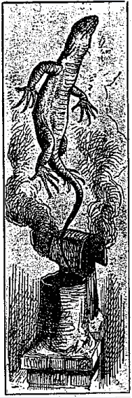
愛ちやんは
思ひ
切つて
遙か
下の
方へ
其煙突を
蹴落しました、
暫くすると
小さな
動物（
愛ちやんには
何だか
解りませんでした）が、
直ぐ
其煙突の
中で
攀登らうとして
引ッ
掻く
音を
聞きました、
乃で
愛ちやんは、『これが
甚公かしら』と
獨語を
云つて
又一つ
劇しく
蹴つて、それから
何うなる
事かと
見て
居ました。
愛ちやんは
最初多勢が一
緒に、『
甚公が
出た！』と
云ふのを
聞きました、それから
兎の
聲ばかりで――『
捕へろ、ソレ
生垣の
所へ！』やがて
又がや／＼と――『
頭を
抑へろ――サァ、
文公――
殺すな――
何うしたんだ、え？
何うかしたのか？
云はないかよ！』
終に
小さな
脾弱い
金切聲で（それが
甚公だと
愛ちやんは
思ひました）『さァ、
私には
解らない――もう、
有りがたう、もう
可い――でも
腹が
立つて
話せない――
皆な
知つてるけど、
何だか
ごちや／＼で
雜物箱のやうだ、
私は
烽火のやうに
空へ
上つて
行く！』
『
然うだ！』と
他の
者が
云ひました。
『
此家を
燒き
潰せ！』と
兎の
聲。
愛ちやんは
精一ぱい
大きな
聲で、『
其事をすれば
玉ちやんを
使嗾けるから
可いわ！』と
叫びました。
直ちに
皆な
息を
殺して
默つて
了ひました、
愛ちやんは
心に
思ふやう、『
彼等はこの
次に
何をするだらう！
若し
生があるものなら
屋根を
取除けるやうな
莫迦はしないだらう』
程經て
彼等は
再び
動き
出しました、
愛ちやんは
兎が、『
一ッ
車あれば
可い、さァ、
行らう』と
云ふのを
聞きました。
『一ッ
車、
何だらう？』とは
思つたものゝ
考へてる
隙もなく、
軈て
砂礫の
雨が
窓に
降りかゝると
見る
間に、二三
人して
愛ちやんの
顏を
打擲しました。
『
最う
爲ないから』と
愛ちやんは
獨語を
云つて、『
皆なも
最うそんな
事をしないでお
呉れ！』と
叫びました。すると
又皆な
默つて
了つたので
四邊が
森としました。
小石が
床の
上に
落ち
散つた
時に、それが
殘らず
小さな
菓子と
變つたのを
見て、
愛ちやんは
大層驚きました、が
又同時に
好い
事を
考へつきました。『
若し
此菓子を
一つ
食べたなら
屹度私の
大きさが
變つて
來るに
違ひない、
大抵大きくなる
氣遣ひはなからう。
小さくなるに
定まつてる』と
愛ちやんは
思ひました。
其故愛ちやんは
其菓子を
一個嚥み
込みました、ところが
直ぐに
縮み
出したのを
見て
喜ぶまいことか、
戸口から
出られる
位小さくなるや
否や
家から
駈け
出して、
戸外に
待つてる
筈の
小さな
動物や
鳥の
全群を
探しました。
憐れな
小さな
蜥蜴の
甚公が
眞中に
居て、二
匹の
豚に
支へられながら一
本の
壜から
何だか
出して
貰つて
居ましたが、
愛ちやんの
姿を
見ると
直ぐに
皆な
其方へ
突進しました、すると
愛ちやんは
何と
思つたか一
生懸命に
逃げ
出して
忽ち
欝蒼した
森の
中へ
無事に
駈け
込みました。
『
先づ
第一に、
復た
元の
身長にならなくては』と、
森の
中を
ひながら
愛ちやんは
獨語を
云つて、『それから
第二には、あの
美しい
花園に
行く
道を
探さなくてはならないが、
何か
良い
工夫はないかしら』
彼此と
種々優れた
簡便な
方法を
稽へては
見たものゝ、
只厄介な
事には
何うして
其れを
實行すべきかと
云ふ
名案を
持たなかつたことです。
愛ちやんは
心配さうに
木々の
間を
覗き
廻つてゐましたが、
軈て
其頭の
眞上にあつた
小さな
尖つた
木の
皮に、
ひよいと
眼が
着きました。
恐ろしく
大きな
犬ころが、
大きな
圓い
眼をして
愛ちやんを
見下して
居ました、
愛ちやんに
觸らうとして
前足を一
本恐る／＼
伸ばして。
愛ちやんは
媚へるやうな
聲で、『まァ、
可哀相に！』と
云つて、
思はず
口笛を
吹かうとしました、が、
待てよ、
若し
其犬ころが
飢ゑて
居ては、
幾らお
世辭をつかつても
屹度噛み
殺されて
了うに
違ひないと
思つて、
心配の
餘りガタ／＼
慄へてゐました。
われ
知らず
愛ちやんは
小枝の
切ッ
端を
拾ひ
上げ、それを
犬ころの
方へ
出してやると、
犬ころは
直ちに四ッ
足揃へて
空に
跳び
上りさま、
喜び
勇んで
其枝に
吠えつきました、
乃で
愛ちやんは
跳びつかれては
大變だと
大きな
薊の
後へ
身をかはしました。一
ト廻りして
愛ちやんが
他の
方へ
現れた
時に、
犬ころはモ一
度枝を
目蒐けて
跳びかゝり、それに
掴まらうとして
餘り
急いだ
爲め、
過つて
筋斗返りを
打ちました。
其時愛ちやんは
犬ころが、
馬車馬の
眞似をして
遊ぶのが
大好きだと
云ふことを
思ひ
出したので、
踏みつけられては
大變だと
再び
薊の
周圍を
廻りました、
犬ころは
其枝へ
跳びうつるばかりになつて、
嬉しさうに
絶えず
戯れたり
吠えたりして、
呼吸苦しい
所爲か、ゼイ／＼
云ひながら、
其口からは
舌を
垂れ、
又其大きな
眼を
半ば
閉ぢてゐました。
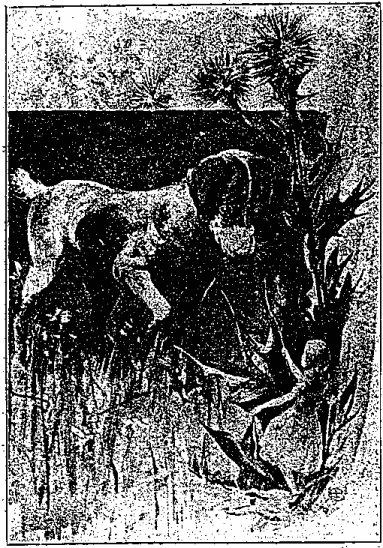
われ知らず愛ちやんは小枝の切ツ端を拾ひ上げ、それを犬ころの方に出してやりました、
愛ちやんは
今こそ
逃げるに
好い
時だと
思つて
遽かに
駈け
出し、
終には
疲れて
息も
絶れ、
犬ころの
遠吠が
全く
聞えなくなるまで
走り
續けました。
『でも、
可愛い
犬ころだッたわね！』
息まうとして
毛莨に
凭り
掛つた
時に、
其葉の一
枚を
取つて
扇ぎながら
愛ちやんが
云ひました、『
私が
若しそんな
事をする
年頃ならば、ねえ！――もつと
澤山惡戯を
教へてやつたもの！
復た
大［＃ルビの「おは」はママ］きくならなければならないのだが！しかし――
何うしたら
可いでせう？
屹度何か
食べるか
飮むかすれば
可いに
違ひないわ、けれども
茲に
大問題があるのよ、
何？』
大問題と
云ふのは
確かに『
何？』と
云ふことでした。
愛ちやんは
自分の
周圍にある
草の
花や
葉を
殘らず
見ましたが、
此場合食べたり
飮んだりして
可いやうな
適當の
物を
見出すことが
出來ませんでした。
所が
不圖傍を
見ると
自分の
身長くらゐもある
大きな
菌が
出て
居るのに
氣がつくや、
早速其兩面と
後ろとを
見終つたので、
次には
其頂きに
何があるかを
能く
檢査する
必要が
起つて
來ました。
愛ちやんは
爪先で
立上り、
菌の
縁を
殘る
隈なく
見て
居る
中、
端なくも
其眼は
直ちに
大きな
青い
芋蟲の
眼と
出合ひました。
芋蟲は
腕を
組んで
其頂きに
坐り、
悠々と
長い
水煙草の
煙管を
喫してゐて、
愛ちやんや
其他の
物にも
一切眼をくれませんでした。
［＃改ページ］
芋蟲と
愛ちやんとは
互に
暫く
默つて
睨ツ
競をして
居ましたが、
終に
芋蟲が
其口から
煙管を
離して、
舌ッたるいやうな
眠さうな
聲で、
『
誰だい？』と
言葉をかけました。
こんな
事では
なか／＼
談話の
口切にはなりませんでしたが、それでも
愛ちやんは
些や
羞かみながら、『
私――さうね、
今――それは
今朝起きた
時から
私が
誰だか
位は
知つゝてよ、けれども
是迄に
何遍［＃ルビの「なんぺん」はママ］も
變つてるからね』
『
何だつッて？』
芋蟲は
嚴めしさうに
云つて、
『お
前何者だ！』
『
何だか
解らないの、
自分で
自分が』と
云つて
愛ちやんは、『でも、
自分が
自分でないんだもの、ね』
『
解らないなァ』と
芋蟲が
云ひました。
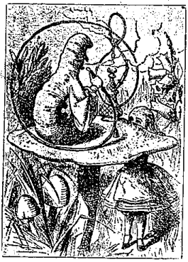
『けど、もつと
分明云へと
云つたつてそれは
無理よ』
愛ちやんは
極めて
愼ましやかに
答へて、『でも、
私は
初ッから
自分で
自分が
解らないんですもの、
幾度も
大きくなつたり
小さくなつたりしたんで、
何が
何だか
滅茶苦茶になつて
了つてよ』
『そんな
筈はない』と
芋蟲が
云ひました。
『では、
未だお
前はそれを
知らないんだわ』と
云つて
愛ちやんは、『でも、お
前が
蛹に
化つてから――
何時かしら
屹度解るわ――それから
更た
蝶になる
時に、お
前はそれを
幾らか
變だと
思ふに
違ひないわ？』
『
些とも、
何とも
思やしない』と
芋蟲が
云ひました。
『まァ、お
前の
感覺は
何うかしてるんだわ』と
云つて
愛ちやんは、『
私には
何うしても
變に
思はれてよ』
『お
前に！』と
芋蟲は
輕蔑して、『一
體お
前は
誰だい？』
爰で
復た
話談が
後戻りをしました。
愛ちやんは
芋蟲がこんな
詰らぬ
念を
押すので
少し
焦心ッたくなつて、やゝ
後退りして
極めて
眞面目に
構へて、『お
前こそ
誰だ、一
體前に
話すのが
當然ぢやなくッて』
『
何ッ？』と
芋蟲。
乃で
種々押問答しましたが、
愛ちやんの
方でも
別段巧い
理屈も
出ず、
殊に
芋蟲が
非常に
不興げに
見えたので、
愛ちやんは
早速戻りかけました。
『お
還りよ！』と
芋蟲が
後から
呼びかけて、『
大事な
事を
云ひ
殘したから
サ！』
これは
確かに
有望だと
思つて、
愛ちやんは
振向きさま
再び
歸つて
來ました。
『さう
怒るものぢやない』と
芋蟲が
云ひました。
『
其ッ
限り？』と
愛ちやんはグツト
怒りを
嚥み
込んで
云ひました。
『
否え』と
芋蟲。
愛ちやんは
他に
別段用事もなかつたので、
大方終ひには
何か
良い
事を
話して
呉れるだらうと
思つて
悠然待つてゐました。
暫くの
間芋蟲は
話しもしないで
莨の
煙を
吹いて
居ましたが、
終には
腕組を
止めて
再び
其口から
煙管を
離し、
『それでもお
前は
變つたと
思へるか、え？』
『さうらしいのよ』と
云つて
愛ちやんは、『でも、
習慣になつて
了つて
憶えて
居られないわ――だッて、十
分間を
全く
同じ
大きさで
居られないのですもの』
『
憶えて
居ないッて、
何を？』と
芋蟲が
云ひました。
『
私、「
小さな
蜜蜂」の
唱歌［＃ルビの「しよう」はママ］を
云つて
見たの、けど、
皆な
違つて
居たのよ！』と
愛ちやんは
大層悲しげな
聲で
答へました。
「『
裏の
老爺さん」を
復誦して
御覽』と
芋蟲が
云ひました。
愛ちやんは
兩手を
擴げて、
歌ひ
初めました。――
若い
男の
云ふことにや、
『
裏の
老爺さん、
白髮になつた、
それでも、
頭で
立つては
居るが――
幾歳になつたか
憶えてゐるか？』
裏の
老爺さんの
云ふことにや、
『
若い
時分にや
一生懸命、
腦味噌痛めぬ
算段ばかり、
斯うした
平氣も、それがため』
若い
男の
云ふことにや、
『
老爺さん、
此頃莫迦げて
肥えた、
それでも、
妄に、
戸板の
上で、
筋斗返りするとは
何うした
譯だ？』
白髮頭を
振り
立てゝ、
裏の
老爺さんの
云ふことにや、
『
手足へ
貼ッ
置いた
膏藥の
所爲で――
一
錢で
一ト箱――
二箱賣ろか？』
若い
男の
云ふことにや、
『
蝋より
軟い
してゝ
骨から
嘴から、すッかり
揃た――
そんな
鵞鳥が
何うして
造つた？』
裏の
老爺さんの
云ふことにや
『これでも、
若い
時や、
芝ッ
原へ
出かけ、
偶には、
嚊ァと
角力をとつた、
腕の
力の
今猶ほあれば』
若い
男の
云ふことにや、
『
年齡の
加※［＃「冫＋咸」、U+51CF、70-10］で
眼は
霞んでも、
鼻ッ
粱［＃「粱」はママ］で
鰻の
藝當――
感心する
程、
上手な
技倆』
裏の
老爺さんの
云ふことにや、
『これで、
三つの
問答が
終へた、
文句云はずに、さッさと
歸れ、
歸らにや、
蹴るぞよ、
梯子段の
下へ！』
『それは
間違つてる』と
芋蟲が
云ひました。
『
間違つてるかも
知れないわ』と
愛ちやんは
恐る／＼
云つて、『
二言や
三言は
變へたのよ』
『
始から
終まで
間違つてる』と
斷乎芋蟲が
云ひました。それから
双方とも
口を
噤んで
了つたので、
暫くの
間又森としました。
やがて
芋蟲から、
『どの
位大きくなりたいのか？』と
訊きました。
『
特別然う
大きくなりたかないの』と
答へて
愛ちやんは
忙しさうに、『
他の
人もこんなに
度々變るかしら、え』
『
知らないねえ』と
芋蟲。
愛ちやんは
何とも
云ひませんでした、
生れてから
今までに
斯無愛想な
事を
云はれたことがなかつたので、
愛ちやんは
甚だ
面白からず
思ひました。
『お
前それで
滿足かい？』と
芋蟲。
『
然うねえ、も
少し
大きくなりたいの、
知らず
識らずの
中に』と
云つて
愛ちやんは、『三
寸ばかりぢや
見窄らしくッて
不可いわ』
『それで
結構さ！』と
芋蟲は
氣短かに
云つて、ツイと
伸し
上ると（それが
丁度三
寸の
高さでした）。
『
其位ぢや
滿足は
出來ないわ』と
痛ましげな
聲で
憐れな
愛ちやんが
呟いて、さて
思ふやう、『
何うかして
芋蟲を
怒ッぽくしない
工夫はないものかしら』
『
今に
習慣で
何ともないやうになつて
了う』と
云つて
芋蟲は、
口に
煙管を
啣へて
再び
喫み
初めました。
今度も
愛ちやんは、
芋蟲が
復た
話し
出すまで
辛抱して
待つて
居ました。
良久して
芋蟲は
口から
煙管を
離し、二つ三つ
欠をして
身振ひしたかと
思ふと、
軈て
菌の
下を
草の
中へ這ひ
込みました、
只斯う
云ひ
殘して、『一
方へばかり、もッと
高く、それから一
方は、ずッと
短かくしてやらう』
『一
方ッて
何の？モ一
方ッて
何方？』と
愛ちやんは
考へました。
『
菌のさ』と
芋蟲は、
恰も
愛ちやんに
問はれたかの
如く
聲高に
云つて、
直きに
見えなくなりました。
愛ちやんは
暫く
立停り、
其兩面を
知らうとして一
心に
菌を
眺めて
考へ
込みました、それが
全く
眞圓だつたので、これは
甚だ
厄介な
難問題だと
思ひました。が、やがて
愛ちやんは、
伸びるだけ
遠くへ
兩腕を
伸ばして、
其端を一
ト片叩き
落しました。
『さァ、
何方が
何方？』と
呟いて、
功能を
試すために
右手に
持つた一
ト片を
少し
舐めました、すると
愛ちやんは
忽ち、
其顎の
下を
強か
打たれたのに
氣がついて、
不圖見ると、
顎と
足と
鉢合せをしてゐました。
愛ちやんは
此急激な
變化に
一方ならず
驚かされました、
逡巡してる
場合ではないと
知つて、
直に
他の
手に
持つた
一ト片を
食はうとしましたが、顎が
足に
緊乎と
接合いて
了つてるので、
殆んど
口を
開くことも
出來ませんでした、
辛とのことで
左手の
一ト片を
少しばかり
嚥み
込みました。
＊ ＊ ＊ ＊
＊ ＊ ＊ ＊
『オヤ、
私の
頭は
何處かへ
行つて
了つたわ』
愛ちやんは
雀躍して
喜んだ
甲斐もなく、
其喜びは
忽ち
驚きと
變じました、
愛ちやんは
自分の
肩が
何處にも
見えなくなつたのに
氣がついて、
方々探し
廻り、
下を
見ると
驚く
程首が
長くなつて
居て、
宛でそれは、
遙か
眼下に
横たはれる
深緑の
木の
葉の
海から
抽き
出て
居る
莖のやうに
見えました。
『あの
緑の
織物は
皆な
何でせう？』と
云つて
愛ちやんは、『
何處へ
私の
肩は
行つて
了つたのかしら？オヤ、
可哀相に、
何うしたんでせう、
私の
手も
見えないわ？』
愛ちやんは
斯う
云ひながらそれを
振つて
見ましたが、
別に
變つた
事もなく、
只遠方の
緑の
葉の
中で、それが
僅かばかり
動いてゐました。
頭へ
其手を
上せることは
迚も
出來さうもないので、
愛ちやんは
頭を
下げて
手に
達かせやうとして、
今度は
自分の
首が
蛇のやうに
容易に
遠くの
方へ
曲り
廻るのを
見て
大變喜びました。
愛ちやんは
軟かい
梢を
押し
分けて、
其首を
突ッ
込み、
半圓を
描きながら
巧みに
青葉の
中に
濳らうとしました、
愛ちやんは
此時まで、
木の
葉は
只樹の
頂上にのみあるものだと
思つてゐました、
木の
下に
［＃「」はママ］つてると
何處ともなく
叱ッと
云ふ
聲がしたので、
思はず
愛ちやんは
後退りしました、ト一
羽の
大きな
鳩が
顏に
飛びついて、
翼を
以て
激しく
愛ちやんを
搏ちました。
『
蛇だ！』と
鳩が
叫びました。
『
蛇ぢやないわ！』と
愛ちやんは
腹立しげに
云つて、『
大きなお
世話よ！』
『ナニ
蛇だ、
蛇だ！』と
繰返しましたが
鳩は、
以前よりも
餘程優しく、
其上可哀相に
歔欷までして、『
私は
種々經驗したが、
蛇に
似寄つたものは
他に
何もない！』
『お
前の
云ふことは
少とも
解らない』と
愛ちやんが
云ひました。
『
私は
所有木の
根を
驗べました、
堤防も
試ました、それから
垣も』と
云ひ
足して、
鳩は
愛ちやんには
關はず、『けど
蛇は！
誰でも
嫌ひだ！』
愛ちやんは
益々何の
事だか
譯が
解らなくなりましたが、
鳩の
言葉の
終るまで
何にも
云ふまいと
控へてゐました。
『
縱令、それが
全く
卵を
孵す
邪魔をしないにせよ』と
云つて
鳩は、『それにしても、
私は
晝夜蛇を
見張らなければならない！さう
云へば、
私はこの三
週間些とも
羊の
影も
見ないが！』
『まァ、
氣の
毒だわねえ』
愛ちやんは
徐々その
意味が
解つて
來ました。
『
何時でも
森の
中の一
番高い
木に
登つて』と
云つて
鳩は、
金切聲を
張上げて、『これなら
大丈夫だと
思つてると
屹度、
彼奴が
宙からぶらりと
下つて
來る！ソラ、
蛇だ！』
『でも、
私は
蛇ぢやなくッてよ、さうよ！』と
云つて
愛ちやんは、『
私はね――
私はね――』
『え、お
前は
何？』と
鳩が
云つて、『
何か
發明でもする
人かね！』
『
私――
私は
小さな
娘よ』と
云つて
愛ちやんは、一
日の
中に
何遍も
變化したことを
思ひ
出して、
些や
顧慮いやうな
氣がしました。
『さうか、
眞箇に！』と
鳩は
甚く
輕蔑した
口調で、『これまでに
澤山小さな
女の
子を
見たが、
人間はそんな
首をしちや
居ない！いや／＼！お
前は
蛇だ、
何と
辯疏しても
駄目だ。お
前は
未だ
卵の
味を
知るまい！』
『
知つてるわよ、
私、
卵を
食べたわ、
眞箇よ』と
極めて
正直な
愛ちやんが
云ひました、『
小さな
女の
兒だつて
蛇のやうに
矢張卵を
食べるわ、けど』
『
何うだか』と
云つて
鳩は、『
若し
然うなら、
彼等も
蛇の一
種だ、さうだらう』
愛ちやんは
呆氣にとられて
暫く
凝と
默つて
居ました、そこで
鳩が
又、『お
前は
卵を
狙つてる
ナ、
的然知つてるから。お
前が
小さな
女の
兒であらうと、
假令又蛇であらうと、それは一
向差支へないやうなものだが！と
云ひ
續けました。
『
大變差支へるわ』と
愛ちやんは
急いで
云つて、『
卵など
狙つちや
居なくつてよ、そんな、そんな
卵なんて
欲しかないわ。
生なもの
厭なこッた』
『
巧い
事云つてら！』と
云ひ
捨てゝ
鳩は
再び
巣に
落着きました、
愛ちやんは
首が
枝から
枝に
絡みさうなので、
出來るだけ
森の
中に
屈んでゐましたが、
歩く
時には
屡々足を
停めて、それを
彼方此方へ
曲げなければなりませんでした。
軈て
愛ちやんは
猶ほ
其兩手に
菌の
缺片を
持つてゐたのに
氣がついて、
怕る／＼
再びそれを
食べ
初めました、
初［＃ルビの「じ」はママ］めは一
方を、それから
他の
方を
交る／″＼
舐めて、
普通の
身長になるまでには
幾度大きくなつたり
小さくなつたりしたか
知れませんでした。
長い
間かゝつて
辛と
元の
大きさになるや、
愛ちやんは
常の
如く
獨語を
云ひ
初めました、『まァこれで
安心した、
餘り
變るので
何が
何だか
譯が
解らなくなつて
了つたわ！一
分間と
同じで
居ないのですもの！けど、
最う
今は
元の
大きさよ、これから
彼の
美しい
花園に
這入りさへすれば
可いんだ――
何うしたら
入れるかしら？』
其時愛ちやんは
突然打開いたる
廣場に
出ました、
其所には
漸く四
寸位の
高さの
小家がありました、『
誰が
住んでも
關はないのだらう』と
愛ちやんは
思ひました、『
此位の
身長では
駄目よ、さうだ、
一つ
彼等を
驚ろかしてやらう！』と
云つて
愛ちやんは、
再び
右手の
一ト片を
舐め
初めました、それから九
寸位の
高さになるまでは、
何うしても
其家の
側へ
近寄りませんでした。
［＃改ページ］
暫時の
間愛ちやんは
立つて
其家を
眺めながら、さてこれから
何うしたものだらうと
思案最中、
突然一人の
歩兵が
制服を
着けて
森の
中から
驅け
出して
來ました――（
制服を
着けて
居たので一
見歩兵と
云ふことが
解りましたが、さもなければ、
只其顏だけで
判斷したなら、
或は
愛ちやんは
其の
者を
魚と
稱んだかも
知れませんでした）――
拳で
荒々しく
戸を
敲くと、
戸は
中から
制服を
着けた、
圓顏で
蛙のやうに
大きい
眼をしたモ
一人の
歩兵の
手で
開かれました。
歩兵は
二人共、
其縮れた
髮の
毛に
殘らず
火藥を
仕込んで
居るやうに
愛ちやんは
思ひました。
愛ちやんは
何も
彼も
不思議で
堪らず、
森の
外に
這ひ
出して、
聞ゆる
事もやと
耳を
欹てました。
魚の
顏した
歩兵は
其腋の
下から
殆んど
自分の
身長位もありさうな
大きな
手紙を
取り
出して、
此れをモ
一人の
歩兵に
手渡しながら
嚴かな
口調で、
※公爵夫人［＃「※」は底本では「』」の転倒］の
許へ
毬投げのお
催しあるに
就き、
女王樣よりの
御招待状』。すると
今度は
蛙の
歩兵が、
同じ
嚴かな
口調で
繰返しました、
只僅か
言葉の
順を
變へて、『
女王樣より。
球投げのお
催しあるにつき
公爵夫人への
御招待状』
云つて
二人が
互に
丁寧にお
辭儀をし
合つた
時に、
双方の
縮髮が一
緒に
絡みつきました。
愛ちやんはこれを
見て
哄笑しました、しかし
其聲を
聞きつけられては
大變だと
思つて
急いで
復た
森の
中へ
駈け
戻りました。
良久して
覘いて
見ると
魚の
歩兵の
姿はなくて、モ
一人の
方が
戸の
側に
地面の
上に
坐つて、
茫然空を
凝視てゐました。
愛ちやんは
恐る／＼
傍まで
行つて
戸を
敲きました。
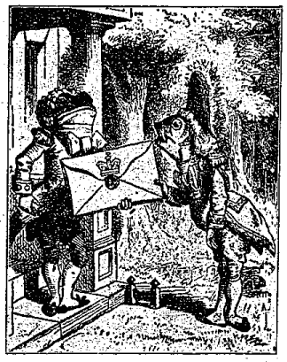
『そんな
箇所を
敲く
必要はない』と
云つて
歩兵は、『
私がお
前と
同じ
戸の
傍に
居るではないか、それに
中で
彼噪ぎをして
居るのに、
何が
聞えるものか』
確かに
中では
恐ろしい
大噪ぎをして
居ました――
絶えず
吼えたり、
嚏をしたり、それから
時々悽じい
音がしたり、
宛で
皿や
鍋が
粉々［＃ルビの「なこ／″＼」はママ］に
打碎かれるやうに。
『
萬望、そんなら』と
云つて
愛ちやんは、『
何うすれば
中へ
這入れるの？』
『
敲く
以上は
何か
意味が
無くてはならない』と
云つて
歩兵は、
愛ちやんに
關はず
續けました、『
若し
吾々二人の
間に
戸があつたとしたら。
譬へばお
前が
中に
居て
敲いたとする、さうすれば
私はお
前を
外へ
出してやると
云ふものだらう、ね』
斯う
話してる
間も
彼は
絶えず
空を
仰視て
居るので、
愛ちやんは
眞個に
無作法な
者もあればあるものだと
思ひました。『けど
屹度然うしないやうには
出來ないんだわ』と
愛ちやんは
獨語を
云つて、『だッて
彼の
眼が
彼に
頭の
天邊についてるんですもの。でも、
兎に
角私の
質問には
答へて
呉れてよ。――
何うしたら
中へ
這入れて？』と
再び
聲高に
云ひました。
『
私は
只此處に
坐つて
居れば
可いンだ、
明日まで――』と
歩兵が
云ひました。
此時家の
戸が
開いて、
大きな
皿が
歩兵の
頭の
上を
眞直に、それから
鼻の
尖を
掠つて、
背後にあつた一
本の
木に
當つて
粉々に
破れました。
『
其又明日も、
大抵』と
歩兵が
同じ
調子で
續けました、
恰も
全く
今何事もなかつたかの
如くに。
『
何うしたら
中へ
這入れて？』と
以前よりも一
層大きな
聲で
再び
愛ちやんが
訊ねました。
『お
前、
何うしても
這入りたいのか？』と
云つて
歩兵は、『それが
第一の
難題サ』
それは
全く
其れに
違ひなかつたが、
只愛ちやんは
然う
云はれたのが
口惜しくて
堪らず、『まァ、
怖ろしいこと、
澤山動物が
喧嘩してるンですもの。
其所へ
行く
者は
狂人だわ！』と
呟きました。
歩兵は
得たり
賢しと、『
私は
何時迄も
何時迄も、
毎日々々此處に
坐つて
居れば
可いンだ』と
繰返しました。
『そんなら、
私は
何うするの？』と
愛ちやんが
云ひました。
『どうともお
前の
勝手サ』
云つて
歩兵は
口笛を
吹き
初めました。
『それぢや、
話しにならないわ』と
愛ちやんは
自棄になつて、『
何て、
愚物なんだらう！』と
云ひながら、
戸を
開けた
中へ
這入りました。
這入ると
眞直に
大きな
厨房へ
行きました。
厨房は
隅から
隅まで
烟で一ぱいでした、
公爵夫人は
中央の三
脚几に
凭つて
坊ッちやんに
乳を
飮まして
居ました、それから
料理人は
圍爐裡の
彼方で、
肉汁でも一ぱい
入つてゐさうな
大鍋を
掻き
廻して
居ました。
『まァ、
澤山胡椒が
入つてること、
肉汁の
中に！』
愛ちやんは
斯う
云ひながら
大變嚏をしました。
四邊は
其香ひで
大變でした。
公爵夫人でさへも、
坊ッちやんと
殆んど
交る／″＼
嚏をして、
噎せる
苦しさに
互に
頻切なしに
泣いたり
喚いたりして
居ました。
厨房に
居るもので
嚏をしないのは
只料理人と、それから
竈の
上に
坐つて、
耳から
耳まで
剖けた
大きな
口を
開いて、
齒を
露出して
居た一
疋の
大猫ばかりでした。
『
後生ですから
話して
下さい』と
些や
改つて
愛ちやんが
云ひました、
然うした
素振で
話しかけても
可いか
何うか
全く
解らなかつたので、『
何故その
猫は
其に
齒を
露出してゐるのですか？』
『それは
朝鮮猫です』と
云つて
公爵夫人は、『コレ、
豚！』
夫人が
急に
大聲で
斯う
云つたので、
愛ちやんは
喫驚して
跳び
上りました。
が
直きにそれは
坊ちやんに
云つたので、
自分に
云はれたのではないと
知つて、
元氣づき
又云ひ
出しました、
『
私は
今迄、
朝鮮猫が
始終齒を
露出して
居るなんて
事を
些とも
知りませんでした、
眞個に
知らずに
居ましたわ、
猫が
齒を
露出すなんて
事を』
『どの
猫でも
皆な
然うです』と
公爵夫人は
云つて
又、『
大抵のが
爲ます』
『
私は
些とも
知りませんでした』と
丁寧に
云つて、
愛ちやんは
談話の
乘勢んで
來たのを
大層喜びました。
『お
前は
薩張未だ
何も
知らないね』と
云つて
公爵夫人は、『それは
眞個の、
事なんです』
愛ちやんは
念を
押すやうに
云はれたのを
面白からず
思つて、
何か
他の
話題を
始めやうとして、
彼れか
此れかと
考へて
居ました。
愛ちやんが
此事を
一つ
話さうと
定める
中に、
料理人は
圍爐裏から
肉汁の
鍋を
取り
外して、
手當り
次第に
何も
彼も
投げ
始めました、
公爵夫人に
達く
程でしたから
無論坊ちやんにも
當りました。
火箸が
眞ッ
先に
飛んで
來て、それから
續いて
肉汁鍋や、
皿や
小鉢の
雨が
降つて
來ました。
公爵夫人は、
其等が
我が
身を
打つをも
平氣で
居りました。
坊ッちやんは
最早オイ／＼
泣いてばかりゐて、
何にも
云はないので、
怪我をしたのかしないのか一
向譯が
解りませんでした。
『オヤ、
何うしてたの、
氣をおつけなね！』と
叫びながら
愛ちやんは
怖れ
戰慄いて
跳ね
廻りました。『オヤ、
其處に
彼れの
大事な
鼻が
歩いて
行つてよ』
通常ならぬ
大きな
肉汁鍋が
其の
側に
飛んで
來て、
正にそれを
取つて
去つて
了つたのです。
『
若し、
人各々その
仕事に
專念なる
時は』と
公爵夫人は
咳嗄れた
銅鑼聲で
云つて、『
世界は
常よりも
迅かに
回轉します』
『
何方にしても
利益はないでせう』と
愛ちやんが
云ひました、
自分の
知慧嚢の
幾分を
示す
機會に
到つたのを
大變喜ばしく
思つて、『まァ、
考へても
御覽なさい、
夜晝爲るなんて
何んな
仕事でせう！
貴方は
地球が
其地軸を
回轉するに二十四
時間を
要する――』
『ナニ、
挫くと
云ふのか』
公爵夫人は
愛ちんや
［＃「愛ちんや」はママ］が、
地軸と
云つたのを
挫くと
聞き
違へて、『
娘の
頭を
捩斷つて
了へ』と
云ひました。
愛ちやんは、
若しや
料理人がそれを
覺りはしないかと、
稍々氣遣はしげにその
方を
眺めました、が、
料理人は
忙はしげに
肉汁を
掻き
廻して
居て、それを
聞いて
居ないやうに
見えたので、
愛ちやんは
再び
思ひ
切つて
云ひ
續けました、『二十四
時間だつたわ、
確か、ハテ、それとも、十二
時間だつたかしら？
私は――』
『
五月蠅ね』と
云つて
公爵夫人は、『そんな
事に
關つては
居られない！』
乃で
夫人は
再び
其子供に
乳を
飮ませ
始めました、一
種の
子守歌を
唱ひながら、一
ト節終へるとは
［＃「終へるとは」はママ］其子を
搖り
上げて、
『子供の時分にや嚴しく仕込め、
嚏をしたらば背中を敲け、
憂き目を見るのも心がら、
苦しい事には耐へ忍べ』
合唱
（其所で料理人と赤子が一緒に）、――
『良い子だ！良い子だ！良い子だよ！』
公爵夫人は
其第二
節を
唱ふ
間も、
絶えず
赤子を
甚く
搖り
上げたり
搖り
下したりしたものですから、
可哀相に
小さなのが
泣き
叫ぶので、
愛ちやんは
殆んど
其の
一語々々を
聽き
取ることが
出來ませんでした、――
『それ
故、
嚴しく
云ふたぢやないか、
嚏すれや
背中を
打ちますよ、
何うして
其に
好きなんだらう、
いつでも／＼
胡椒ばかり！』
合唱
『
良い
子だ！
良い
子だ！
良い
子だよ！』
『さァ！お
前少しあやして
御覽、
好きなら！』
公爵夫人は
赤子を
投げ
出しながら
愛ちやんに、『
私はこれから
行つて、
女王樣と
毬投げをする
仕度をしなければなりません』
云つて
急いで、
部屋の
外へ
出て
行きました。
料理人は
夫人が
出て
行つた
時に、
其後から
鍋を
投げつけました、それでも
好い
鹽梅に
當りませんでした。
愛ちやんは
不器用な
手つきで
赤子を
取りました、それは
妙な
格好をした
小さな
動物で、
其れが
付いてるまゝに
其腕や
脚を
皆な
外へ
出すと、『
恰度海盤車のやうだ』と
愛ちやんは
思ひました。
此哀れな
小さな
物は、
愛ちやんが
捕へた
時に
蒸氣機關のやうな
恐ろしい
鼻息をしました、それからわれと
我が
體を二つに
折り
重ねたり、
又眞直に
伸ばしたりなどしたものですから、
最初辛と一二
分間それを
抱いて
居たのも、
却々容易なことではありませんでした。
好い
工合にそれを
抱く
方法を
考へつくや
否や、（それを
瘤のやうに
丸めて
了つて、それから
其れが
解けないやうに、
其右の
耳と
左足とを
緊乎と
持つて）
愛ちやんはそれを
廣場へ
持つて
行きました。『
若し
私が
此子を一
緒に
伴れて
行かなかつたならば』と
思ふや
愛ちやんは、『
皆なが一
日二
日で
其れを
殺して
了ふに
違ひない、それとも
打棄放しにして
置いても
大丈夫かしら？』
愛ちやんが
尻上りに
斯う
云ひますと、
其小さな
物が
唸り
出しました（
今度は
嚏をせずに）。『
唸つちや
可厭よ、
唸つて
居たつて
何だか
解りやしなくッてよ』と
愛ちやんが
云ひました。
赤子が
復た
唸つたので、
何うかしたのではないかと、
愛ちやんは
氣遣はしげに
其顏を
覘き
込みました。
紛ふ
方なく
其處には、
普通の
鼻よりも
獅子ッ
鼻に
酷似の、
甚くそッくり
反つた
鼻がありました、
又其眼も
赤子にしては
非常に
小さすぎました、
全く
愛ちやんは、
其容貌を
見るのも
可厭になつて
了ひました。『でも、
屹度歔欷してるのだ』と
思つたもんですから、
若しや
涙が
出ては
居ないかと、
再び
其兩眼を
見ました。
ところが、一
滴の
涙もありませんでした。『
若しもお
前が
豚になつて
了うならば、ねえ』と
愛ちやんは
眞面目に
云つて、『さうすれば
世話がなくて
可いけれど、ねえ！』
憐れな
小さな
物が
再び
歔欷しました（
否、
唸りましたが、
何と
云つたのだか
解りませんでした）、
乃で
兩方とも
暫くの
間默つてゐました。
愛ちやんは
熟と
考へ
初めました、『さて、
私がそれを
家へ
伴れて
行つて
何うしやう？』やがて
又甚く
唸つたので、
愛ちやんは
驚いて
其顏に
見入りました。
今度こそは
何と
云つても、
寸分豚に
相違ありませんでしたから、
愛ちやんも
最う
其れを
伴れて
行くのは
全く
莫迦氣たことだと
思ひました。
乃で、
愛ちやんは
其小さな
動物を
下へ
置き、
屹度それが
徐かに
森の
中へ
逃げ
込むだらうと
思つて
見てゐました。『
若しそれが
大きくなつたら』と
獨語を
云つて、『
隨分醜い
子供になるでせう、けど、
何方かと
云へば
大人しい
豚よ』
云つて
愛ちやんは、
豚にでもなりさうな、
自分の
知れる
限りの
他の
子供等の
身の
上をよく／＼
考へながら、『
若し
誰かゞ、
巧く
彼等を
變へる
方法を
知つて
居たならば――』と
我れとわれに
云つて、
恰も
其時朝鮮猫が、二三
尺距つた
樹の
枝の
上に
坐つて
居るのを
見て、
少からず
驚かされました。
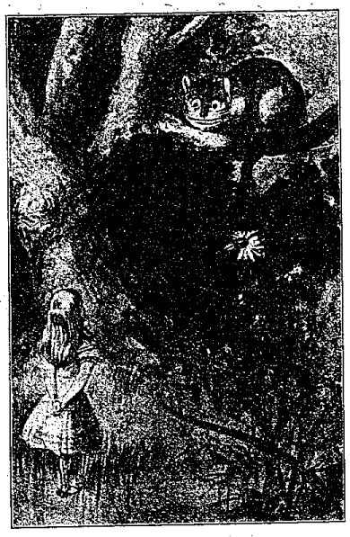
猫は愛ちやんを見て、唯その齒並を見せたばかり
猫は
愛ちやんを
見て、
唯その
齒並を
見せたばかりでした。
優しさうだと
愛ちやんは
思ひました、
矢張其れが
大層長い
爪と
澤山の
齒とを
持つてゐたので、
鄭重にしなければならないとも
考へました。
『
猫兒や』
猫の
氣に入るか
何うかは
解りませんでしたが、
兎に
角愛ちやんは
些や
恐る／＼
斯う
呼びかけました。けれども
猫は、
只以前よりも
稍々廣く
齒を
出して
見せたばかりでした。『まァ、
大層悦んでること』
愛ちやんは
然う
思つて
猶ほも
言ひ
續けました。『
教へて
頂戴な、ね、
私は
此處から
何方へ
行けば
可いの？』
『それは
云ふまでもなく、お
前の
往く
所に
依るさ』と
猫が
云ひました。
『
所處へでも
關やしないわ――』と
愛ちやんが
云ひました。
『それなら、
何方の
道へ
行つたつて
關やしない』と
猫が
云ひました。
『――
私が
何處かへ
出られるまで』と
愛ちやんは
説明のやうに
附加へました。
『あァ、それでも
可いさ、
只長く
歩きたいのなら』と
猫が
云ひました。
愛ちやんもこれには
何とも
抗辯し
兼て、
今度は
他の
事を
聞き
初めました。
『
此邊にはどんな
種類の
人間が
住んでるの？』
『
其邊には』と
云ひながら
猫は、
其右の
前足を
振つて
弧を
描き、『
帽子屋が
住んで
居る、それから
其方の
方には』と
他の
前足を
振つて、『三
月兎が
住んでゐる。
何方でもお
前の
好きな
方を
訪ねて
御覽、
何方も
皆な
狂人だから』
『でも、
私、
狂人の
中へなぞ
行きたかなくッてよ』と
愛ちやんが
云ひました。
『ナニ、そんな
事を
云つても
駄目だ』と
猫が
云ひました、『
自分達だつて
皆な
斯うして
居たつて
狂人なんだ。
私も
狂人。お
前も
狂人』
『
何うして
私が
狂人だつてことが
解つて？』
と
愛ちやんが
云ひました。
『だつて、
然うぢやないか』と
猫が
云つて、『さもなければ、お
前は
此所へ
來なくても
可いぢやないか』
愛ちやんは
全く、
何と
答へのせんやうもありませんでしたが、それでも
猶ほ、『それから、お
前の
狂人だと
云ふことは
何うして
解つて？』と
云ひつぎました。
『さうねえ』と
云つて
猫は、『
犬は
狂人でない。さう
云つたら
嬉しいかい？』
『
然うよ』と
愛ちやんが
云ひました。
『それならねえ』と
猫は
續けて
云つて、『お
前は、
犬が
怒る
時には
唸り、
喜ぶ
時には
其尾を
振るのを
見たらう。ところが
今、
私は
喜ぶ
時に
唸り、
怒る
時に
尾を
振る。だから
私は
狂人さ』
『それは
咽喉をゴロ／＼させるんだわ、
唸るんぢやなくつてよ』と
愛ちやんが
云ひました。
『
何とでも
好きなやうに
云ふさ』と
猫は
云つて、『お
前は
今日、
女王樣と
毬投げをしないの？』
『
私、それが
大好き』と
愛ちやんが
云つて、『だけど、
私は
未だ
招待されないのよ』
『
又其處で
逢はうね』と
云つて
猫は
姿を
掻き
消しました。
愛ちやんは
此れを
左程に
驚きませんでした、
種々の
不思議な
出來事には
全然慣れて
了つて。それが
居た
所を
見て
居ますと、
突然復た
其れが
現はれました。
『
時に、
赤子は
何うしたかしら？』と
猫が
云つて、『
私は
聞くのを
殆んど
忘れて
居ました』
『
豚になつてよ』と
愛ちやんは
徐かに
云ひました、
恰も
然うなるのが
當然であるかのやうに。
『
大方然うだらうと
思つた』と
云つて
猫は
再び
消え
失せました。
愛ちやんは、
軈て
又それが
現はれるだらうと
豫期して、
暫くの
間待つてゐました、が、それは
到頭姿を
見せませんでした、
良久して
愛ちやんは、三
月兎が
住んでると
云はれた
方へ
歩いて
行きました。『
私は
甞て
帽子屋を
見たことがある』と
獨語を
云つて、『三
月兎とは
大變面白いのね、
大方これが五
月なら
狂人になつて
暴れ
廻るだらう――
假令三
月程ではなくとも』
愛ちやんは
斯う
云つて
上を
見ると、
復た
其猫が
木の
枝の
上に
坐つてゐました。
『お
前は
豚と
云つたのか、それとも
贅肉と
云つたのか？』と
猫が
云ひました。
『
豚ッて
云つたのよ』と
愛ちやんは
答へて、
私はお
前が
何時までも
然うして
出て
居ないで、
急に
失くなつて
呉れゝば
可いと
思つてるのよ、
眞個に
眩暈がするわ』
『
可し』と
云ひながら、
猫は
今度徐々消え
失せました、
尾の
尖端から
引ツ
込み
初めて、
體が
全然見えなくなつて
了つても、一
番終ひに
猶ほ
暫くの
間、
其露出した
齒ばかりは
殘つて
居ました。
『でも！
私は
度々齒を
出して
居ない
猫を
見てよ』と
愛ちやんは
云はうとしたものゝ、『
齒を
露出してるものは
猫の
他に！
私が
是迄に
見たものゝ
中で一
番奇妙なのは』
愛ちやんは
幾らも
歩かない
中に、三
月兎の
家の
見える
所へ
來ました、それは
耳のやうな
格好をした
煙突もあれば、
毛皮葺きの
屋根まである
整然した
家に
違ひありませんでした。それは
莫迦げて
大きな
造りでした、
愛ちやんは
又左手に
持つて
居た
菌の一
ト片を
舐めて、
殆んど二
尺の
高さに
達した
迄は、
きまりが
惡くてその
側へ
思ひ
切つて
近寄れませんでした、二
尺になつた
時ですらも
愛ちやんは、
些や
臆しながら
其方へ
歩いて
行きました、『
屹度それは
何うしても
暴れる
狂人に
違ひない！
私はそれよりも
寧ろ
帽子屋を
見に
行きたいわ！』と
云ひながら。
［＃改ページ］
其家の
前なる一
本の
木の
下には
洋卓が一
脚置いてあつて、三
月兎と
帽子屋とが
其處で
茶を
飮んで
居ると、一
疋の
福鼠が
其間へ
來て
坐つて
居ましたが、
軈て
熟く
眠つて
了つたので、
他の
者らは
好い
幸ひに
其れを
坐布團にして
其上に
彼等の
肘を
載せ、
其頭を
越えて
向ひ
合せになつて
話してゐました。『
福鼠はさぞ
心地が
惡いだらう』と
愛ちやんは
思ひました、『
只眠つてるばかりで
氣が
付かないんだわ』
洋卓は
大きなものでした、が、
彼等は三つとも
皆な
其一
ト隅に一
緒に
群集つて
居ました。『
空いてないよ！
空いてないよ！』と
彼等は
愛ちやんが
來るのを
見た
時に
叫びました、『
澤山空いてる！』と
愛ちやんは
怒つて
云ひながら、
洋卓の
片端にあつた
大きな
肘懸椅子に
腰を
卸しました。
『
酒を
持つて
來い』と三
月兎が
催促がましい
口調で
云ひました。
愛ちやんは
洋卓の
周圍を
殘らず
見廻しましたが、
其上には
茶の
他に
何もありませんでした。『
酒な
ンて
無くッてよ』と
愛ちやんが
注意しました。
『
其處には
無いサ』と三
月兎が
云ひました。
『それを
持つて
來いな
ンて
不作法な』と
愛ちやんが
腹立しげに
云ひました。
『
招待されもしないで
坐り
込むな
ンて
不作法な』と三
月兎が
口返答しました。
『お
前の
洋卓だとは
知らなかつたのよ』と
愛ちやんは
云つて、『それは三
人ばかりでなく、もつと
多勢のために
置かれてあるんだわ』
『お
前の
髮は
刈らなくッては』
帽子屋は
暫くの
間さも
珍らしさうに
愛ちやんを
眺めて
居ましたが、
軈て
先づ
斯う
云ひ
出しました。
『
禮儀正しくおしなさい』と
愛ちやんは
些や
嚴格に
云つて、『
何です、
他人に
對して
亂暴な』
帽子屋はこれを
聞いて
著しく
其の
眼を

りました、が、
云つたことは、『
何故嘴太鴉が
手習机に
似てるか？』と、
只これだけでした。
『さうね、
今、五六
本扇が
欲しい』と
愛ちやんは
思ひました。『
私は
皆なで
謎かけして
遊ぶのが
大好き。――
私にだつて
其れが
解けると
思ふわ』と
續いて
聲高に
云ひました。
『ナニ、
其れがお
前に
答へられるッて』と三
月兎が
云ひました。
『さうですとも』と
愛ちやん。
『そんなら、
何と
云ふことだか
當てゝ
御覽』と三
月兎が
續けました。
『
當てるわ』と
愛ちやんは
言下に
答へて、『
屹度――
屹度私の
云ふ
通りに
違ひないわ――さうでせう、ねえ』
『ナニ、さうぢやない！』と
帽子屋が
云ひました。『
何故ッて、
斯うも
云へるぢやないか、「
私が
食ふところの
物を
見る」とも、
又、「
私が
見るところの
物を
食ふ」とも！』
『
斯うも
云へるさ』と
云つて三
月兎が
附加へました、『「
私が
買ふところの
物を
好む」と
云つても、「
私が
好むところの
物を
買ふ」と
云つても
同じ
事だ！』
『
斯うも
云へるさ』と
福鼠が
附言しました、
宛で
寢言でも
云ふやうに、『「
私は
眠つて
居る
間も
呼吸をしてる」と
云つても、「
私は
呼吸をしてる
間も
眠つてゐる」と
云つても
同じことだ！』
『それはお
前と
同じことだ』と
帽子屋が
云ひました、これで
談話はぱつたり
止んで、
其の
連中は
霎時默つて
坐つて
居ました、
其間愛ちやんは
嘴太鴉と、それから
多くも
無かつた
手習机について
想ひ
起したことの
數々を、
繰返し
繰返し
考へました。
帽子屋が
先づ
其の
沈默を
破りました。『
何日だね？』と
云つて
愛ちやんの
方を
振向き、
衣嚢から
時計を
取り
出し、
不安さうにそれを
眺めて、
時々振つては
耳の
所へそれを
持つて
行きました。
愛ちやんは
暫く
考へてから
云ひました、『四
日』
『二
日違つてる！と
帽子屋が
長太息を
吐きました。『
牛酪は
役に
立たないとお
前に
云ふて
置いたぢやないか！』と
言ひたして、
腹立しげに三
月兎の
方を
見ました。
『それは
上等の
牛酪でした』と三
月兎は
優しやかに
答へました。
『さうか、だけど
屹度、
屑が
同じ
位入つて
居たに
違ひない』
帽子屋は
不平たら／″＼で、『
麺麭庖丁で
其中へ
押し
込んだナ』
三
月兎は
時計を
取つて
物思はしげにそれを
眺めました、それから
彼はそれを
茶碗の
中へ
浸して
又それを
見てゐました、
併し
彼は
自分が
最初云つた『それは
上等の
牛酪でした』と
云ふ
言葉より
他に
何も、もつと
好い
言ふことを
考へつきませんでした。
愛ちやんは、さも
不思議さうに
自分の
肩を
左顧右盻してゐました。『
可笑しな
時計！』
斯う
云つて
又、『
日が
解つて、それで
時が
解らないなンて！』
『
何故だらう』と
帽子屋は
呟いて、『お
前の
時計で
何年だかゞ
解るかい？』
『
無論解らないわ』と
愛ちやんは
極めて
速かに
答へて、『けど、それは
全くそんなに
長い
間同じ
年でゐるからだわ』
『それでは
私と
同じことだ』と
帽子屋が
云ひました。
愛ちやんは
宛然狐に
魅まれたやうな
氣がしました。
帽子屋の
云つた
事は
何が
何だか
譯が
分りませんでした、
併しそれはそれでも
確かに
英語でした。『
私には
些とも
解りませんの』と
愛ちやんは
出來るだけ
丁寧に
云ひました。
『
福鼠が
又睡つてゐる』と
云ひさま、
帽子屋は
其の
鼻の
上へ
少し
熱いお
茶を
注ぎました。
福鼠は
耐へ
切れずに
其の
頭を
振つて、
眼も
開かないで
云ふことには、『
勿論、
今私が
云はうと
思つて
居た
所だ』
『お
前にまァ
謎が
解つたのか？』
帽子屋は
再び
愛ちやんの
方へ
振向いて
云ひました。
『
否え、
私は
止したの』と
愛ちやんは
答へて、『
其の
答は
何？』
『
些とも
解らない』と
帽子屋が
云ひました。
『
私にもサ』と三
月兎。
愛ちやんは
物憂さうに
長太息を
吐きました。『
此時間で、もつと
何か
好いことをした
方が
可いわ、
解けもしない
謎をかけて
空に
浪費すよりは』と
愛ちやんが
云ひました。
『
私のやうによくお
前が
時間を
知つてるなら、
時間浪費に
話しなぞしないが
可い。それは
彼人さ』と
帽子屋が
云ひました。
『
彼人ッて
云つたつて、
誰のことだか
分りやしないわ』と
愛ちやん。
『
無論お
前には
解らないサ！』
帽子屋は
輕蔑するものゝ
如く、
其の
頭を
突き
出して
云ひました。『
宜いかい、
决して
最う
時間の
事を
口にしないが
可い！』
『
多分最う』と
愛ちやんは
恐る／＼
答へました、『だけど、
私が
音樂を
習ふ
時には、
時を
打たなくてはならないわ』
『それで！
其理由は』と
帽子屋が
云ひました。『
打ち
續けやしないだらう。
次に
打つまでには
可なり
間がある、
其の
中に
人は
思ひ／＼の
仕事をする。
例へば、それが
朝の九
時であつたと
假定して、
丁度其時に
稽古を
初める、
時々何時になつたかと
思つて
見る、
時計の
針は
廻つて
行く！一
時半に
晝食！』
（『
然うしたものかねえ』と三
月兎が
くやうに
獨語を
云ひました）
『それは
眞個に
結構な
事だわ』と
愛ちやんは
分別ありげに
云つて、『けど、それなら――それでもお
腹は
空かないかしら』
『
空かないだらう、
多分』と
帽子屋が
云つて、『お
前の
思ふ
通り一
時半まで
續けられるさ』
『お
前も
然うするの？』と
愛ちやんが
訊ねました。
帽子屋は
痛ましげに
其頭を
振り、『
私ではない！』と
答へて、『
自分等は
去る三
月喧嘩をした――
丁度彼れが
狂人になる
以前さ――』（三
月兎の
方を
茶匙で
指して）――『それは
心臟の
女王に
依つて
開かれた
大會議があつて、
私が
斯ういふ
歌を
唄つた
時でした
「燦然、々々、小さな蝙蝠！
何うしてそんなに光るのか！」
お
前も
此歌を
知つてるだらう？』
『
何だか
聞いたことがあるやうだわ』と
愛ちやんが
云ひました。
『
其先は、それ』と
帽子屋が
續けて、『こんな
風だ、――
「世界の上に飛んでゐる
空にふか／＼茶盆のやうに。
きら／＼、きら／＼――」
乃で
福鼠が
身振ひして、
寢たまゝで
唄ひ
初めました『きら／＼、きら／＼、きら／＼、きら／＼、――』
餘り
長く
續けて
居るので、
皆ながそれを
抑えつけて
止めさせました。
『さァ、
辛と
第一の
節が
終へた』と
帽子屋が
云つて、『
其時に
女王は
跳び
上り、「
時を
打殺してるのは
彼れだ！
其頭を
刎ねて
了へ！」と
叫びました』
『
何と
云ふ
野蠻な
事でせう！』と
愛ちやんが
叫びました。
『それから
後は』と
帽子屋は
悲しげな
調子で、『
私の
云ふことを
聞かなくなつて
了つて！まァ、
何時でも六
時のところに
止つてゐる』
愛ちやんは、
礑と
思ひ
當ることあるものゝ
如く、『それで
此處に
此に
澤山茶器があるのねえ？』と
訊ねました。
『まァ、そんなものサ』と
帽子屋は
長太息して、『それは
何時もお
茶時分だ、それで、
間に
其器を
洗ふ
時間もない』
『それならお
前は
始終動き
廻つてるの？』と
愛ちやんが
云ひました。
『
全くそうだ』と
帽子屋は
云つて、『
其の
器が
始終使はれてるやうに』
『それは
兎に
角、
終ひから
復た
始めに
還るのには
何うしたら
可いの？』と
愛ちやんが
突飛なことを
訊ねました。
『
然うするには
話題を
變へるサ』と
欠をしながら三
月兎が
云つて、『もう、
此事には
厭きて
來た。
其の
若夫人に
何か
一つ
話して
貰はうぢやないか』
『お
氣の
毒だが
一つも
知らないの』と
云つて
愛ちやんは、
些や
其の
發議に
對して
警戒しました。
『そんなら
福鼠だ！』と
彼等二人は
叫んで、『
起きろ、
福鼠！』と
云ひさま、
同時に
兩方からそれを
抓りました。
福鼠は
徐かに
其の
眼を
見開き、『
眠つちや
居ない』と
咳嗄れた
脾弱い
聲で、
『お
前達の
饒舌つて
居たことは
皆な
知つてる』
『
一つ
話せ！』と三
月兎。
『さう、
萬望！』と
愛ちやんが
頼みました。
『さァ、
早く』と
帽子屋は
促して、『それでないと、
又お
前が
眠つて
了ふからさ』
『
昔々或る
所に三
人の
小さな
姉妹がありました』と
福鼠は
大急ぎで
初めて、『
其名を、
榮ちやん、
倫ちやん、
貞ちやんと
云つて、三
人とも
皆な
井戸の
底に
住んでゐました――』
『
何を
食べて
生きてたの？』と
常に
飮食の
問題に
多大の
興味を
有つて
居た
所の
愛ちやんが
訊ねました。
『
糖蜜を
舐めて』と
福鼠が
暫く
考へてから
云ひました。
『そんな
事が
出來るも
ンですか』と
云つて
愛ちやんは
優容に、『では、
皆な
病氣になつたでせう』
『さう／＼、
大變な
病氣』と
福鼠が
云ひました。
愛ちやんは、こんな
怖ろしい
事をしても
生きて
居られるものだらうかと、
少しく
自分の
身について
想像を
廻らしましたが、
益々譯が
分らなくなるばかりでした、ところで、『だけど
何故、
井戸の
底に
住んでゐたんでせう？』
『もつとお
茶を
呉れ』と三
月兎が
切に
愛ちやんに
願ひました。
『もう
些とも
無いわ』と
愛ちやんは
焦心ッたさうに
答へて、『そんなに
私、
進上られなくッてよ』
『ナニ、
少とばかりは
進上られないッて』と
帽子屋が
云つて、『
何にも
無いのを
呉れるのは
難しいけど、
澤山有るのを
呉れるのは
容易なことだ』
『
大きなお
世話よ』と
愛ちやんが
云ひました。
『
私を
誰だと
思つてるか？』と
帽子屋が
威丈高に
問ひました。
愛ちやんは
云ふべき
言葉もなく、
幾らかのお
茶と
麺麭と
牛酪とを
出して、
福鼠の
方に
振向き、『
何故皆な
井戸の
底に
住んでゐたの？』と
問ひ
返しました。
福鼠は
又それについて
暫く
考へて
居ましたが
軈て、『それは
糖蜜井戸でした』
『そんなものは
無くッてよ！』と
愛ちやんは
頗る
腹立しげに
云ひました、
帽子屋と三
月兎とは、『
叱ッ！
叱ッ！』と
續けさまに
叫びました。
福鼠は
自棄になつて、『そんな
失敬な
事をするなら
談話を
止めて
了うから
可い』
『もう
爲ないから、
萬望話して
頂戴な』と
愛ちやんは
極く
謙遜して、『二
度と
喙を
容れないわ。
屹度そんな
井戸が
一つ
位あつてよ』
『
然うさ、一つ
位！』と
福鼠は
焦心ッたさうに
云つて、
又話し
續けました、『
其故此等三
人の
姉妹は――
皆なで
描くことを
學んで
居ました――』
『
何を
描いて
居たの？』と
約束したことを
全く
忘れて、
愛ちやんが
云ひました。
『
糖蜜を』
今度は
些とも
考へずに
福鼠が
云ひました。
『
清潔な
洋盃を
呉れ』と
帽子屋が
喙を
容れて、『
皆なで
一つ
場所を
取交へやうぢやないか』
彼は
斯う
云つて
動き
出しました、
福鼠が
其後に
隨いて
行きました、三
月兎は
福鼠の
居た
場所へ
移りました、
愛ちやんは
厭々ながら三
月兎の
居た
所へ
行きました。
帽子屋が
唯ッた
一人場所を
取り
交へた
爲に一
番好いことをしました、
愛ちやんは
以前よりも
餘ッ
程割が
惡くなりました、だつて、三
月兎が
丁度其時自分の
皿へ
牛乳壺を
有りッたけ
空けて
了つたのですもの。
愛ちやんは
再び
福鼠に
腹を
立たせまいと、
極めて
愼ましやかに、『
私には
解りませんわ。
何所から
皆な
糖蜜を
汲んで
來たのでせう？』
『お
前は
水井戸から
水を
汲むだらう』と
帽子屋が
云つて、『それで
解るぢやないか、
糖蜜井戸からは
糖蜜が
汲めるサ――え、さうぢやないか、
莫迦な？』
未だ
其言葉の
終らぬ
中に
愛ちやんは、『だけど、
皆なが
井戸の
中に
居ては』と
福鼠に
云ひました。
『
無論皆なが
居たさ』と
云つて
福鼠は、『――
井戸の
中に』
答へられたが
愛ちやんには
愈々合點がゆかず、
福鼠の
饒舌るがまゝに
委せて、
少時の
間敢て
喙を
容れやうともしませんでした。
『
皆なで
描くことを
習つて
居ました』と
福鼠は
言ひ
續けて、
欠をしたり、その
眼を
擦つたり、さぞ
眠さうに、『
皆なで
種々なものを
描いて
居ました――ネの
字のつくものは
何でも――』
『
何故ネの
字のつくものばかり？』と
愛ちやんが
云ひました。
『
何故、それでないのぢや
不可ないか？』と三
月兎が
云ひました。
愛ちやんは
默つて
居ました。
福鼠は
又その
眼を
閉ぢ、そろ／＼
坐睡りを
初めました、が、
帽子屋に
抓られて
喫驚して
跳び
上り、『――ネの
字がつくんだ、
例へば、
鼠罠とか、
舟とか、
金とか、
種とか――
擧げ
來れば
山程ある――お
前は
其物が
畫に
描かれたのを
見たことがあるか？』
『まア、
私に
訊くの』と
愛ちやんはさも
迷惑さうに
云つて、『
私知らなくつてよ――』
『
話せないねえ』と
帽子屋が
云ひました。
輕蔑せられて
愛ちやんは
堪へ
切れず、
忌々しさうに
起ち
上つて、さつさと
歩き
出しました、
福鼠は
眠つてゐるし、
誰れ
一人として
愛ちやんの
出て
行くのを
氣にするものはありませんでした、
皆なが
呼び
戻すだらうと
思つて、
愛ちやんが
後を
振り
返つて
見ると、
驚［＃ルビの「おとろ」はママ］くまいことか、
皆なで
急須の
中へ
福鼠を
押し
込まうとして
居ました。
『
何でも
可い、もう二
度と
其處へは
行かないから！』
云ひながら
愛ちやんは、
森の
中を
徒歩て
行きました。『
莫迦げた
茶話會よ、
初めて
見たわ！』
云ひ
終るや
愛ちやんは、一
本の
木に
戸があつて、
其中へ
眞直に
這入れるのに
氣がつきました。
愛ちやんは『これは
奇妙だ！』と
思ひました。『
何うして
今日は
此に
奇妙な
事ばかりなんでせう。
直に
中へ
行かれさうだわ』
云つて
愛ちやんは
這ひ
込みました。
再び
愛ちやんは
細長い
大廣間の
中の、あの
小さな
硝子洋卓の
眞近へ
出ました。『まア、
今度は
巧くやらう』と
獨語と
［＃「獨語と」はママ］云ひながら、
其小さな
黄金の
鍵を
取つて、
花園に
通ずる
戸を
打ち
開きました。それから
愛ちやんは
菌を
甜［＃「甜」はママ］めて（
衣嚢の
中に
有つたもう一
ト片の）
殆んど一
尺ばかりの
身長になつて、その
小さな
路を
下つて
行き、
軈て――
愛ちやんは
遂に
赫灼として
目も
綾なる
花壇や、
清冽掬すべき
冷泉のある、
其美しき
花園に
入ることを
得ました。
［＃改ページ］
一
本の
大きな
薔薇の
木が、
殆んど
其花園の
中央に
立つてゐて、
白い
花が
幾つもそれに
咲いてゐましたが、
其處には三
人の
園丁が
居て、
忙はしげにそれを
赤く
彩色してゐました。
愛ちやんは
處［＃ルビの「こ」はママ］れは
奇妙だと
思つて、
近寄つて
凝と
見てゐますと、やがて
其中の
一人が
云ふことには、『
意をお
注けよ、
何だね、
五點！こんなに
私に
顏料を
撥ねかして！』
『そんな
事を
云つたつて
仕方がない』と
拗ねた
調子で
五點が
云ひました。『
七點が
私の
肘を
衝いたんだもの』
云はれて
七點は
空嘯き、『さうだよ、
五點！
何時でも
惡い
事は
他人の
所爲にするさ！』
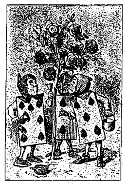
『
然う
怒つたものぢやない！』と
云つて
五點は『
私は
昨日女王樣が、
何うしてもお
前は
首を
刎ねられるやうな
惡い
事をしたと
云はれるのを
聞いた！』
『
何うしてさ？』と
最初話し
出したのが
云ひました。
『お
前の
知つた
事ぢやない！』と
五點。『そんなら
私は
彼れに
話してやらう――
玉葱の
代りに
欝金香の
根を
料理人の
許へ
持つて
行けッて』
七點は
彼れの
刷毛を
投げ
出し、『さア、
何でも
惡い
事は――』
圖らずも
其視線が、
立つて
皆なの
爲ることを
見てゐた
愛ちやんの
視線と
衝突り
合つたので、
急いで
彼はそれを
外らしました、
他の
者は
云ひ
合せたやうに
四邊を
見廻し、それから一
齊に
腰を
低めてお
辭儀をしました。
『
話して
聞かしてお
呉れな』と
愛ちやんは
恐る／＼
云つて、『
何故其に
薔薇の
花を
彩色するの？』
『
五點と
七點とは
何とも
云はないで
二點の
方を
見ました。
二點は
小さな
聲で『
何故ッて、
斯うです、お
孃さん、これは
元來赤い
薔薇の
木であつたんですが
私どもが
過つて
白いのを一つ
雜ぜたのです、それで、
若し
其れが
女王樣のお
目にとまらうものなら、
私共は
一人殘らず
皆な
頭を
刎ねられて
了ひます。それですから、ねえ、お
孃さん、
私共は
女王樣のお
出でになる
以前に、一
生懸命にそれを
塗つて
置くんです、それ――』
此時恰も
花園の
向ふを
氣遣はしげに
眺めて
居た
五點が、『
女王樣が！
女王樣が！』と
叫んだので、三
人の
園丁は
直樣各自に
平伏しました。
續いて
多くの
跫音がしたので、
愛ちやんは
女王樣のお
顏を
拜せんとして
※心［＃「執／れんが」、U+24360、125-1］に
方々を
見廻しました。
最初、十
人の
兵士が
棍棒を
携へて
來ました、
此等は
皆な三
人の
園丁のやうな
恰好をして
居て、
長楕圓形で
平たくて、
隅々からは
其の
手足が
出て
居ました、
次に
來たのは十
人の
朝臣で、
此等は
一人殘らず
數多の
菱形金剛石を
鏤刻めて、
先の
兵士と
同じやうに二
列になつて
歩いて
來ました。
此等の
後から
皇子が
見えました、
丁度十
人在らせられて、
小さな
可愛い
方々が
最も
樂しげに、
手に
手を
取つてお
二人づゝ
跳んでお
出でになりました、
何れも
皆な
心臟で
飾りたてられてゐました。
次に
來たのは
多くの
賓客で、
大抵は
王樣と
女王樣とで、その
中に
愛ちやんは
白兎の
居るのを
看て
取りました、それはさも
忙しさうに、
氣短がに
［＃「氣短がに」はママ］話しながら、
云はれる
事々に
笑ひ
興じて、
愛ちやんには
氣も
止めずに
行き
過ぎました。それから
續いて
心臟の
軍人が、
眞紅の
天鵞絨の
座布團の
上に、
王樣の
冠を
戴せて
持つて
來ました、
此の
壯麗な
行列の
總殿には、
心臟の
王樣と
女王樣とが
在らせられました。
愛ちやんは
自分も
亦、三
人の
園丁のやうに
平伏さなければならないか
何うかは
些と
疑問でしたが、
甞て
行列に
出逢つた
場合、かうした
規則のあることを
聞きませんでした、『
行列なンて一
體何の
必要があるのかしら』と
思ふと
同時に、『
若し
人民どもが
皆な
平伏さなければならない
位なら、
寧そ
行列を
見ない
方が
益ぢやないの？』
其故愛ちやんは
自分の
居た
所に
靜かに
立停つて
待つてゐました。
行列が
愛ちやんと
相對峙する
迄進んで
來た
時に、
彼等は一
齊に
止まつて
愛ちやんを
打眺めました、
女王樣は
嚴肅に、『こは
何者ぞ？』と
心臟の
軍人にまで
申されました。
心臟の
軍人はお
辭儀をしたばかりで、
笑つて
答へませんでした。
『
痴人め！』
女王樣は
焦心ッたさうに
御自身の
頭を
突き
出して
申されました、それから
愛ちやんに
振向いて、『
何と
申す
名ぢや？
子供』
『
私の
名は
愛子です、
陛下よ』
愛ちやんは
頗る
恭々しく
申し
上げました、しかし
愛ちやんは
心の
中では、『
高の
知れた、
彼等は
骨牌の
一組に
過ぎないぢやないか。ナニ
恐れることがあるものか』と
思つて
居ました。
『して
此等は
何者か？』
女王樣は
薔薇の
木の
周りに
平伏してゐた三
人の
園丁どもを
指して
申されました、
何故と
云ふに、
彼等は
俯伏せに
臥てゐるし、その
脊中の
模樣が
一組の
其他のものと
同じことであつて、
女王樣には
何れが、
園丁か、
兵士か、
朝臣か、
又御自分のお
子供衆のお
三方であつたかを、お
判別になることがお
出來になりませんでしたから。
『
如何して
私が
存じて
居りませう？』
云つて
愛ちやんは
自ら
其勇氣に
驚きました。『それは
私の
知つた
事ではありません』
女王樣は
滿面朱をそゝいだやうに
眞赤になつてお
怒りになりました、
暫時の
間野獸の
如く
愛ちやんを
凝視てお
在でになりましたが、
軈て、『
頭を
刎ね
飛ばすぞ！
刎ね――』と
叫ばれました。
『
莫迦なことを！』と
愛ちやんは
大聲で
嚴然と
云ひました。
女王樣は
默つて
了はれました。
王樣は
其お
手を
女王樣の
腕にかけされられ、
恐る／＼
申されました、『
考へても
御覽なさい、え、
高が
一人の
子供ではないか！』
女王樣は
怒氣を
含ませられ、
王樣から
振向いて
軍人に
申されました、『
其奴等を
顛覆せ！』
軍人が
顛覆しました、
極はめて
［＃「極はめて」はママ］注意して、
片脚を
以て。
『
起きよ！』
女王樣が
鋭い
大きな
聲で
申されました。三
人の
園丁等は
直ちに
跳び
起き、
王樣と、
女王樣［＃ルビの「ぢちわうさま」はママ］と、
皇子方と、それから
其他の
者とに、
各々お
辭儀をし
初めました。
『そんな
事は
止め！』と
女王樣は
叫んで、『
眩暈がする』それから
薔薇の
木に
振向いて、『
何をお
前方は
此處でして
居たのか？』
『
何卒お
宥し
下さい、
陛下よ』
二點は
極めて
謙遜した
調子で
云つて
片膝をつき、『
私どもの
爲て
居りましたことは――』
『
宜しい
解つた！』
言つて
女王樣は
少時薔薇の
花を
檢査して
居られました。
『
皆な
頭を
刎ねて
了へ！』やがて
行列が
動き
出しました。三
人の
兵士は
不幸な
園丁等を
刑に
處するために
後に
殘りました。
園丁等は
保護を
願ひに
愛ちやんの
許へ
駈けて
來ました。
『
刎ねられやしない
大丈夫よ！』
云つて
愛ちやんは、
傍にあつた
大きな
植木鉢の
中へ
彼等を
入れました。三
人の
兵士はそれを
見ながら二三
分間彷徨して
居ましたが、やがて
徐かに
他の
者の
後に
隨いて
進んで
行きました。
『
殘らず
頭を
刎ねたか？』と
女王樣が
叫ばれました。
『
殘らず
頭は
御座いません、
陛下のお
望み
通り！』と
兵士は
叫んで
答へました。
『よろしい！』と
女王樣がお
叫びになりました。『
汝、
毬投げを
仕るか？』
兵士等は
默つて
愛ちやんの
方を
見ました、
此の
問は
明かに
愛ちやんに
對してゞした。
『はい！』と
愛［＃ルビの「い」はママ］ちやんが
叫びました。
『お
出で、そんなら！』と
女王樣が
聲高に
申されました。
愛ちやんは
其行列に
加はつたものゝ、これから
何うする
事かと
大層怪訝がつて
居ました。
『それは――それは
好い
日和でした！』
愛ちやんの
傍で
小さな
聲がしました。
愛ちやんは
白兎の
側に
隨いて
歩いて
居たのです、
白兎は
心配さうに
愛ちやんの
顏を
覘き
込みました。
『オヤ！』と
云つて
愛ちやんは、『――
何處に
公爵夫人がお
在でになるの？』
『
叱ッ！
叱ッ！』
小さな
聲で
忙しさうに
兎が
云ひました。
云つて
兎は
氣遣はしげに
自分の
肩を
幾度も
見ました、それから
爪先で
立ち
上り、
愛ちやんの
耳元近く
口を
寄せて、『
愛ちやんが
死刑の
宣告の
下にある』と
云ふことを
きました。
『
何うして？』と
愛ちやん。
『「
何と
可哀相に！』とでもお
前は
云つたのか？』と
兎が
訊きました。
『
否え、
云やしなくッてよ』と
愛ちやんが
云ひました、『
些とも
可哀相だとは
思はないわ。
私は「
何うして？」と
云つたのよ』
『
娘が
女王樣の
耳を
毆つた――』と
兎が
云ひ
初めました。
愛ちやんは
きやッ／＼と
笑ひました。『オイ、
默れ！』と
云つて
兎は
くやうな
調子で、『
女王樣がお
前の
事をお
訊きになつた！お
前は
女王樣が
些や
遲れてお
出でになつたことを
知つてるだらう、それで
女王樣の
仰せらるゝには――』
『もとへ！』と
雷のやうな
聲で
女王樣が
叫ばれました。
人々は
互に
衝突りまはりながら、
四方八方に
駈けめぐりました。
暫くして
皆なが
各々元の
位置につくや、
競技が
始まりました。
愛ちやんは
是迄にこんな
奇妙な
毬投場を
見たことがないと
思ひました。それは
隅から
隅まで
數多の
畦畝になつて
居ました、
其球は
生きた
針鼠、
槌は
生きた
紅鶴で、それから
兵士等は二
列になつて、
緑門を
造る
爲に
手を
擧げ
足を
欹てました。
愛ちやんの
先づ
氣がついた
第一の
困難は、
其の
紅鶴を
取扱ふことでありました。
愛ちやんは
其の
體を
巧く
自分の
腋の
下へ
壓し
込み、
其の
足は
垂れるがまゝになし、
首をば
眞直に
伸し
出させ、
其の
頭を
以て
針鼠を
打たうとしましたが、それが
身を
捻つて、
妙な
容貌をして、
愛ちやんの
顏を
見たので、
愛ちやんは
可笑しさに
堪へ
切れず、
哄笑しました。
軈て
今度は、
愛ちやんが
其の
頭を
下へやり、
再び
始めやうとすると
針鼠が、
自分を
仲間外れにしたと
云つて
大に
怒り、
將に
匍ひ
去らうとする
素振が
見えました。
見渡す
限り、
愛ちやんが
針鼠を
送らうと
思ふ
所には
總て
畦畝があつて、二
列になつた
兵士が
常に
起きて、
毬投場の
他の
部分々々を
歩いてゐました。
愛ちやんは
忽ちそれが
實に
難しい
競技だと
云ふことを
思ひ
定めました。
競技者は
皆な
自分の
番の
來るのを
待たずして
同時に
遊び
戯れ、
絶えず
爭つて、
針鼠を
取らうとして
戰つてゐますと、
軈て
女王樣が
甚くお
腹立ちになり、
地鞴踏みながら、『
彼れの
頭を
刎ねよ！』さもなければ『
其娘の
頭を
刎ねよ！』と一
時にお
叫びになりました。
愛ちやんは
心中頗る
不安を
感じました、
確かに
愛ちやんは
未だ
女王樣とは
試合をしませんでしたが、
何時か
其時が
來るだらうと思つて居ました、『さうなつたら
私は
何うすれば
可いかしら？
彼の
方々は
怖ろしくも、
此處に
居る
人々の
頭を
刎ねたがつて
居られるが、それにしては
甚だ
不思議な
事にも、
生き
殘つてる
者のあることだわ！』
愛ちやんは
何處か
遁路をと
思つて
探しましたが、
不思議にも、
見つからないやうには
何處へも
行かれませんでした。やがて
愛ちやんは
空中に
奇態なものゝ
現はれてるのに
氣がつきました、それは
最初甚だ
愛ちやんを
惑はしましたが、
暫く
見てゐる
中、
露出しの
齒だと
云ふことが
分り、
愛ちやんは
獨語を
云ひました『
朝鮮猫だわ、
先づこれで
談話對手が
出來た』
『
其後は
御無沙汰、
御機嫌よう？』
口切りに
猫が
斯う
云ひました。
愛ちやんは
其兩眼が
現はれるのを
待つて、
首肯きました。『それに
話しするのは
無駄だわ、
其兩耳の
出ない
中は、
少くとも
片耳出ない
中は』と
思つて
居ると、
忽ら
［＃「忽ら」はママ］全頭が
現はれたので、
愛ちやんは
持つて
居た
紅鶴を
下ろし、
競技の
數を
數へ
初めました、
自分の
云ふ
事に
耳を
傾けるものが
出來たのを
大層悦ばしく
思つて。
猫は
今それで
充分だと
思つたか、もうそれ
以上は
姿を
見せませんでした。
『あれでは
皆なが
全く
都合よく
遊べる
筈がないわ』と
愛ちやんは
些や
不平がましく、『
自分の
云ふことさへ
自分に
聞えない
程、
恐ろしく
爭つてるんですもの――
特にこれと
云ふ
規則もないらしいのね、
些とでも
若しあるとしたならば、
誰れもそれに
氣がついてゐないんだわ――その
考へがないため、どの
位皆なが
秩序なく
周章狼狽るか
知れないのよ、
例へば
競技場の
他の
端に
行くのには、
是非とも
拔けて
行かなければならない
緑門があると
云ふものだわ――
私は
唯今、
女王樣の
針鼠で
蹴鞠をしやうとしたの、さうしたら、それが
私の
來るのを
見て
逃げて
了つてよ！』
『お
前は
女王樣がそんなに
好きかい？』
低い
聲で
猫が
訊きました。
『
否え、
些とも』と
云つて
愛ちやんは、『
女王樣は
隨分――』
丁度其時愛ちやんは
女王樣が
其背後へ
近寄つて、
立聞してお
在でになるのに
氣がつきましたから、わざと
紛はして『――
多分お
勝ちになるでせう、
競技の
濟むまでは
瞭然云へないけど』
女王樣は
微笑んで
行き
過されました。
『
話しをしてるのは
誰か？』
王樣が
愛ちやんに
近づきながら
申されました、それから、さも
珍らしさうに
猫の
頭を
見てお
在でになりました。
『それは
私のお
友達です――
朝鮮猫です』と
云つて
愛ちやんは、『
恐れながら
御紹介申し
上げます』
『そんな
容貌をしたものは
全く
好まん』と
王樣が
申されました、『それは
何時でも
勝手にわが
手を
接吻する』
『
私は
致しません』と
猫がお
斷り
申し
上げました。
『
無禮者め』と
王樣が
申されました、『
其顏は
何だ！』
云つて
愛ちやんの
背後へお
出でになりました。
『
猫だとて
王樣を
拜して
差支へない』と
愛ちやんが
云ひました。『
私は
或る
書物でそれを
讀みました、
何處であつたか
憶えて
居ませんが』
『
宜しい、
移すから』
决然として
王樣が
申されました。やがて
其處をお
通りになつた
女王樣にお
聲をかけさせられ、『ねえ！
此猫を
何處かへ
遣つては
呉れまいか？』
女王樣は
事の
大小に
拘らず、
總ての
困難を
解决する
唯一の
方法を
御存じでした。『
彼れの
頭を
刎ねよ！』と
四邊も
見ずに
申されました。
『
然らば、
死刑執行者を
伴れて
參らう』と
切に
申されて、
王樣は
急いで
行つてお
仕舞になりました。
愛ちやんは
歸らうとしましたが、
怒り
號ぶ
女王樣のお
聲が
遠くに
聞えたので、
如何なることかと
猶ほも
競技を
見てゐました。
愛ちやんは
既に三
人の
競技者が、その
順番を
過つた
爲に、
女王樣から
死刑の
宣告を
下されたと
云ふことを
聞きました。やがて
愛ちやんは、
何時になれば
自分の
番だか一
向譯の
分らぬ
此競技を
見てゐるのが
莫迦々々しくなつて
來たので、それよりも
自分の
針鼠を
探しに
行きました。
針鼠は
他の
針鼠と
鬪つてゐました、それが
愛ちやんには、二
疋の
針鼠が
他の一
疋の
針鼠を
好いやうに
使つて、
互に
勝負を
爭つてるやうに
見えました、
只一つ
厄介な
事には、
愛ちやんの
紅鶴が
花園の
他の
側に
越して
行つて
了つてたことで、
其處に
愛ちやんは、それが
空しく一
本の
木に
飛び
上らうとして、それを
試みてるのを
見ました。
愛ちやんが
紅鶴を
捕へて
持ち
歸つた
時には、
已に
鬪ひが
終へて
居て、二
疋の
針鼠の
姿は
見えませんでした、『が、それは
何うでも
可いとして、
緑門も
皆な
競技場の
此方側から
何處かへ
行つて
了うかしら』と
愛ちやんは
思ひました。
乃でそれが
再び
逃げ
出せないやうに、
愛ちやんはそれを
腋の
下へ
壓し
込み、それからその
友達と
猶ほも
談話を
續けやうとして
戻つて
行きました。
愛ちやんが
朝鮮猫の
所へ
歸つて
行つた
時に、
其周圍にゐた
大勢の
群集を
見て
一方ならず
驚きました、
其處には
死刑執行者と、
王樣と、それから
女王樣との
間に、
一の
爭論が
始まつてゐました、
皆な
他の
者が
全く
默つて、
極めて
不快な
容貌をしてゐるにも
拘らず、
女王樣は
何から
何まで
一人で
饒舌つて
居られました。
愛ちやんは
姿を
見せるや
否や、
其の
問題を
解决するやうにと三
人から
歎願されました。
乃で
彼等は
愛ちやんに
其の
爭論を
繰返して
聞かせました、
皆なが
殘らず
各々一時に
話すので、それを
一々正確に
聽き
取ることは、
愛ちやんにとつて
非常な
困難でありました。
死刑執行者の
論據は
斯うでした、それから
斬り
離さるべき
體がなければ、
頭を
切ることは
出來ない、
甞てそんな
事をしたこともなければ、これから
後とても一
生涯そんな
事の
有らう
筈がない。
王樣の
論據は
斯うでした、
頭のあるものなら
何でも
頭を
刎ねることが
出來る、
死刑執行者の
云ふところも
強ち
間違つては
居ない。
女王樣の
論據は
斯うでした、
若し
何事にせよ、
全く
時間を
要せずして
成し
了うせられなかつたなら、
所有周圍の
誰でもを
死刑に
處する。（
全隊の
者をして
眞面目ならしめ、
又氣遣はしめたところのものは、
此の
最後の
言葉でした）
愛ちやんは
只斯う
云ふ
他には
何にも
考へつきませんでした、『それは
公爵夫人の
受持よ、
其の
事なら
夫人に
訊ねた
方が
可いわ』
『
夫人は
牢屋に
居る』と
云つて
女王樣は
死刑執行者に、『
此處へ
伴れて
參れ』
乃で
其の
死刑執行者が
箭の
如く
走り
去りました。
猫の
頭は
彼れが
行つて
了うと
消え
失せ
始めて、
彼れが
公爵夫人を
伴ひ
來つた
時に、それが
全く
消え
失せて
居ました、それ
故王樣と
死刑執行者とは、
其他の
仲間の
者等が
皆な
競技に
歸つて
行つた
後で、
妄に
上下を
探し
廻りました。
［＃改ページ］
『まア、
何といふ
嬉しいことでせう、
復た
逢つたのねえ！』
云つて
公爵夫人は
可愛さの
餘り、
腕と
腕と
觸れるばかりに
摺寄つて、
二人は一
緒に
歩いて
行きました。
愛ちやんは、
夫人が
斯かる
快活な
氣性になつたのを
見て
甚だ
喜び、あの
厨房で
出逢つた
時に、
夫人が
彼に
野蠻めいた
事をしたのは、
全く
胡椒の
所爲であつたのだと
思ひました。『
私が
公爵夫人になつたら』と
愛ちやんは
獨語を
云つて（
甚だ
得意な
口振ではなかつたが）『
全く
厨房には
胡椒を
置かないことにしやう、
肉汁にはそれが
無くつても
可いわ――
屹度何時でも
胡椒が
人の
氣を
苛々させるに
違ひない』と
云ひ
足して
一つの
新規則を
發見したことを
非常に
喜びました、『が、
酢ならば
酸ッぱくなるし――カミツレ
草ならば
苦くするし――ト
云つて――ト
云つて
砂糖やなどでは
子供を
甘やかして
了うし。
皆なが
然う
知つてれば
可いけれども、
然うすれば
其に
吝々しないだらうに、ねえ――』
愛ちやんは
此時迄に、
全く
公爵夫人を
忘れて
了つてゐたので、
耳元で
夫人の
聲を
聞いた
時には
些しく
驚きました。『
何を
考へてるの、え、
話すことも
何も
忘れて
了つてさ。
私は
今それについて
徳義が
何うの
斯うのとは
言はない、
些しは
知つてるけれども』
『
全く
知らないのでせう』と
愛ちやんは
思ひ
切つて
云ひました。
『でも、お
前！』と
公爵夫人は
云つて、『
何事でも
徳義で
持つてるのさ、よく
氣をつけて
御覽』
夫人は
尚ほも
愛ちやんの
傍へ
近寄りました。
愛ちやんはそんなに
近寄られるのを
非常に
厭がりました、
第一、
公爵夫人が
甚だ
醜い
容貌でしたから、それから
第二には、
夫人が
愛ちやんの
肩の
上に、
其の
可厭な
尖つた
頤を
息める
程、
全く
身長が
高かつたものですから。それでも
愛ちやんは
粗暴な
振舞を
好みませんでしたから、
出來るだけそれを
耐へ
忍んで
居ました。『
競技は
今、
些や
好い
工合に
行つて
居る』
云つて
愛ちやんは
少しく
談話を
機ませやうとしました。
『さう』と
云つて
公爵夫人は、『それにも
徳義がある――「それは、それは
友愛です、それは
友愛です、それは
此世を
圓滑にするところのものです！」』
『
誰かゞ
云つたわ』と
愛ちやんは
いて、『
自分の
稼業に
忠實なものは
誰でも
成功する！』
『あア、さう！それは
同じやうな
事だ』と
云つて
公爵夫人は
愛ちやんの
肩に、
其の
尖つた
小さな
の
滅込む
［＃「滅込む」はママ］ほど
力を
入れて
云ひ
足しました、『それから
其れの
徳義は――」
嗅官に
注意をするのは、やがて
其の
音聲に
注意をするのと
同じことです」』
『まア、
何事に
依らず、
徳義を
見出すことの
好きな
人だこと！』と
愛ちやんは
思ひました。
『お
前は、
何故私がお
前を
抱かないかと、
不思議に
思つてるに
違ひない』
良久て
公爵夫人は、『
其の
理由は、
私がお
前の
紅鶴の
性質を
危ぶんでるからなの。
一つ
試して
見やうかしら？』
『
啄くわ』と、
愛ちやんは
注意したものゝ、
全く
試しても
關はないと
云ふ
風で。『
然う／＼』
云つて
公爵夫人は、
紅鶴と
芥子菜とは
何方もつッつく。
其れの
徳義は――『
類を
以て
集まる」』
『でも、
芥子菜は
鳥ではなくつてよ』と
愛ちやんが
云ひました。
『
然うとも』と
云つて
公爵夫人は『なか／＼
明瞭とお
前は
物事を
判別する！』
『それは
鑛物だと
思ひます』と
愛ちやんが
云ひました。
『
無論さうさ』と
公爵夫人は、
直ちに
愛ちやんの
云ふことに
賛成しました、
『
此の
近所に
大きな
芥子菜鑛山がある。それで、
其れの
徳義は――「
私のが
多ければ
多いだけお
前のが
少い」』
『えゝ、
知つて
居てよ！』と
愛ちやんが
叫びました、この
最後の
言葉には
頓着せずに。『それは
植物だわ。
些とも
人間のやうな
恰好をしちや
居なくつてよ』
『お
前の
云ふ
通りだ』と
云つて
公爵夫人は、『それで、
其れの
徳義は――「

すより
露はるゝはなし」――
尚ほ
言ひ
換へれば――「
外見を
飾るな、
幾ら
體裁ばかり
繕つても
駄目だ、
蛙の
子は
矢ツ
張蛙さ」』
『
大變能く
解りました』と
愛ちやんは
甚だ
丁寧に
云つて、『
書いて
置きませう、
覺えて
居るやうに』
『それ
程のものではない』と
公爵夫人が
嬉しさうに
答へました。
『もう
其の
話なら
澤山よ』と
愛ちやん。
『そんなら、
止さう！』と
云つて
公爵夫人は、『
今云つた
事は
皆な、
私がお
前への
贈物です』
『
安い
贈物だ！』と
愛ちやんは
思ひました。『
私は
誕生日に
此吝な
贈物をして
貰ひたくない！』
併し
愛ちやんは
敢てそれを
聲に
出して
言ひませんでした。
『
復た
考へてる？』と
公爵夫人は、
其尖つた
小さな
頤でモ一
度衝いて
云ひました。
『
私、
考へる
權利があつてよ』と
愛ちやんが
劍突を
啗はせました、
少し
煩悶懊惱し
出してゐたものですから。
『
丁度此位の
權利だらう』と
云つて
公爵夫人は、『
豚が
跳ぶくらゐのサ、それで、ト――』
併し
此時、
愛ちやんは
驚くまいことか、
公爵夫人が
其好きな「
徳義」と
云ふ
言葉を
云ひさして
聲が
消え
失せ、
愛ちやんの
腕に
鎖のやうに
結びついて
居たその
腕が
顫へ
出したのですもの。
見ると、
自分の
前には
女王樣が、
腕を
拱いて
立つて
居られました、
苦蟲を
噛みつぶしたやうな
可厭な
顏して。
『
御機嫌如何に
在らせられますか、
陛下よ！』
公爵夫人が
低い
脾弱い
聲でお
伺ひ
申上げました。
『
汝、
覺悟をせよ』
女王樣は
唐突聲を
怒らし、
斯う
云ひながら
地 踏
踏んで、『
頭を
刎ねるが、宜いか、
唯タ今！さァ！』
公爵夫人は、さつさと
行つて
了ひました。
『
競技に
參れ』と
女王樣が
愛ちやんに
申されました、
愛ちやんは
驚きの
餘り
一言をも
云ひ
得ませんでしたが、
徐かに
其の
後に
隨いて
毬投場へ
行きました。
他の
數多の
賓客は
女王樣のお
留守につけこんで、
樹蔭に
息んで
居りました、が、
女王樣のお
姿を
拜するや
否や、
急いで
復た
競技に
取りかゝりました。
女王樣は
只彼等が一
分でも
遲れゝば、
其れが
彼等の
生命に
關つて
來ると
云ふことだけを
注意されました。
彼等が
競技をしてる
間も、
始終女王樣は
他の
競技者と
爭ひを
止めませんでした、それで、『
彼の
頭を
刎ねよ！』とか、『その
娘の
頭を
刎ねよ！』とか
叫んで
居られました。
女王樣が
宣告せられた
人々は、
數多の
兵士に
依つて
禁錮の
中に
入れられました、
兵士は
勿論これを
爲すためには
緑門を
形造つてることを
止めねばなりませんでした、
其故半時間か
其所いら
經つと
緑門は
一つ
殘らず
無くなつて
了ひました。それから
競技者は
悉く、
王樣と
女王樣と
愛ちやんとを
除いては、
禁錮の
中に
入れられ、
死刑の
宣告を
待つばかりでした。
それから
女王樣は、
急に
立ち
去られやうとして
愛ちやんに、『お
前は
海龜を
見たことがあるか？』
『
否え、どんなのが
海龜ですか
些とも
存じません』と
愛ちやんが
云ひました。
『それで
海龜肉汁が
出來る』と
女王樣が
申されました。
『
私は
一つも
見たことがありません、
一つどころか
頭さへも』と
愛ちやんが
云ひました。
『そんならお
出で』と
云つて
女王樣は、『それがお
前に
身の
上話をするだらうから』
一
緒に
行かうとした
時に、
愛ちやんは
王樣が
小聲で、一
體に
其の
仲間の
者どもに
斯う
云はれるのを
聞きました、『
皆な
放免する』
『さア、それは
好い
鹽梅だ！』と
愛ちやんは
獨語を
云ひました、
女王樣が
宣告された
死刑の
人々を、
如何にも
氣の
毒に
思つてた
所でしたから。
彼等は
直ちにグリフォン（
鷲頭獅身の
怪物）の
所へ
來て、
日向ぽつこ［＃「日向ぽつこ」はママ］しながら
寢込んで
了ひました。『
起きよ、
懈惰者が』と
云つて
女王樣は、『
此の
若夫人を、
海龜を
見に、
又その
身の
上話を
聞きに
伴れてまゐれ。
私は
戻つて、
宣告して
置いた
死刑の
面々を
取調べなければならない』
女王樣は
愛ちやんばかり
一人グリフォンの
所へ
置き
去りにして
行つて
了はれました。
愛ちやんは
全く
其動物の
容子を
好みませんでしたが、それでも
未だあの
野蠻な
女王樣の
後へ
隨いて
行くよりは、それと
共に
止まつて
居た
方が
幾ら
安全だか
知れないと
思ひました、
其故愛ちやんは
待つて
居ました。
グリフォンは
坐り
込み、
兩眼を
※［＃「てへん＋麾」の「毛」に代えて「手」、U+64F5、151-7］つて、
見えなくなるまで
女王樣を
見戍り、それから
得意げに
微笑みました。『
何と
滑稽な！』とグリフォンは、
半ば
自分に、
半ば
愛ちやんに
云ひました。
『
何が
滑稽なの？』と
愛ちやんが
云ひました。
『ソレ、あの
女王樣サ』とグリフォンが
云ひました。『みんな
女王樣の
空想だ、どうして
一人でも
死刑に
出來るものか。ねえ。お
出でよ！』
『
誰でも
大抵「お
出でよ！」さァと
云ふものだのに』と
思ひながら
愛ちやんは、
徐かに
其の
後から
隨いて
行きました、『こんな
風に
云はれたのは
生れてから
初めで
［＃「初めで」はママ］だわ、
眞個に！』
彼等は
遙か
行かずして、
遠方に
海龜が、
爼形の
小さな
岩の
上に、
悲しさうにも
亦淋しさうに
坐つて
居るのを
見ました、
彼等が
段々近寄つて
來た
時に、
愛ちやんは
其れが
其の
心臟も
碎けよとばかり
大きな
溜息を
吐くのを
聞きました。『
愛ちやんは
深くそれを
憫れに
思ひました。『
何か
悲しいのでせう！』と
愛ちやんがグリフォンに
訊ねました、グリフォンは
以前と
殆んど
同じやうな
言葉で、『それは
皆な
彼の
空想だ、
何も
悲しんでるのではない、ねえ。お
出でよ！』
乃で
彼等は
海龜の
傍へ
行きました、
海龜は
大きな
眼に一ぱい
涙を
溜めて
彼等を
見ました、が、
何も
云ひませんでした。
『これ
此の
若夫人が』
云つてグリフォンは、『
夫人がお
前の
身の
上話を
聞きたいと
被仰ッてだ』
『
話しませう』と
云つて
海龜は
太い
銅鑼聲で、『お
坐りな、
二人とも、それで
私が
話し
終るまで、
一言でも
饒舌つてはならない』
そこで
彼等は
坐り
込みました、
暫くの
間誰も
話しませんでした。
愛ちやんは
自ら
思ふやう、『
何時話し
終へるんだか
私には
解らないわ、
話し
初めもしないで
居てさ』
併し
愛ちやんは
我慢して
待つてゐました。
『
甞て』と
終に
海龜が
云つて、
深い
長太息をして、『
私は
實際海龜でした』
長き
沈默に
次ぐに
僅かこれだけの
言葉でした、それも
時々グリフォンの『
御尤も！』と
云ふ
間投詞や、
絶えず
海龜の
苦しさうな
歔欷とに
妨げられて
絶え／″＼に。
愛ちやんは
殆んど
立ち
上らんばかりになつて、『
有り
難うよ、
面白い
話しだわ』
云つたものゝ、
未だ
後が
無ければならないと
思つたものですから、
靜かに
坐つて
何も
云ひませんでした。
『
私どもは
小さい
時に』と
終に
海龜が
續けました、
尚ほ
折々少しづゝ
歔欷して
居たけれども、
以前よりは
沈着いて、『
私どもは
海の
中の
學校へ
行きました。
校長先生は
年老つた
海龜でした――
私どもは
其の
先生を
龜ノ子先生と
呼び
慣らしてゐました。――』
『
何故龜ノ子先生ッて
呼んだの、
然うでないものを？』と
愛ちやんが
尋ねました。
『
其の
先生が
私どもに
教へたから、
其の
先生を
龜ノ子先生ッて
呼んだのさ』と
海龜は
腹立しげに
云つて、『
眞個にお
前は
鈍物だね！』
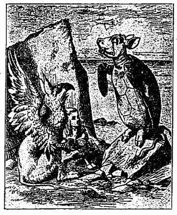
『
耻かしくもなく
能くこんな
莫迦げた
事が
訊かれたものだ』とグリフォンが
云ひ
足しました。
彼等は
雙方とも
默つた
儘坐つて
憐れな
愛ちやんを
見てゐました。
愛ちやんは
穴にも
入りたいやうな
氣がしました。やがてグリフォンが
海龜に
云ふには、『もつと
先きをサ！
早くしないと
日が
暮るよ！』
促がされて
漸く
彼は、『
全く、
私どもは
海の
中の
學校へ
行つたのです、お
前方が
信じないかも
知れないけど―』
『
决して
信じないとは
云やしなくッてよ！』と
愛ちやんが
喙を
容れました。
『では、
信じて』と
海龜。
『
默つて
聽け！』
愛ちやんが
復た
饒舌り
出しさうなので、グリフォンが
注意しました。
海龜は
尚ほも
續けて、――
『
私どもは
最上の
教育を
受けました――
實際、
私どもは
毎日學校へ
行きました――』
『
私だつても
學校時代はあつてよ』と
云つて
愛ちやんは、『そんなに
自慢しなくッても
可いわ』
『
殊更に！』と
少し
氣遣はしげに
海龜が
云ひました。
『さうよ』と
云つて
愛ちやんは、『
私達は
佛蘭西語と
音樂とを
習つたわ』
『そんなら
洗濯は？』と
海龜が
云ひました。
『
全く
習はないの！』と、
愛ちやんは
口惜しさう。
『あァ！それならお
前のは
眞個に
善い
學校ではなかつたのだ』と
海龜は
大なる
確信を
以て、『
今私どもの
方では
其ものは
皆な
課目表の
終りにある、「
佛蘭西語や、
音樂や、それから
洗濯――
其他」』
『
海の
底に
住んでるのに、そんなに
何も
必要はないわ』と
愛ちやん。
『
私はそれを
習ふために
授業を
受けてはゐませんでした』と
云つて
海龜は
長太息し、『
私は
只規則通りの
課程を
履んだゝけです』
『それは
何んなの？』と
愛ちやんが
訊ねました。
『
紡ぐことゝ

ることサ、
無論、
初めから』と
海龜は
答へて、『それから
算術の四
則、――
野心、
亂心、
醜飾、それに
嘲弄』
『「
醜飾」なンて
聞いたことがないわ』と
愛ちやんが一
本突ッ
込みました。『一
體それはどんな
事！』
グリフォンは
驚きの
餘り
其の
前足を
兩方とも
持上げました。『
醜飾なんて
聞いたことがないね！』と
叫んで、『お
前は
裝飾するッて
何の
事だか
知つてるだらう、え？』
『えゝ』と
愛ちやんは
生返辭をして――、『その
意味は――す――するッて――
何かを――もつと
綺麗にするッて』
『よし、それなら』とグリフォンは
續けて、『
若し
醜飾［＃ルビの「しうよしよく」はママ］すると
云ふことを
知らないならお
前は
愚人だ』
愛ちやんは
最う
其れについて
質問する
勇氣も
何も
無くなつて
了ひ、
海龜の
方へ
振向き、『
其の
他何を
習つて！』
『さうね、
不思議なこと』と
海龜は
答へて、
其の
岩の
上に
目録を
數へ
出しました、『――
不思議な
事、
古今に
亘れる
大海學の、それから
懶聲を
發すこと――
懶聲の
先生は
年老つた
海鰻で、一
週一
度來ることになつて
居ました、
彼は
私どもに
懶聲を
出すことゝ、
伸びをすることゝ、それから
蜷局を
卷くことゝを
教へました』
『それは
何が
好きだつたの？』と
愛ちやんが
云ひました。
『さァ、
私にはそれをお
前にやつて
見せられない』と
海龜は
云つて、『
體が
餘り
岩疊だから。それでグリフォンも
决してそれを
習ひませんでした』
『
時間がなかつたんだもの』と
云つてグリフォンは、『でも、
私は
古典學の
先生の
所へ
行きました。
先生は
年老つた
蟹でした、
全く』
『
私は一
度も
其の
先生の
所へ
行きませんでした』と
云つて
海龜は
長太息し、『その
先生は
笑ふことゝ
悲しむことゝを
教へてゐたさうです』
『
然うかい、さうかい』と
云つてグリフォンは、
自分の
番が
來たと
云はぬばかりに、これも
亦長太息を
吐きました、それから二
疋の
動物は
其の
顏をその
前足で
掩ひ
隱しました。
『そんなら一
日に
何時間お
前は
稽古をしたの？』と
愛ちやんは
話題を
變へやうとして
急いで
云ひました。
『
初めの
日は十
時間』と
海龜が
云つて、『
次の
日は九
時間、それからずッとそんな
風に』
『
奇妙な
仕方だわね！』と
愛ちやんが
叫びました。
『それだから
其れが
學科と
稱はれるのです』とグリフォンが
注意しました、『
然うして
毎日々々習ひくづしになつて
行くのです』
これは
全く
愛ちやんには
耳新しい
事柄でした、
愛ちやんは
暫く
考へてゐましたが、『それで
十一日目には
日曜だつたでせう』
『
無論然うでした』と
海龜。
『では十二
日目には
何うしたの？』と
愛ちやんが
熱心に
續けました。
『それで
最う
學課の
事は
澤山だ』とグリフォンは
决然云つて、『
何か
遊戯について
其娘に
話してやれ』
［＃改ページ］
海龜は
深くも
長太息を
吐いて、その
眼前に
懸れる一
枚の
屏風岩を
引寄せました。
彼は
愛ちやんの
方を
見て、
談話をしやうとしましたが、
暫くの
間、
歔欷のために
其の
聲が
出ませんでした。『
宛で
咽喉に
骨でも
痞へてゐるやうだ』と
云つてグリフォンは、
其背中を
搖つたり
衝いたりし
初めました。
遂に
海龜の
聲は
直りましたが、
涙は
頬を
傳はつて――
『お
前には
長く
海の
下に
住んでることが
出來なかつたらう――』（『
住んぢや
居なかつたわ』と
愛ちやんが
云ひました）『それで
多分蝦には
紹介されなかつたらうね――』（
愛ちやんは『
何時か
食べたことがあつてよ――』と
云ひ
出しました、が
急いで
止めて、『
否え、
全くないのよ』と
云ひ
直しました）『――ではお
前は
未だ
蝦の
舞踏が
何んなに
面白いものだか
知らないね！』
『さうよ』と
云つて
愛ちやんは、『それはどんな
風な
舞踏？』
『
然うさね』と
云つてグリフォンは、『
最初海岸に
沿うて一
列をつくる――』
『二
列さ！』と
海龜は
叫んで、『
多くの
海豹や、
海龜なぞが、それから
往來の
邪魔になる
海月を
追ッ
拂ふ――』
『それは
大抵二三
時間かゝる』とグリフォンが
喙を
容れました。
『――二
度進む――』
『
各々一
疋の
蝦を
相手に！』とグリフォンが
叫びました。
『
勿論』と
海龜は
云つて、『二
度進んで、
相手を
打棄放しにする――』
『――
蝦を
變へて、
順々に
後へ
退つて
來る』とグリフォンが
續けました。
『それで、ねえ』と
海龜は
續けて、『お
前が
投げる――』
『
蝦を！』と
叫んでグリフォンは、
空中に
跳び
上りました。
『――
精一ぱい
遙かの
海へ――』
『
其後から
泳いで
行く！』とグリフォンが
叫びました。
『
海の
中で
筋斗返りをする！』と
叫んで
海龜は、
妄に
跳ね
廻りました。
『も一
度蝦を
變へる！』とグリフォン。
『
再び
陸に
返る、それで――それが
第一の
歩調の
總てゞある』と
海龜は、
遽かに
其の
聲を
落して
云ひました。
始終氣の
狂つたやうに
跳ね
廻つて
居た二
疋の
動物は、
極めて
悲しげにも
亦靜かに
再び
坐り
込み、
愛ちやんの
方を
眺めました。
『それは
屹度大層結構な
舞踏に
違ひないわ』と
愛ちやんが
恐る／＼
云ひました。
『
少し
見たいだらう？』と
海龜が
云ひました。
『
澤山見たいわ、
眞個に』と
愛ちやん。
『どれ、
第一の
歩調をやつて
見よう！』と
海龜がグリフォンに
云ひました。『
蝦がなくても
出來るだらう、
何方が
歌はう？』
『さうだ、お
前、
歌へ』とグリフォンが
云ひました。『
私は
全然言葉を
忘れて
了つた。
乃で
彼等は
正式に
愛ちやんの
周りをぐる／＼
踊り
廻りました、
餘り
近づき
過ぎて
時々その
趾を
踏んだり、
拍子を
取るために
前足を
振つたりして、
其の
間海龜は
極く
徐かに
又悲しげに
斯う
歌ひました、――
『もつと素早く何故ゆけぬ？』と蝸牛に向つて胡粉が云つた、
『海豚が背後で、尻尾を踏むに。
蝦と龜とが一生懸命に進んで行くは！
皆な待つてる磧の上に――さア／＼一緒に來て踊らぬか？
お出でよ、お出で、お出でよ、お出で、さア／＼一緒に來て踊らぬか？
お出でよ、お出で、お出でよ、お出で、さア／＼一緒に來て踊らぬか？
『ほんとに知らぬか其の嬉しさを、
手玉に取られて海の方へ遠く、蝦と一緒に投げられる時の！』
蝸牛めが答へて云つた、『早い、早い！』と横目で睨めて――
眞白な胡粉に心から謝して、それでも踊りの仲間にや入らず。
仲間にならぬか、仲間におなり、仲間におなりよ、仲間におなり、一緒に入つて踊らんせ。
『遠くへ行ツ了つて何うする積り？』と、同じ鱗の友達が云つた。
『も一つ海岸が、向ふの方に。
英吉利離れて佛蘭西に近く――
歸るな可愛い、蒼白い蝸牛よ、さア／＼一緒に來て踊らんせ。
踊れよ、踊れ、 踊れよ、踊れ、さア／＼一緒に來て踊らぬか？
踊れよ、踊れ、 踊れよ、踊れ、さア／＼一緒に來て踊らぬか？』
『
有難う、
見てると
却々面白い
舞踏だわ』と
云つて
愛ちやんは、
漸くそれが
濟んだのを
嬉しく
思ひました、『
私も
其の
奇妙な
胡粉の
歌が
大好きよ！』
『ナニ、
胡粉だつて』と
云つて
海龜は、『
彼等が――
勿論、お
前はそれを
見たことがあるんだらう？』
『
然うよ』と
云つて
愛ちやんは、
度々それを
見てよ、
御馳――』
云ひかけて
急に
口を
噤んで
了ひました。
『
何處に
御馳なンてものがあるか』と
云つて
海龜は、『だが、
若しお
前がそんなに
度々それを
見たならば、
無論お
前はそれの
好きな
物を
知つてるだらう』
『えゝ、
知つてゝよ』と
愛ちやんは
小癪にも
答へて、『
其の
中に
尾のやうなものがあるのは――それは
皆な
屑ですッて』
『
屑だなんて
云つては
間違だ』と
海龜が
云ひました、『
屑は
皆な
海の
中で
洗ひ
流す。でも、
其の
中には
尾のやうなものがある、
其の
理由は――』
海龜は
欠をして、それから
目を
瞑り、『
其理由を
悉皆娘に
話してやれとグリフォンに
云ひました。
『その
理由は』と
云つてグリフォンは、『それは
何時でも
蝦と一
緒に
舞踏をする。
其故皆な
海の
中へ
放り
込まれる。それで
長い
道程を
墜ちて
行かなければなりませんでした。そのため
中に
先づ
尾のやうなものがあるので、その
尾は
再び
外へ
出すことは
出來ません。それだけの
事です』
『ありがたう』と
云つて
愛ちやんは、『
隨分面白いのね。
今まで
知らなかつたのよ、そんなに
澤山胡粉のことについては』
『
好きなら、もつと
幾らでも
話す』とグリフォンが
云ひました。『それが
胡粉と
稱ばれる
理由は？』
『
未だ
其事を
考へて
見たことがなくつてよ』と
云つて
愛ちやんは、『
何故さ？』
『それは
長靴にもなれば
短靴にもなる』とグリフォンが
頗る
嚴かに
答へました。
愛ちやんは
何が
何だか
薩張道理が
解らず、『
長靴にもなれは
［＃「なれは」はママ］半靴にもなる！』と
不審しげな
調子で
繰返しました。
『それ、お
前の
靴は
何で
然うなつてる？』と
云つてグリフォンは、『
何だと
云ふことさ、そんなに
光つてるのは？』
愛ちやんはそれを
見ながら
暫く
考へて
居ましたが、『それは
全く
靴墨の
所爲だわ』
『
海底の
長靴と
半靴は』とグリフォンが
重々しい
聲で
續けて、『
胡粉を
着けてる。
何うだ、
解つたらう』
『そんなら、それは
何から
製造られるの？』と
愛ちやんはさも
物珍らしさうに
訊ねました。
『
靴底魚と
鰻とでサ、
勿論』とグリフォンは
些や
焦心ッたさうに
答へて、『
蝦ッ
子に
聞け』
『
若し
私が
胡粉だつたら』と
云つて
愛ちやんは、
猶ほ
其の
歌のことを
思ひながら、『
私なら
海豚に
云つてやつたものを、「お
歸りよ、お
前なんぞとは一
緒に
居たくもない！」ッて』
『
皆な
仕方なしに一
緒に
居たんだ』と
海龜が
云ひました、『どんな
賢い
魚でも、
海豚を
伴れなくては
何處へも
行けやしないもの』
『
然うかしら？』と
如何にも
驚いたやうに
愛ちやんが
云ひました。
『
無論然うとも』と
云つて
海龜は、『だから、
若し
或る
魚が
私の
所へ
來て、
旅行に
出懸るンですがと
話すならば、
私は
何時でも「どんな
海豚と一
緒に？」と
訊ねる』
『ナニ、「
射るか」ですッて？』と
愛ちやんが
云ひました。
『
今云つた
通りさ』と
海龜は
腹立しげに
答へました。
乃でグリフォンが、『さァ、
何かお
前の
冐險談を
聞かう』
『
冐險談をしませうか――
今朝から
初めて』と
云つて
愛ちやんは
些や
恐る々々
［＃「恐る々々」はママ］、『でも、
昨日にまで
後戻りするには
及ばなくつてよ、
何故ッて、
私は
其時には
異つた
人間だつたのですもの』
『
何う
云ふ
理由だか
皆な
云つて
御覽』と
海龜が
云ひました。
『
否え、
否え！
冐險談が
先き』
云つてグリフォンは
焦心ッたさうに、『
説明なンて、
時間ばかり
要つて
仕方がない』
乃で
愛ちやんは、
最初白兎を
見た
時からの
冐險談を
彼等に
話して
聞かせました。
初めの
中は
些や
心後れして
默つて
居ますと、二
疋の
動物がその
側に
近寄つて
來ました、
右と
左に一
疋宛、
眼と
口とを開けるだけ
大きく
開いて、でも、
愛ちやんは
元氣を
出して
話し
續けました。
其の
聽衆は
愛ちやんが
毛蟲に、『
裏の
老爺さん』を
復誦して
聞かす
段になる
迄は、
全く
靜かにしてゐましたが、
全然間違つたことばかり
言ふので、
海龜は
呆れ
返つて、『
可笑しなこと』
『
眞個に
莫迦げて
居る』とグリフォンが
云ひました。
『
殘らず
違つてる！』と
考へ
拔いた
揚句、
海龜が
復た
云ひました。『もう一
度復誦して
呉れッて、
娘に
然う
云へ』
其れは
恰も
愛ちやん
以上に
或る
權威を
持つてゞも
居るかのやうに、グリフォンの
方を
顧みました。
『
立つて、やり
直せ、
今度は「
懶惰者の
聲」を』とグリフォンが
云ひました。
『まァ、
可厭な
動物だこと、
人に
命令けたり、
人に
學課のやり
直しをさせたりして！』と
愛ちやんは
思ひました。『
丁度學校に
居るやうだわ』
云つて
愛ちやんは
立ち
上り、それを
復誦し
初めました、が、
全く
夢中に
蝦の
舞踏のことばかり
思つてゐて、
自分で
自分が
何を
云つてるのか、
殆んど
知りませんでした、
其故その
詞は
甚た
［＃「甚た」はママ］奇妙なものになつて
了ひました。
『あれは
確かに、
蝦の
聲、
「
莫迦に
眞赤に
燒けすぎた、
頭に
砂糖をかけてくれ」
鶩が
瞼でするやうに、
蝦は
自ら
其の
鼻で
帶しめ
鈕かけ
身を
固め、
趾殘らず
裏返す。

の
眞砂の
乾上る
時は、
樂しさうにも
雲雀のやうに、
鱶の
奴らの
惡口云へど、
潮［＃ルビの「しは」はママ］が
上つて
數多の
鱶が、
來れば
臆病な
顫へ
聲』
『それは
私が
子供の
時に、
始終口癖のやうに
云つて
居たのとは
異ふ』とグリフォンが
云ひました。
『
然うさ、
私もこれまで
聞いたことがない』と
云つて
海龜は、『
妙な
寐言だこと』
愛ちやんは
何にも
云はず、
兩手で
顏を
抑えて
坐り
込みました、
何うなることかと
心配しながら。
『どうか
説明して
貰ひたいものだ』と
海龜が
云ひました。
『あの
娘に
説明が
出來るものか』と
慌しく
云つてグリフォンは、『それよりも
次の
節を
願ひませう』
『だが、
趾の
事だらうね？』と
海龜が
念を
押しました。
何うして
鼻で
其れを
裏返すことが
出來たかえ？』
『それは
舞踏の
第一の
姿勢だわ』と
云つたものゝ
愛ちやんは、
全く
當惑したので、
切りに
話頭を
更へやうとしました。
『
次の
節を
願ひます』とグリフォンが
再び
云ひました、『それは「
庭を
通る
時」と
云ふのが
始めだ』
愛ちやんは
决して
逆はうとはしませんでした、
屹度殘らず
間違ふだらうとは
思ひましたが、それでも
尚ほ
顫へ
聲で、――
『庭を通る時、ちらと見た、
豹と梟が饅頭の分配、
豹は外皮やら、肉やら、肉汁、
梟は馳走に皿貰うた。
饅頭が終へたら、お土産に、
梟は衣嚢に匙入れた、
豹は小刀と肉叉を、
藏うて、どうやら酒宴が――』
『
品物ばかり
列べ
立てたつて
何の
役に
立つか？』と
海龜は
遮つて、『
幾ら
云つても
説明しないから。こんなに
錯雜紛糾したことを
聞いたことがない！』
『さうさ、だから
廢止た
方が
餘ッ
程可い』とグリフォンが
云ひました、
愛ちやんもそれには
大賛成でした。
『
蝦の
舞踏のモ
一つの
歩調をやつて
見やうか？』とグリフォンは
續けて、『それとも
海龜にも
一つ
歌を
謳つて
貰はうか？』
『
然うね、
歌の
方が
好いわ、
萬望、
海龜の』と
愛ちやんが
熱心に
答へました、グリフォンは
頗る
不滿さうに、『フム！
面白くでもない！「
海龜肉汁」なんぞ、
何だ
老耄奴が？』
海龜は
深くも
長太息を
吐いて、
歔欷しながら
咽ぶやうな
聲で、かう
歌ひました、――
『見事な肉汁、澤山で溢れさう、
温かさうな皿に！
跼まにや吸へぬ？
晩の肉汁、見事な肉汁！
晩の肉汁、見事な肉汁！
見い――ごとなスウ――ウプ！
見い――ごとなスウ――ウプ！
ばア――あン――の――スウ――ウプ、
見事な、見事な、肉汁！』
『見事な肉汁、魚は誰の、
競技か、それとも何の皿？
二錢でも廉價い？
見事な肉汁！
一錢で賣りよか？
見い――ごとなスウ――ウプ！
見い――ごとなスウ――ウプ！
ばア――あン――の――スウ――ウプ、
見事な、見い――ごとな肉汁！』
『モ
一度合唱を！』とグリフォンが
叫びました、
海龜がそれを
繰返さうとした
時に
丁度、『
審問始め！』の
叫び
聲が
遠方に
聞えました。
『それッ！』と
云ひさまグリフォンは、
愛ちやんの
手を
取つて
急ぎ
立去りました、
歌の
終るを
待たずして。
『
何の
審問？』
愛ちやんは
喘ぎ／＼
駈けました、グリフォンは
只『それッ！』と
叫んだのみで、
益々速く
走りました、
風が
持て
行く
唄の
節、――
『ばア――あン――のスウ――ウプ、
見事な、見事な、肉汁！』
［＃改ページ］
心臟の
王樣と
女王樣とがお
着になり、
其の
玉座につかせられました
時、
多勢のものどもが
其周りに
集まつて
來ました――
骨牌の
一ト包と
同じやうな、
小鳥や
獸が
殘らず、
軍人は
鎖に
繋がれて、
御前に
立つてゐました、
左右から
二人の
兵士に
護衞されて、
王樣のお
側には、
片手に
喇叭、
片手に
羊皮紙の
卷物を
持つた
白兎が
居ました。
法廷の
眞中には一
脚の
洋卓があつた、
其上には
栗饅頭の
大きな
皿が
載つてゐました、
見るからに
美味さうなので、
愛ちやんは
何うかしてそれを
食べて
見たくて
堪りませんでした――『
審問が
始まれば
可いが』とも、
亦、『その
菓子を
廻して
欲しいナ！』とも
思ひましたが、
却々そんな
機會の
來さうにもありませんでした、
愛ちやんは
所在なさに
四邊を
眺め
初めました。
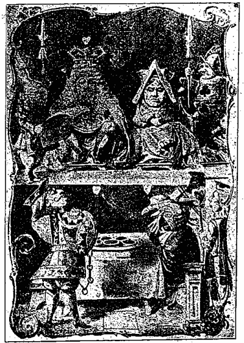
法廷
愛ちやんは
甞て
法廷に
行つたことがありませんでした、
只それを
書物で
讀んだばかりでしたが、それでも
其處にある
大抵の
物の
名を
知ることが
出來たので、
非常に
悦んでゐました。『あれが
裁判官だわ』
愛ちやんは
獨語を
云つて、
『だつて、
大きな
鬘を
着けてゝよ』
裁判官は
序でに、
王樣がなされました。
王樣は
鬘の
上に
其の
冠を
戴き、
如何にも
不愉快さうに
見えました、それのみならず、それは
少しも
似合ひませんでした。
『それから、あれが
裁判官の
席なのよ』と
愛ちやんは
思ひながら、『それで、あの十二の
動物は』（
愛ちやんは
否でも
應でも
動物と
云はない
譯には
行きませんでした、でも
其の
中には
動物も
居れば、
亦鳥も
居たのですもの）『
屹度陪審人なんだわ』
愛ちやんは
此の
最後の
詞を
獨語のやうに二三
度繰返し／＼、
些や
誇顏［＃ルビの「ほこりがは」はママ］に
云ひました、
何故といふに、
自分位の
年齡格好の
小娘で、
全く
其意味を
知つてるのは
甚だ
稀だと
實際愛ちやんは
然う
思つてゐましたから。けれども『
陪審官』と
云つた
方が一
層正しいのです。
十二の
陪審人は
皆な
忙しさうに
石盤に
書いてゐました。『
何を
皆なで
爲てるんでせう？』と
愛ちやんはグリフォンに
いて、『
審問が
始まらないので、
未だそんなに
何も
書くことがないんだわ』
『
銘々自分の
名を
書いてるんだ』とグリフォンが
答へて、『
審問の
濟むまでに
忘れて
了ふと
困るから』
『
愚物だわねえ！』と
愛ちやんは
大きな
聲で
齒痒さうに
云ひ
出しましたが、『
默れ！』と
白兎が
叫んだので、
急いで
止めました。
王樣は
眼鏡をかけ、
誰が
話したのかと
思つて、
きよろ／＼四邊を
見廻されました。
愛ちやんは
陪審人が
殘らず
其の
石盤に、『
愚物だわねえ！』と
書きつけてゐるのを、
皆なの
肩越しに
全然能く
見ました、それのみならず
愛ちやんは、
其の
中の
一つが「
愚物」と
何う
書いて
可いか
分らないので、その
隣りのに
聞いてたことまでも
知りました、『きれいに
汚れて
了ふだらう、
石盤が、
審問の
濟むまでには！』と
愛ちやんは
思ひました。
陪審人の
一つが
鉛筆を
軋らせました。
立つことを
許されないにも
拘らず
愛ちやんは、
法廷を
廻つて
其の
背後へ
行き、
隙を
狙つて
手早くそれを
取り
去りました。
餘りに
敏捷くやられたので、
可哀相に
小さな
陪審人は（それは
蜥蜴の
甚公でした）
茫然して
了ひました、
隈なく
探し
廻つたが
見當らず、
餘儀なく
其の
日はそれから一
本の
指で
書いてゐました、が、それは
殆んど
用をなしませんでした、
石盤に
何の
痕跡も
殘らぬので。
『
使者よ、
其の
告訴を
讀め！』と
王樣が
申されました。
乃で
白兎は三
度喇叭を
吹き、それから
羊皮紙の
卷物を
開いて、
次のやうに
讀みました。
『心臟の女王樣、栗饅頭を製つた、
夏の日に皆な、
心臟の軍人、栗饅頭を盜んで、
皆な持つて逃げた！』
『
判决は』と
王樣が
陪審官に
申されました。
『
未だ、／＼！』と
兎は
急いで
遮つて、『
其以前に
爲べき
事が
澤山あります！』
『
第一の
證人を
喚び
出せ』と
王樣が
申されました。
白兎は三
度喇叭を
吹いて『
第一の
證人！』と
聲をかけました。
第一の
證人は
帽子屋でした。
彼は
片手に
茶碗、
片手に
牛酪麺麭を
一ト片持つて
入つて
來ました。『お
免しあれ、
陛下よ』と
云つて
彼は、『こんな
物を
持ち
込みまして、でも、お
喚び
出しになりました
時、お
茶を
飮みかけて
居ましたものですから。』
『
濟んで
居た
筈だが』と
王樣が
申されました。『
何時始めたのか？』
帽子屋は、
福鼠と
手に
手を
取つて、
其の
後から
續いて
法廷に
入つて
來た三
月兎を
見て、『三
月の十四
日だつたと
思ひます』と
云ひました。
『十五
日』と三
月兎が
云ひました。
『十六
日』と
福鼠が
云ひました。
『それを
書きつけとけ』と
王樣が
陪審官に
申されました、
陪審官は
熱心にその
石盤に三つの
日を
書きつけました、それから
何でも
關はず
其の
答へを
列記しました。
『お
前の
帽子を
脱げ』と
王樣が
帽子屋に
申されました。
『
私のではありません』と
帽子屋が
云ひました。
『
盜んだナ！』と
王樣は
陪審官を
顧みながら
叫ばれました、
陪審官は
絶えず
事實の
備忘録を
作つてゐました。
『
私は
賣る
爲にそれを
持つてるのです』と
帽子屋が
説明のやうに
言ひ
足しました、『
自分の
物は
一個も
持ちません。
私は
帽子屋ですもの』
乃で
女王樣は
眼鏡をかけ、
氣味の
惡い
程帽子屋を
凝視られました、
帽子屋は
眞ッ
蒼になつて
顫へてゐました。
『
證據やある』と
王樣が
申されました、『
怕れることはない、
早く
云へ、さもなければ
即座に
死刑だ』
これでは
全く
證人の
元氣づかう
筈がありませんでした、
矢ッ
張ぶる／＼顫へながら、
氣遣はしげに
女王樣の
方を
見て
居ましたが、やがて
無我夢中で、
持つて
居た
茶腕［＃「茶腕」はママ］を
牛酪麭麺［＃「麭麺」はママ］と
間違へて、一
ト破片大きく
齧りました。
すると
忽ち
愛ちやんは
妙な
心地がして
來たので、
何うしたことかと
甚だ
不審に
思つて
居ますと、
復たもや
段々大きくなり
初めました、
愛ちやんは
最初立ち
上つて
法廷を
出やうとしましたが、
考へ
直して
今度は、
空場所のある
間斯うして
居やうと
决心しました。
『そんなに
押すな』と
愛ちやんの
次ぎに
坐つて
居た
福鼠が
云ひました。『
呼吸も
吐けやしない』
『
仕方がないわ』と
愛ちやんは
優しい
聲で、『
大きくなるんですもの』
『お
前には
此處で
大きくなる
權利は
些とも
無い』と
福鼠が
云ひました。
『
莫迦なことをお
言ひでない』と
云つて
愛ちやんは
大膽にも、『お
前だつても
大きくなつてるぢやないの』
『
然うさ、だけど
私の
大きくなり
方は
法に
適つてる』と
云つて
福鼠は、『そんな
滑稽な
風ぢやない』
乃で
忌々しさうに
立ち
上り、
法廷の
他の
側に
越えて
行きました。
此間も
始終女王樣は
决して
帽子屋から
眼を
離されませんでした。
丁度福鼠が
法廷を
横切つた
時に、
女王樣は
廷丁の
一人に、『この
以前の
音樂會の、
演奏者の
名簿を
持つて
參れ』と
仰せられました、これを
聞いて
憐れな
帽子屋は、
慄へ
戰いて、
穿いてた
靴も
何も
脱いで
了ひました。
『
證據やある』と
王樣は
腹立しげに
繰返されました、『
無いなら
死刑だ、
有るか
無いか
早く
申せ』
『お
助け
下さいませ、
陛下よ』と
帽子屋は
顫へ
聲で、『――お
茶を
飮んでは
居ませんでした――もう
殆んど一
週間以上も
飮みません――オヤ、
牛酪麺麭が
莫迦に
薄くなつた――
一寸の
間に――』
『
一寸の
間に
何が？』と
王樣が
申されました。
『
初め、お
茶と
申したのです』と
帽子屋が
瞹昧に
答へました。
『
勿論一寸と
云ふ
詞の
初めにも
チがつくが！』と
王樣が
棘々しく
申されました。『
我れを
侮辱するか？え！』
『お
助け
下さいませ』と
帽子屋は
續けて、『
何だか
澤山其の
後ろに
ちら／＼して
居ます――
談をしたのは三
月兎だけです――』
『しません！』と三
月兎が
大急ぎで
遮りました。
『した！』と
帽子屋。
『しない！』と三
月兎。
『
屹度しないと
申すか』と
云つて
王樣は、『もう
止せ』
『まァ、それは
兎に
角、
福鼠が
云ふには――』と
帽子屋は
續けて、
若しや
復た
打消されはしないかと、
心配さうに
四邊を
見廻しましたが、
福鼠は
打消すどころか、もう
疾くに
熟睡んで
居ました。
『
其の
後』と
帽子屋は
云ひ
續けて、『
私はもッと
牛酪麺麭を
切りました――』
『
併し
何を
福鼠が
云つたのか？』と
陪審官の
一人が
訊ねました。
『
思ひ
出せません』と
帽子屋が
云ひました。
『
憶えてる
筈だが』と
云つて
王樣は、『さもなければ
汝を
死刑に
處す』
不憫にも
帽子屋は、
其の
茶腕［＃「茶腕」はママ］と
牛酪麺麭とを
落して
了ひ、
片膝ついて、『お
助け
下さいませ、
陛下よ』と
初めました。
『お
前は
如何にも
可哀相なものだ』と
王樣が
申されました。
乃で一
疋の
豚が
何とか
云つて
喝采しましたが、
直ちに
廷丁のために
制止られました。（それは
漢語交りで
些や六ヶ
敷い
言葉でしたが、
説明すれば、
皆なで、
大きな
麻布の
袋の
中へ、
最初頭を
切つた
豚を
窃と
入れ、その
口を
緊乎と
糸で
縛り、それから
其の
上に
坐れと
云ふことでした）
『
然うしたら
甚に
面白いでせう』と
愛ちやんは
思ひました。『
私は
審問の
終りに「
傍聽人が
喝釆［＃「喝釆」はママ］しやうとして、
直ちに
數多の
廷丁どもに
制止られた」と
云ふことを、
屡々新聞で
讀んでは
居ましたが、それが
何う
云ふ
意味だか
解りませんでした。』
『
宜しい、
下れ』と
王樣がお
續けになりました。
『もう
是より
下れません』と
帽子屋が
言ひました。『
御覽の
通り
床の
上に
居ります』
『
然らば
坐れ』と
王樣がお
答へになりました。
乃で
他の
豚が
喝釆［＃「喝釆」はママ］しましたが、
制止られました。
『さァ、もう
可い！』と
愛ちやんは
思ひました。『これで
安心』
『
私はお
茶を
濟ませて
了ひたう
御座います』と
云つて
帽子屋は
氣遣はしげに、
女王樣の
方を
見ました、
女王樣は
演奏者の
名簿を
讀んで
居られました。
『
行つても
宜い』と
王樣が
申されました、
帽子屋は
急いで
法廷を
出ました、
靴をも
穿きあへず。
『――それ、
其の
頭を
刎ねとばせ』と
女王樣が
一人の
廷丁に
申されました、が
帽子屋の
姿は、
廷丁が
戸口まで
行かない
中に
見えなくなりました。
『
次なる
證人を
喚べ！』と
王樣が
申されました。
次なる
證人は
公爵夫人の
料理人でした。
料理人は
片手に
胡椒の
箱を
持て
居ました、
愛ちやんは
已に
彼が
法廷に
入らぬ
前に、
戸口に
近く、
通路に
居た
人民どもが、
急に
嚏をし
初めたので、
直にそれが
誰であつたかを
推察しました。
『
證據は』と
王樣が
申されました。
『
御座いません』と
料理人。
王樣は
氣遣はしげに
白兎を
御覽になりました、
白兎は
低聲で、『
陛下は
此の
證人の
相手方の
證人を
詰問せらるゝ
必要があります』
『よし、さらば、
詰問せん』
王樣は
冱々しからぬ
御容子にて、
腕を
拱み、
眉を
顰め、
兩眼殆んど
茫乎なる
迄、
料理人を
凝視めて
居られましたが、やがて
太い
聲で、『
栗饅頭は
何から
製られるか？』
『
多くは、
胡椒で』と
料理人が
云ひました。
『
糖蜜で』と
彼れの
後ろで
眠さうな
聲が
云ひました。
『
其の
福鼠を
彩色れ』と
女王樣が
金切聲で
叫ばれました。『
其の
福鼠を
斬れ！
其の
福鼠を
法廷から
逐ひ
出せ！それ、
抑えよ！そら
抓ろ！
其の
髯を
引ッ
張れ』
暫くの
間全く
法廷は
上を
下への
大騷ぎでした。
福鼠を
逐ひ
出して
了ひ、
皆なが
再び
落着いた
時迄に、
料理人は
行方知れずなりました。
『
關はない！』
悠然として
王樣が
申されました。『
次なる
證人を
喚べ』それから
王樣は
低い
聲で
女王樣に、『
實際、あの、
御身は
次なる
證人の
相手方の
證人を
詰問しなければならない。
甚く
頭痛がして
來た！』
云ひながらも
王樣は、
名簿を
彼方此方と
索して
居られました、ところで
愛ちやんは、
次なる
證人が
何んなのだらうかと
頻りに
見たく
思ひながら、
凝と
白兎を
瞻戍つて
居ました、が
軈て、『――でも
未だ
充分證據が
擧らないのですもの』と
獨語を
云ひました。
愛ちやんの
驚きや
如何ばかり、
白兎が、その
細い
金切聲を
張上げて、『
愛子！』と
其の
名を
讀み
上げました
時の。
［＃改ページ］
『はい！』と
叫んだものゝ
愛ちやんは、
餘りに
狼狽たので
自分が
此所少時の
間に、
如何ばかり
大きくなつたかと
云ふことを
全然忘れて、
遽かに
跳び
上りさま、
着物の
裾で
裁判官の
席を
拂ひ、
陪審官をば
殘らず、
下なる
群集の
頭上に
蹴轉がしました。
愛ちやんは
其處に
彼等の
這ひ
廻るのを
見て、
偶々自分が
以前の
週に、
數多の
金魚鉢を
轉ッ
覆へした
時の
態を
想ひ
起しました。
『
萬望、お
宥しを
願ひます』と
愛ちやんは
消魂しい
聲で
叫んで、
再び
手早く
彼等を
拾ひ
上げました。
絶えず
金魚の
事ばかり
考へてゐたので、
直ちに
彼等を
集め、
各々その
席へ
歸してやらなければならない、さもなければ
皆な
死んで
了うだらう、と
愛ちやんは
只然さう
思つてたものですから。
『
審問を
進めることが
出來ない』と
王樣は
極めて
嚴格な
聲で、『
陪審官が
殘らずその
位置に
復するまでは――
殘らず』と
頗る
詞を
強めて
繰返し、
屹然愛ちやんの
方を
御覽になりました。
愛ちやんは
先づ
裁判官の
席を
見、それから
大急ぎで
蜥蜴を
逆さまに
置きました。
憐れな
小さな
物は、
全く
自由に
動くことが
出來ないので、
只悲しさうに
其尾ばかり
振つてゐました。
愛ちやんは
又直ちにそれを
以前のやうに
置き
直し、『
何方にしたつて
大した
違ひはなくつてよ』と
獨語を
云ひました、『これは
何うしても
矢張、
他の
者と
同じ
方法で
審問するに
限るわ』
陪審官等は
些や
身體の
顫えが
止るや
否や、
再び
石盤と
鉛筆とを
渡されたので、
皆な一
心に
事の
始末を
書き
出しました、
獨り
蜥蜴のみは
其口を
開いたまゝ、
徒らに
法廷の
屋根を
見上げて、
爲すこともなく
茫然坐つてゐました。
『
此の
事件に
關して、
其方の
存じて
居ることは！』と
王樣が
愛ちやんに
申されました。
『
何にも
存じません』と
愛ちやん。
『
屹度何にも
存ぜぬか？』と
王樣が
固く
念を
押されました。
『
全く
何にも
存じません』と
愛ちやん。
『それは
極めて
必要な
事だ』と
王樣は
陪審官一
同を
顧みて
申されました。
彼等が
將にこれを
石盤に
書きつけんとした
時に、
白兎は
啄を
容れて、『
不必要で
御座います、
陛下よ、
申す
迄もなく』と
甚だ
恭しく、
併し
眉を
顰めて
申し
上げました。
『
不必要、
勿論、
左樣』と
王樣は
口早に
云つて、
尚ほも
低聲で
獨語を
申されました、『
不必要――
不必要――
不必要――
不必要――』と
宛も
何の
詞が
最も
善く
發音されるかを
試驗するやうに。
或る
陪審官はそれを『
必要』と
書きつけ、
又或者は『
不必要』と
書きつけました。
愛ちやんは
彼等の
石盤を
見越せる
程近くに
居たので、
全然それが
分りました、『
併しそれは
何うでも
關はないわ』と
密かに
然う
思ひました。
此時、
今まで
何か
其の
備忘録に
忙しさうに
書いて
居られた
王樣が、『
默れ！』と
叫んで、やがて
御所持の
書物をお
開きになり、『
第四十二
條。その
身長一
哩より
高き
者は
法廷を
去るべし』とお
讀みになりました。
皆が
愛ちやんの
方を
見ました。
『
私の
身長は一
哩なくッてよ』と
愛ちやんが
云ひました。
『ある』と
王樣。
『
殆んど二
哩も
高い』と
女王樣がお
附加しになりました。
『
何にしても、
私は
出て
參りません、
兎に
角』と
云つて愛ちやんは、『のみならず、それは
正しい
規則ではありません、
唯た
今考案されたのですもの』
『それは
此書物にある
最も
古い
規則だ』と
王樣が
申されました。
『そんなら、それは
屹度一
番に
違ひありません』と
愛ちやん。
王樣は
眞蒼になつて、
急いで
其の
備忘録を
閉ぢ、『
判决は』と
陪審官に
申されました、
低い
顫へ
聲で。
『まだ／＼もつと
多くの
證據が
御座います、
陛下よ』と
云つて
白兎は、
遽に
跳び
上り、『
此の
文書は
只今拾ひましたのです』
『
何が
其中に
書いてあるか？』と
女王樣が
申されました。
『
私は
未だそれを
開きません』と
云つて
白兎は、『だが、それは
手紙のやうです、
囚人の
手になつた、――
何者かに
宛てた』
『それに
違ひない』と
王樣が
申されました、『
名宛が
書いてないとすれば、
屹度』
『
誰にとも
指定してないのか？』と
陪審官の
一人。
『
全く
指定してありません』と
云つて
白兎は、『
實際、
表面には
何にも
書いてありません』それから
其の
文書を
開いて、『
全く
手紙ではありません、それは
歌の一
節です』
『それが
囚人の
筆蹟なのか？』とモ
一人の
陪審官が
訊ねました。
『
否え、
然うではありません』と
云つて
白兎は、『
實に
不思議だ』（
陪審官は
皆な
途方に
暮れて
了ひました）
『
誰か
他の
者の
僞筆に
相違ない』と
王樣が
申されました。（
陪審官は
殘らず
目を
りました）
『
願くは
陛下よ』と
云つて
軍人は、『
私が
書いたのでは
御座いません、その
證據には、
終ひに
名も
何も
書いて
御座いません』
『
若しも
汝がそれに
署名しなかつたとすれば』と
云つて
王樣は、『
尚々惡い、
汝の
惡戯に
相違ない、さもなければ
正直に
署名して
置くべき
筈だ』
爰に
於いてか
滿座悉く
拍手喝釆［＃「喝釆」はママ］しました、それは
眞に
王樣が
其日に
仰せられた
中の
最も
巧みなる
［＃「巧みなる」はママ］お
言葉でした。
『それが
何より
罪のある
證據だ、
云ふ
迄もなく』と
女王樣が
申されました、『
關はない、
刎ねろ――』
『そんなものは
證據にはなりません！』と
愛ちやんが
云ひました。『
何だか
譯が
解らないのですもの！』
『それを
讀め』と
王樣が
申されました。
白兎は
眼鏡をかけ、『
何處から
初めて
宜しいのですか？
陛下よ』とお
訊ね
申し
上げました。
『
初めから
始めて』と
王樣は
嚴格に、『それから、ずつと
終ひまで、
濟んだから
止め』
法廷は
水を
打てる
如く
靜かになりました、
乃で
白兎が
次の
歌を
讀み
出しました、
『
何時か
彼處へ
行つた
時、
私の
事ども
話［＃ルビの「は」はママ］したと、
見事な
手紙を
寄越したが、
泳げないとの
辯疏で。
私の
行けぬと
云つたのが、
（
何より
嘘ではない
證據）
それをも
責めよと云ふのなら、
一
體お
前は
何うする
氣？
一個［＃ルビの「ひつと」はママ］遣つたに、
又二つ、
三つ
四つ
慾には
限りなく、
殘らずお
前の
懷ろへ、
以前は
私のものだけど。
斯うして
二人が
共々に、
若しや
連累されたとて、
お
前がついてれや
大丈夫、
何時かは
疑ひ
睛［＃「睛」はママ］れるだらう。
私もお
前と
同じこと、
（フイと
恁氣になつたのも）
唯タ
一つの
邪魔者が、
中間へ
入つてした
所業。
親しいからとて油斷すな、
何時になつても
變りなく、
他人に
隱した
此の
秘密、
『お
前と
私の
間だけ』
『それこそ
大事な
證據の
一つである』と
王樣は
揉手をしながら、『さらば
陪審官に――』
『
若し
誰でも
其の
説明の
出來たものに』と
愛ちやんが
云ひました、（
此所少時の
間に
大變大きくなつたので、
誰れ
憚る
所もなく
大膽に
喙を
容れて）、
私は十
錢與げてよ。
私はそれに
些とも
意味があるとは
信じないわ』
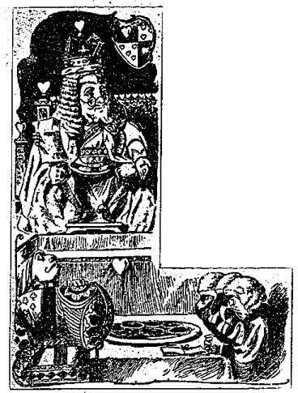
陪審官は
殘らずその
石盤に、『
娘はそれに
些とも
意味があるとは
信じない』と
書きつけました、
併し
誰れ
一人として
其の
文書を
説明しやうとはしませんでした。
『
若しそれに
何の
意味も
無いとすれば』と
云つて
王樣は、『それは
面倒くさくなくて
可い、
何事かを
知らうとしないで
濟むから。『どうも
解らん』と
續けて、
其の
膝の
上に
歌を
展げ、
片眼で
見ながら、『
併し
何か
其れには
意味があるやうに
思はれる。「――
泳げないとの
辯疏で――」
其方には
泳げぬか、え？』
云つて
軍人の
方を
御覽になりました。
軍人は
悲しげに
其の
頭を
振つて、『
私はそれが
好きのやうに
見えますか？』と
云ひました。『
骨牌が
何うして
泳げるものですか）
『
宜しい、それなら』と
云つて
王樣は、
頻りに
口の
中で
其の
歌を
繰返して
居られました、「
何より
嘘ではない
證據――」それは
勿論陪審官で――「それをも
責めよと
云ふのなら」――それは
女王に
違ひない「一
體お
前は
何うする
氣？」――
何うする、
眞個に！――「
一つ
遣つたに、
又二つ――」さて、それは
屹度涙ながらに
遣つたに
違ひない、どうだ――』
『
未だ
先に、「
殘らずお
前の
懷ろへ」と
云ふのがあつてよ』と
愛ちやんが
云ひました。
『それ、
其處に！』と
云つて
王樣は、
洋卓の
上の
栗饅頭を
指しながら、
得意げに
申されました。『
何と
此程見事な
物があらうぞや。それから
又――「フイと
恁氣になつたのも――」そんな
氣になる
筈はないが、え、なつたのではなからうが？』と
女王樣は
申されました。
『
决して、なつたことはない』と
云つて
女王樣は
亂暴にも、
蜥蜴を
目がけてインキ
壺を
投げつけられました。（
不幸なる
小さな
甚公は、
何にも
痕跡の
殘らぬのを
知つて、一
本指で
石盤へ
書くことを
止めました、ところで、その
顏からインキの
垂れてるのを
幸ひ、
今度は一
生懸命にインキを
用ゐて
再び
書き
初めました）
『どうだ、
何とも
言葉が
出ないだらう』と
云つて
王樣は、
微笑みながら
法廷を
見廻されました。
法廷は
森としました。
『さァ、どうだ』と
又云ひ
足して、『
判决は』
『まだ、／＼！』と
女王樣が
申されました。『
宣告が
前で、――
判决はそれから
後のことだ』
『
何ですッて！』と
愛ちやんは
聲高に
云つて、『
最初宣告をするッて！』
『
默れ！』と
眞赤になつて
女王樣が
申されました。
『
默りません』と
愛ちやん。
『
頭を
刎ねるぞ！』と
女王樣が
聲のあらん
限り
叫ばれました。
誰れ
一人として
縮み
上らぬものはありませんでした。
『
誰れがお
前の
云ふことなぞを
聞くものか？』と
云つて
愛ちやんは、（
此時までに
大きくなれるだけ
充分大きくなつてゐました）『お
前は
骨牌の
一組に
過ぎないではないか！』
此の
時、
全くその
一組が
空中に
舞ひ
上り、それから
復た
愛ちやんの
上に
飛び
降りて
來ました。
愛ちやんは
驚きの
餘り、
怒り
叫び、
其等を
拂ひ
除けやうとして、
身は
堤の
上に、
※［＃「女＋（「第−竹」の「コ」に代えて「丿」）、「姉」の正字」、U+59CA、206-4］さんの
膝を
枕に
臥て
居たのに
氣がつきました、
※［＃「女＋（「第−竹」の「コ」に代えて「丿」）、「姉」の正字」、U+59CA、206-4］さんは
靜に、
顏に
散り
來る
木の
葉を
拂つて
居りました。
『お
起きよ、
愛ちやん！』と
※［＃「女＋（「第−竹」の「コ」に代えて「丿」）、「姉」の正字」、U+59CA、206-6］さんが
云ひました。『まッ、
大變長く
眠つて
居たのね！』
『
然う、
私、
恁奇妙な
夢を
見てよ！』と
云つて
愛ちやんは、
※［＃「女＋（「第−竹」の「コ」に代えて「丿」）、「姉」の正字」、U+59CA、206-8］さんに
憶えて
居たゞけを
悉皆話しました。それは
皆さんが
是迄讀んで
來た
所の、
種々不思議な
冐險談でした。
愛ちやんが
語り
終へた
時に、
※［＃「女＋（「第−竹」の「コ」に代えて「丿」）、「姉」の正字」、U+59CA、206-10］さんは
頬摺しながら、『まァ、
眞個に
奇態な
夢だこと、さァ、お
茶を
飮みに
行きませうね、もう
遲いから、
乃で
愛ちやんは、
起き
上るや
否や
駈け
出しました、
駈ける
間も、
熟々奇妙な
夢であつたことを
考へながら。
――――――――――――――――――――――
然し
其の
※［＃「女＋（「第−竹」の「コ」に代えて「丿」）、「姉」の正字」、U+59CA、207-3］さんは
愛ちやんが
行つて
了つても、
頬杖ついて
沈みゆく
夕日を
見ながら、
可愛い
愛ちやんの
事から、
又その
種々不思議な
冐險談を
考へながら、やがて
又※［＃「女＋（「第−竹」の「コ」に代えて「丿」）、「姉」の正字」、U+59CA、207-5］さんも
其れに
似たやうな
夢を見
初めました、その
夢は、――
最初、
※［＃「女＋（「第−竹」の「コ」に代えて「丿」）、「姉」の正字」、U+59CA、207-6］さんは
可愛い
愛ちやんの
夢を
見、それから
又其の
膝に
抱きついた
小さな
手やら、その
清しい
可愛い
眼が
自分の
眼を
見つめてゐるのを
夢に
見ました――
物言ふ
聲も
聞えました、
又その
眼の
中に
入りさうな
後れ
毛を
拂ひ
除けやうとして
其の
頭を
振つてる
所を
見ました――それから
又一
心に
何か
聽いてるやうにも
見えました、
※［＃「女＋（「第−竹」の「コ」に代えて「丿」）、「姉」の正字」、U+59CA、207-10］さんの
周圍には
殘らず
其の
妹の
夢に
見たやうな
奇妙な
動物が
生きて
居ました。
長い
草が
白兎の
駈け
過ぎた
時に
其足にサラ／＼と
鳴りました――
鼠は
驚いて
傍なる
池の
中へ
逃げ
込み、
水煙を
立てました――
※［＃「女＋（「第−竹」の「コ」に代えて「丿」）、「姉」の正字」、U+59CA、208-1］さんは三
月兎と
其の
友達とが
何時になつても
盡きない
麺麭を
分配した
時に、
茶碗の
鳴るのを
聞き、
女王樣が
其の
不幸な
賓客を
死刑にせよと
命［＃ルビの「せい」はママ］ぜられる
金切聲も
聞えました――も
一度豚の
仔が
公爵夫人の
膝に
居て
嚏をし、
其の
間、
皿小鉢が
其の
周りに
碎けました――
再びグリフォンの
叫び
聲、
蜥蜴の
鉛筆を
軋らす
音、
壓潰されて
窒息した
豚、
不幸な
海龜の
絶えざる
歔欷とがゴタ／＼に
其處いらの
空中に
浮んで
見えました。
乃で
※［＃「女＋（「第−竹」の「コ」に代えて「丿」）、「姉」の正字」、U+59CA、208-8］さんは
目を
瞑つて
坐りました、
而して
些や
不思議な
世界のあることを
信じました、ところで、
再び
眼を
開けば、
總てが
塵の
浮世に
變るに
相違ないとは
知りつゝも――
草は
只風にサラ／＼と
鳴り、
池は
葦の
戰ぎに
美しい
小波が
立ちました――ガラ／＼
鳴る
茶碗はチリン／＼と
響く
鈴に、
女王樣の
金切聲は
牧童の
聲と
變じました――
而して
赤兒の
嚏、グリフォンの
鋭い
聲、
其他不思議な
聲々は、
喧しき
田畑の
人聲と（
愛ちやんの
知つてる）
變じました、――
遠方に
聞ゆる
家畜の
唸り
聲は、
海龜の
重々しき
歔欷であつたのです。
最後に
※［＃「女＋（「第−竹」の「コ」に代えて「丿」）、「姉」の正字」、U+59CA、209-4］さんは、これが
全く
妹の
見た
夢に
同じだと
云ふことを
思ひ、
自分が
大人になつた
時（
斯無邪氣な
心の
少しでも
殘つて
居たいものだと
願ひました。
而うして
他の
小さな
子供等を
集めて、これらの
不思議な
世界の
夢の
面白い
話しをしたなら、
自分の
過ぎ
來し
夏の
日の
想出の
如何ばかり、
多くの
子供を
喜ばすことだらうかと
思ひ、
一方ならず
愉快を
感じました。
愛ちやんの夢物語 終
底本：「愛ちやんの夢物語」内外出版協會
1910（明治43）年2月1日発行
1910（明治43）年2月12日発行
※国立国会図書館デジタルコレクション（http://dl.ndl.go.jp/）で公開されている当該書籍画像に基づいて、作業しました。
※「
［＃「女＋（「第−竹」の「コ」に代えて「丿」）、「姉」の正字」、U+59CA］」と「姉」、「あァ」と「あア」、「さァ」と「さア」と「サァ」と「サア」、「まァ」と「まア」と「
先ァ」、「もツと」と「もッと」、「嘗」と「甞」、「双方」と「雙方」、「糸」と「絲」、「熱」と「
［＃「執／れんが」、U+24360］」、「頤」と「
」の混在は底本通りです。
※「鼠」に対するルビの「ねずみ」と「ねづみ」、「褒美」に対するルビの「はうび」と「ほうび」、「牛酪麺麭」に対するルビの「バターぱん」と「バターパン」の混在は、底本通りです。
※ルビの片仮名の拗音、促音は、本文に準じて小書きしました。
※変体仮名は、通常の仮名で入力しました。
※下記の括弧の不整合は、底本通りです。（頁数‐行数は底本のものです）
15頁‐4行 『今私は…… 【』欠落】
27頁‐4行 』若し私が 【』は『か？】
50頁‐12行 ……大きくなつたんだわね』【始まりの『なし】
53頁‐3行 『オヤ、…… 【終わりの』なし】
68頁‐5行 「『裏の老爺さん…… 【「『は『「？】
101頁‐2行 ……するわ』 【始まりの『なし】
107頁‐4行 『二日…… 【終わりの』なし】
124頁‐5行 『五点と七点…… 【終わりの』なし】
131頁‐6行 『「何と可哀相に！』 【』が」？】
144頁‐12行 ……徳義は――」 【」は「？】
145頁‐9行 ……集まる」』 【始まりの「なし】
152頁‐7行 『愛ちやんは…… 【『は不要？】
164頁‐3行 『私は全然…… 【終わりの』なし】
164頁‐9行 『海豚が…… 【終わりの』なし】
166頁‐5行 ……御馳――』 【始まりの『なし】
167頁‐2行 『其理由を…… 【終わりの』なし】
173頁‐7行 出来たかえ？』 【始まりの『なし】
200頁‐1行 『何時か…… 【終わりの』なし】
202頁‐6行 ……信じないわ』 【始まりの『なし】
203頁‐2行 『それは面倒…… 【終わりの』なし】
203頁‐8行 『骨牌が何うして泳げるものですか）【『）と開括弧と閉括弧が異なる】
204頁‐1行 どうだ――』 【始まりの『なし】
206頁‐11行 『まア…… 【終わりの』なし】
209頁‐5行 （斯…… 【（不要？】
入力：田中哲郎
校正：みきた
2018年6月29日作成
青空文庫作成ファイル：
このファイルは、インターネットの図書館、青空文庫（https://www.aozora.gr.jp/）で作られました。入力、校正、制作にあたったのは、ボランティアの皆さんです。